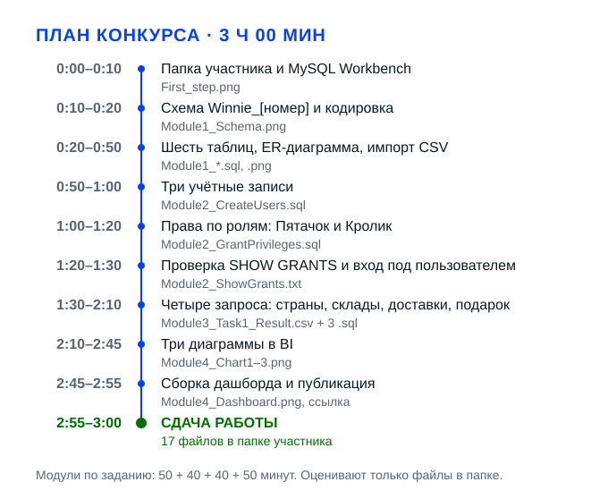
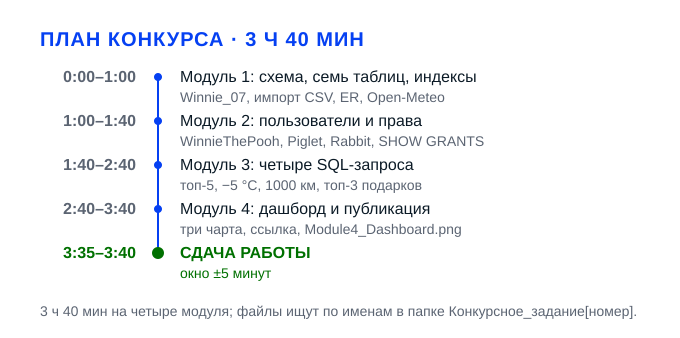
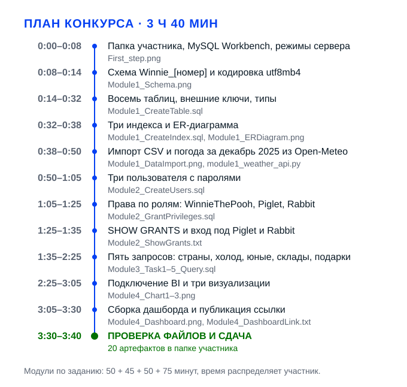

Администрирование баз данных (Р,О)
Задания ниже — официальные файлы «Абилимпикс» (источник: abilympics-russia.ru), разложенные по категориям. Решения написаны по тексту задания, регламенту и критериям оценки; в них указано, что именно проверяет эксперт.
Школьник
14–16 лет, базовый уровень заданияВыдержка из официального конкурсного задания: страницы, относящиеся к категории «Школьник» (стр. 5–13 источника).
Пошаговое решение
Задание «День рождения Иа-Иа» — это четыре модуля за 180 минут: 50 минут на схему и данные, 40 на права доступа, 40 на SQL-запросы и ещё 50 на дашборд. Всё держится на одной базе Winnie_[номер участника] с шестью таблицами: Children, Countries, Votes, Honey_Storages, Honey_Inventory и Honey_Deliveries. Голоса собраны в декабре 2025, мед лежит на трёх складах — в Москве, Санкт-Петербурге и Казани, а у доставки четыре статуса: «Сборка», «В пути», «Доставлен» и «Отменен». Оценивают не замысел, а семнадцать файлов с точными именами: скриншоты, .sql, .csv и .txt в папке Конкурсное_задание[номер участника]. Поэтому самая частая потеря баллов здесь — не «не получилось», а «сделал и забыл сохранить под нужным именем». Работайте в порядке модулей: каждый следующий опирается на предыдущий, и запросы модуля 3 физически не выполнить, если таблицы модуля 1 остались пустыми.

Задача 1. Создать схему, шесть таблиц и загрузить данныеМодуль 1 · 50 минут
Первый модуль — фундамент: если схема названа неверно или таблицы пустые, модули 2–4 оценивать не на чем. За 50 минут нужно пройти путь от разбора CSV до заполненной базы: создать схему Winnie_[номер], спроектировать шесть таблиц с первичными и внешними ключами, построить ER-диаграмму и импортировать данные. На выходе — четыре скриншота и один SQL-скрипт, и каждый из них закрывает свою строку в листе критериев.
Действие 1.1. Подготовить папку и запустить MySQL Workbench
Шаг 1.1.1
Находим свой номер участника: он указан в папке «Абилимпикс_Школьники» на рабочем столе, в файле жеребьёвки, и совпадает с номером рабочего места. Создаём рядом папку с именем Конкурсное_задание и этим номером — кириллицей, без пробелов, ровно в той форме, что написана в задании. Внутрь сразу кладём пустой текстовый файл checklist.txt и первым делом записываем в него номер и полное имя схемы, например Winnie_12: дальше вы будете копировать это имя в каждый скрипт.
Номер участника входит в имя схемы Winnie_[номер], поэтому ошибка в одной цифре тянется через все четыре модуля: скрипты выполняются на несуществующей базе, а эксперт ищет артефакты не в той папке. Сверка номера занимает две минуты из 180 и закрывает сразу четыре строки листа критериев, где проверяется наличие файлов в папке участника.
В проводнике путь заканчивается на Конкурсное_задание12 (или другой ваш номер), а не на «Новая папка (2)». Имя схемы в checklist.txt посимвольно совпадает с номером на бейдже и на табличке рабочего места, включая регистр буквы W.
Папка без номера или с номером, набранным по памяти: работа сделана полностью, но её ищут в другом месте, и по листу критериев это незакрытые строки во всех четырёх модулях. Вторая ошибка — складывать файлы прямо на рабочий стол, а в папку переносить в конце: в спешке половина остаётся снаружи.
Эксперт открывает папку участника до начала оценивания и сверяет её имя с номером; дальше он смотрит только внутрь, поэтому «файл есть, но в другом месте» для него равно «файла нет».
Шаг 1.1.2
Запускаем MySQL Workbench двойным щелчком по ярлыку и ждём, пока прогрузится стартовая страница со списком подключений. Открываем подключение Local instance MySQL на localhost, порт 3306, пользователь root: вводим пароль, который выдал эксперт, и ждём зелёный значок соединения в нижней строке состояния. Только после этого делаем скриншот всего окна — с панелью Navigator слева и вкладкой Query 1 в центре.
По заданию первый артефакт модуля — скриншот запущенной программы, файл First_step.png, и он проверяется отдельно от всего остального. Смысл не в самой картинке, а в подтверждении, что среда поднята и соединение с сервером живое: если вместо рабочего окна на снимке пустой экран с ошибкой подключения, следующие 50 минут вы потратите на выяснение отношений с сервером.
В нижней строке окна нет красной надписи об ошибке, слева в Navigator видны вкладки Administration и Schemas, а в Query 1 курсор стоит и вводится текст. Снимок сохраняем через Win+Shift+S или Print Screen в Paint, имя файла — точно First_step.png, расширение маленькими буквами.
Сделать снимок до подключения, когда на экране только стартовая страница Workbench без окна редактора: эксперт видит, что программа запущена, но не видит работы с сервером. Вторая ошибка — сохранить скриншот в формате .jpg под именем First_step.png, и файл перестаёт открываться у проверяющего.
Эксперт смотрит на этот файл первым и по нему понимает, был ли участник в среде вообще; снимок делается один раз в начале и больше не переделывается. Снимок делается один раз и не переделывается.
Шаг 1.1.3
Пока соединение свежее, проверяем окружение тремя запросами в одном окне: SELECT VERSION();, SELECT @@character_set_server, @@collation_server; и SELECT @@sql_mode;. Результат не записываем в файл, но запоминаем: от версии зависит имя кодировки по умолчанию — в MySQL 8.0 это utf8mb4_0900_ai_ci, в 5.7 и MariaDB — utf8mb4_general_ci, а от sql_mode зависит, будет ли сервер ругаться на пустые даты при импорте.
Эти три значения определяют, какой синтаксис пройдёт без ошибок в следующих шагах. Половина типовых сбоев на чемпионате — не логические, а средовые: запрос написан для 8.0, а сервер 5.7 не знает COLLATE utf8mb4_0900_ai_ci и отвечает ошибкой 1273. Знать версию заранее дешевле, чем выяснять её по красному тексту посреди модуля.
VERSION() возвращает 8.0.x или 8.4.x — значит, работаем с utf8mb4_0900_ai_ci; если 5.7.x, берём utf8mb4_general_ci и больше к этому не возвращаемся. В sql_mode не должно быть STRICT_ALL_TABLES в одиночку без NO_ZERO_DATE — иначе пустая дата из CSV не загрузится.
Пропустить проверку и получить ошибку 1273 Unknown collation на третьем шаге, когда уже написана половина скрипта. Вторая ошибка — увидеть в sql_mode NO_ZERO_DATE и всё равно импортировать даты как есть, а потом чинить двадцать строк вручную.
Эксперт не смотрит на эти запросы, но по тому, как быстро участник выходит из ошибок кодировки, видно, понимает ли он среду или действует наугад. Отдельного балла за среду нет, но потерянные минуты вычитаются из модуля 1.
Действие 1.2. Создать схему Winnie_[номер] с нужной кодировкой
Шаг 1.2.1
В панели Navigator слева нажимаем правой кнопкой на пустое место в списке Schemas и выбираем Create Schema, либо пишем запрос вручную: CREATE SCHEMA `Winnie_12` CHARACTER SET utf8mb4 COLLATE utf8mb4_0900_ai_ci;. Имя обязательно берём в обратные кавычки — подчёркивание и цифры в имени допустимы, но кавычки защищают от случайностей и делают скрипт переносимым. Нажимаем молнию Execute и ждём зелёное сообщение в панели Action Output.
Схема с правильным именем — первое, что проверяется в модуле 1, и это база для всего остального: таблицы создаются внутри неё, права в модуле 2 выдаются на неё, а запросы модуля 3 выполняются в её контексте. Если схема называется Winnie (без номера), работа технически сделана, но строка критерия о создании схемы Winnie_[номер] остаётся незакрытой.
В дереве Schemas появился узел Winnie_12, он раскрывается и пока пуст. В Action Output последняя строка — Apply succeeded без предупреждений. Проверить кодировку можно сразу: SHOW CREATE SCHEMA `Winnie_12`; — в ответе должно стоять DEFAULT CHARACTER SET utf8mb4.
Создать схему через графический мастер и не заметить, что в поле Collation осталось latin1_swedish_ci: кириллица в названиях подарков превратится в знаки вопроса ещё на импорте. Вторая ошибка — имя вида Winnie-12 с дефисом, который MySQL воспринимает как минус и требует кавычек в каждом запросе.
Эксперт сверяет имя схемы посимвольно с номером участника и смотрит на кодировку в момент проверки скриншота; расхождение в один символ — минус строка.
Шаг 1.2.2
Делаем схему схемой по умолчанию: двойной щелчок по имени в дереве Schemas, после чего оно становится полужирным, а в заголовке Query 1 появляется подпись Winnie_12. Дополнительно в самом верху рабочего скрипта пишем USE `Winnie_12`; — тогда скрипт не зависит от того, куда щёлкнули мышью. Если кодировка всё-таки оказалась не та, исправляем одной командой: ALTER SCHEMA `Winnie_12` CHARACTER SET utf8mb4 COLLATE utf8mb4_general_ci;.
Полужирное имя в дереве — это не украшение: именно в эту схему попадут таблицы, созданные без явного указания базы. Без USE в скрипте таблицы легко уезжают в соседнюю схему, и потом загрузка CSV падает с ошибкой «таблица не найдена», хотя глазами вы её только что создали.
Имя схемы в дереве полужирное, а в первой строке скрипта стоит USE с тем же именем. Проверка на месте: SELECT DATABASE(); возвращает Winnie_12, а SHOW CREATE SCHEMA показывает utf8mb4 и нужное collation.
Работать без USE, полагаясь на выделение мышью: одно случайное переключение — и шесть таблиц уходят в схему sys или в соседнюю Winnie_11, а импорт потом ищет их не там. Вторая ошибка — менять кодировку после создания таблиц: ALTER на схеме не переделывает уже созданные столбцы.
Эксперт смотрит, есть ли в скрипте USE: это признак того, что участник понимает, в какой базе он работает, а не действует в текущем окне наугад. В спорной ситуации он первым делом просит выполнить SELECT DATABASE().
Шаг 1.2.3
Готовим скриншот Module1_Schema.png: раскрываем дерево Schemas так, чтобы была видна строка Winnie_12, и держим в соседней вкладке результат SHOW CREATE SCHEMA `Winnie_12`;, где явно написано CHARACTER SET utf8mb4. Снимаем область экрана целиком — и дерево, и результат запроса в одном кадре. Сохраняем в папку участника под именем Module1_Schema.png, без пробелов и русских букв в имени файла.
В задании отдельно сказано, что на скриншоте панель Schemas должна содержать созданную схему с правильным названием и кодировкой. Дерево в Workbench показывает только имя, поэтому кодировку подтверждаем выводом SHOW CREATE SCHEMA в том же кадре — это единственный способ показать её наглядно и без спора о том, что было выбрано в мастере.
На снимке читаются Winnie_12 и строка DEFAULT CHARACTER SET utf8mb4; края окна не обрезаны, текст не размыт, курсор не закрывает имя схемы. Файл открывается двойным щелчком, вес — десятки килобайт, а не два мегабайта сжатого экрана.
Скриншот только дерева Schemas без подтверждения кодировки: строка про кодировку в листе критериев остаётся спорной, и её обычно не засчитывают. Вторая ошибка — сохранить файл как Module1_Schema.PNG в верхнем регистре: на части проверочных машин имена сравниваются с учётом регистра.
Эксперт открывает снимок и ищет два элемента: имя схемы и слово utf8mb4; если одного нет, строка считается незакрытой, даже когда база реально создана.
Действие 1.3. Разобрать CSV и спроектировать модель
Шаг 1.3.1
Открываем папку «Данные для БД» и по очереди смотрим каждый CSV — двойным щелчком в Excel, но без сохранения, только на чтение. Выписываем в checklist.txt для каждого файла три вещи: имя файла, список столбцов и одну-две строки живых данных. Сразу помечаем, где есть даты, где числа, а где текст на кириллице: именно эти три типа дадут больше всего проблем при импорте, и лучше увидеть их до создания таблиц, чем после.
Структура таблиц должна вырасти из данных, а не из фантазии: имена столбцов в запросах модуля 3 заданы жёстко — child_name, gift_name, honey_amount, dispatch_date, — и если в вашей таблице столбец называется иначе, запрос не выполнится. Разбор файлов до проектирования экономит переименования потом, а они дорогие: ALTER TABLE на заполненной таблице занимает время и рвёт связи.
В checklist.txt по каждому файлу есть строка со столбцами, и на её основе можно вслух назвать сущность: дети, страны, голоса, склады, остатки, доставки. Если для какого-то файла сущность не называется одним словом — вы ещё не разобрались в данных, вернитесь и посмотрите строки внимательнее.
Открыть первый файл, увидеть знакомые слова и начать создавать таблицы по памяти: к третьему файлу выясняется, что gift_name лежит не в той таблице, а возраст записан текстом «7 лет». Вторая ошибка — открыть CSV в Excel и случайно сохранить его, превратив даты в формат 01.12.2025 и потеряв исходник.
Эксперт не смотрит, как вы читаете файлы, но по структуре таблиц сразу видно, читал ли участник данные или угадывал: лишние столбцы-дубли и текстовый возраст читаются как угадывание.
Шаг 1.3.2
Раскладываем данные по шести таблицам и убираем повторения: названия стран храним один раз в Countries, а в Children оставляем только country_id; города складов — один раз в Honey_Storages, а количество меда — в отдельной Honey_Inventory со ссылкой на storage_id. Названия подарков повторяются в каждом голосе, но выносить их в отдельный справочник не нужно: по заданию gift_name ищется прямо в Votes, и лишняя таблица только усложнит запрос.
Это и есть нормализация, о которой прямо сказано в задании: каждая таблица хранит информацию только об одном типе сущности, повторяющиеся строки заменяются ссылкой на идентификатор. Практическая выгода видна в модуле 3: чтобы посчитать голоса по странам, достаточно соединить три таблицы по ключам, и страна не размножается по тысяче строк голосования.
Проверяем правило простым вопросом к каждой таблице: если удалить одну строку, информация какого типа исчезнет? Для Children — сведения о ребёнке, для Votes — один голос, для Honey_Inventory — остаток на складе. Если ответ получается «и то, и другое», таблица содержит две сущности и её надо делить.
Сложить всё в одну широкую таблицу «на всякий случай», как в Excel: тогда в строке голосования придётся повторять страну и город склада, а при исправлении названия страны часть строк останется со старым. Строка критерия про нормализацию при этом не закрывается вообще.
Эксперт смотрит на состав таблиц и на отсутствие в них текстовых дублей; шесть таблиц с осмысленными связями против одной широкой — это первое, что видно в ER-диаграмме.
Шаг 1.3.3
Назначаем ключи и типы. В каждой таблице — свой первичный ключ с AUTO_INCREMENT: child_id, country_id, vote_id, storage_id, inventory_id, delivery_id. Внешние ключи: Children.country_id → Countries.country_id, Votes.child_id → Children.child_id, Honey_Inventory.storage_id и Honey_Deliveries.storage_id → Honey_Storages.storage_id. По типам: имена VARCHAR(100), возраст TINYINT UNSIGNED, даты DATE, honey_amount INT UNSIGNED NOT NULL DEFAULT 0, статус ENUM из четырёх значений задания.
Типы — это не формальность: TINYINT вместо VARCHAR для возраста позволяет в запросе сравнить age > 10, а DATE вместо текста даёт возможность искать пустую дату через IS NULL. ENUM со значениями «Сборка», «В пути», «Доставлен», «Отменен» не даст вписать опечатку и заодно закрывает строку критерия о корректных типах данных, которую эксперт проверяет по скрипту таблиц.
В скрипте у каждой таблицы есть PRIMARY KEY, у дочерних — FOREIGN KEY с ON DELETE RESTRICT или CASCADE, заданным осознанно. Возраст не строковый, даты именно DATE, а не DATETIME: в CSV время отсутствует, и лишние нули в дате потом мешают сравнению.
Оставить все столбцы VARCHAR(255) «чтобы точно влезло»: запросы с датами и числами начинают работать неправильно, а сортировка по honey_amount идёт по алфавиту — 9 окажется больше 100. Вторая ошибка — не поставить UNIQUE на child_id в Votes, и один ребёнок получает два голоса.
Эксперт открывает Module1_CreateTable.sql и смотрит типы глазами: VARCHAR на месте даты и отсутствие внешних ключей — типовые минусы в этом модуле. Отдельно он смотрит на UNIQUE у голосов и на UNSIGNED у счётчиков.
Шаг 1.3.4
Определяем порядок создания таблиц и записываем его в checklist.txt: сначала справочники Countries и Honey_Storages, потом Children, потом Votes и Honey_Inventory, последней Honey_Deliveries. Причина простая: дочерняя таблица не создастся, пока нет родительской, — MySQL ответит ошибкой 1824 или 1215 при попытке сослаться на несуществующий ключ. Тот же порядок потом повторится при импорте CSV, и его лучше не изобретать дважды.
Порядок — самая дешёвая часть проектирования и самая частая причина красных ошибок: скрипт из шести CREATE TABLE, запущенный целиком, падает на первой же таблице с внешним ключом, если родитель ещё не создан. Один раз продуманный порядок превращает запуск скрипта в одно нажатие молнии вместо шести с переставлением строк.
В checklist.txt стоит последовательность из шести имён, и она совпадает с порядком блоков в будущем скрипте. Мысленная проверка: у каждой таблицы все её внешние ключи ссылаются только на таблицы, созданные выше.
Создавать таблицы в том порядке, в котором они перечислены в задании: Votes идёт перед Honey_Inventory, и скрипт спотыкается, хотя логика верная. Вторая ошибка — отключить проверку внешних ключей SET FOREIGN_KEY_CHECKS=0 и забыть включить обратно: тогда в базу попадут голоса без детей.
Эксперт видит порядок блоков в скрипте и делает вывод о том, понимает ли участник связи в модели, а не только синтаксис CREATE TABLE. Порядок блоков в файле виден в первые секунды чтения.
Действие 1.4. Создать шесть таблиц и выгрузить скрипт
Шаг 1.4.1
Пишем первые два CREATE TABLE — справочники. Countries: country_id INT UNSIGNED NOT NULL AUTO_INCREMENT PRIMARY KEY, country_name VARCHAR(80) NOT NULL, плюс UNIQUE KEY на country_name. Honey_Storages: storage_id INT UNSIGNED NOT NULL AUTO_INCREMENT PRIMARY KEY, city VARCHAR(60) NOT NULL. Движок указываем явно ENGINE=InnoDB DEFAULT CHARSET=utf8mb4 — именно InnoDB умеет внешние ключи, а MyISAM, который иногда стоит по умолчанию в старых сборках, их молча игнорирует.
Справочники создаются первыми, потому что на них ссылаются все остальные таблицы, и они же самые маленькие: три строки складов и список стран. UNIQUE на названии страны и города — дешёвая страховка от двойного импорта: если CSV загрузят дважды, вторая попытка упрётся в ограничение, а не создаст дубли, из-за которых в отчёте по странам появятся лишние строки.
Обе таблицы появились в дереве, у каждой видна иконка ключа напротив первичного ключа. Проверка: SHOW CREATE TABLE `Countries`; содержит PRIMARY KEY и UNIQUE KEY, а в конце строки стоит ENGINE=InnoDB.
Оставить движок по умолчанию, не проверив его: на стенде с MyISAM внешние ключи создаются без ошибки, но не работают, и в ER-диаграмме связей не будет. Вторая ошибка — AUTO_INCREMENT на текстовом столбце, что даёт ошибку 1063.
Эксперт смотрит на скрипт: наличие ENGINE=InnoDB и UNIQUE там, где возможны дубли, читается как понимание, а не как копирование шаблона. Проверка движка — быстрый тест на понимание, зачем нужны внешние ключи.
Шаг 1.4.2
Создаём Children и Votes. Children: child_id INT UNSIGNED AUTO_INCREMENT PRIMARY KEY, child_name VARCHAR(100) NOT NULL, age TINYINT UNSIGNED NOT NULL, country_id INT UNSIGNED NOT NULL, CONSTRAINT fk_child_country FOREIGN KEY (country_id) REFERENCES Countries(country_id). Votes: vote_id INT UNSIGNED AUTO_INCREMENT PRIMARY KEY, child_id INT UNSIGNED NOT NULL, gift_name VARCHAR(120) NOT NULL, vote_date DATE NULL, UNIQUE KEY uq_vote_child (child_id), внешний ключ на Children.
UNIQUE на child_id в Votes — прямое выражение правила из задания: каждый ребёнок голосует один раз. Ограничение на уровне базы надёжнее, чем надежда на честность CSV: при двойной загрузке файла база откажет, а запрос «самый популярный подарок» не посчитает один голос дважды. Это же ограничение потом пригодится в модуле 3, когда нужно объяснить, почему COUNT(*) равен числу детей.
Обе таблицы созданы, у Votes в списке индексов видно uq_vote_child, у Children — fk_child_country. Быстрая проверка связей: SHOW CREATE TABLE `Votes`; заканчивается строкой CONSTRAINT ... FOREIGN KEY ... REFERENCES `Children` (`child_id`).
Забыть UNIQUE и получить после импорта детей с двумя голосами: отчёт по странам завышен, а объяснить расхождение с числом строк в Children уже некогда. Вторая ошибка — внешний ключ на country_name вместо country_id, из-за чего переименование страны рвёт связи.
Эксперт ищет в скрипте UNIQUE на голосах: это единственное место, где правило «один ребёнок — один голос» можно проверить технически. Если UNIQUE нет, он сравнивает COUNT(*) в Votes с числом детей.
Шаг 1.4.3
Создаём Honey_Inventory и Honey_Deliveries. Inventory: inventory_id INT UNSIGNED AUTO_INCREMENT PRIMARY KEY, storage_id INT UNSIGNED NOT NULL, honey_amount INT UNSIGNED NOT NULL DEFAULT 0, внешний ключ на Honey_Storages. Deliveries: delivery_id INT UNSIGNED AUTO_INCREMENT PRIMARY KEY, child_id INT UNSIGNED NOT NULL, storage_id INT UNSIGNED NULL, status ENUM('Сборка','В пути','Доставлен','Отменен') NOT NULL DEFAULT 'Сборка', dispatch_date DATE NULL, delivery_date DATE NULL, два внешних ключа и UNIQUE на child_id.
Обратите внимание на NULL у дат: именно пустой dispatch_date — это и есть признак «мед ещё не отправлен», по которому строится третий запрос модуля 3. Если объявить дату NOT NULL, незаполненные строки из CSV просто не загрузятся или получат нулевую дату, и запрос WHERE dispatch_date IS NULL вернёт пустой результат. ENUM из четырёх статусов повторяет формулировку задания дословно.
SHOW CREATE TABLE `Honey_Deliveries`; показывает ENUM с четырьмя значениями и dispatch_date DATE DEFAULT NULL. У Honey_Inventory honey_amount объявлен целым без знака со значением по умолчанию 0 — тогда склад без остатка честно покажет ноль, а не NULL.
Объявить dispatch_date NOT NULL: при импорте строки без даты отваливаются с ошибкой 1364, и часть доставок теряется. Вторая ошибка — статус обычным VARCHAR, куда из CSV приедет «в пути» строчными, и фильтр по «В пути» ничего не найдёт.
Эксперт сверяет ENUM с четырьмя статусами из задания и смотрит, допускают ли даты пустое значение; это видно в скрипте в одну строку. Пустая дата — ключ ко всему третьему запросу модуля 3, и эксперт это знает.
Шаг 1.4.4
Выгружаем скрипт создания таблиц в файл Module1_CreateTable.sql. Проще всего так: выделяем все шесть CREATE TABLE в окне запроса и сохраняем через File → Save Script As, имя ровно Module1_CreateTable.sql, кодировка UTF-8. Более аккуратный путь для тех, кто собрал EER-модель: File → Export → Forward Engineer SQL CREATE Script — тогда скрипт генерируется из модели и включает все ограничения автоматически.
Скрипт — единственный артефакт модуля, по которому можно проверить структуру без доступа к вашей базе, и в задании он назван прямо: экспорт со всеми определениями PRIMARY KEY, FOREIGN KEY, AUTO_INCREMENT и типами данных. Скрипт, сохранённый из окна запроса, честнее: в нём ровно то, что реально выполнялось, а не то, что модель хотела бы выполнить.
Файл открывается в блокноте, начинается с USE `Winnie_12`; и содержит шесть блоков CREATE TABLE. Поиск по тексту (Ctrl+F) находит шесть вхождений PRIMARY KEY и минимум пять FOREIGN KEY. Вес файла — единицы килобайт.
Сохранить только первые три таблицы, потому что остальные дописывались в другом окне: скрипт формально есть, а половины структуры в нём нет. Вторая ошибка — сохранить в кодировке ANSI, и кириллица в ENUM превращается в ромбики, после чего скрипт нельзя запустить заново.
Эксперт запускает этот скрипт на чистой базе, чтобы проверить его полноту: если после запуска таблиц меньше шести, модуль не засчитывается целиком. Частично выполненный скрипт он отмечает, но балл за структуру не ставит.
Действие 1.5. Построить ER-диаграмму и загрузить данные
Шаг 1.5.1
Открываем Database → Reverse Engineer, указываем то же подключение localhost, выбираем схему Winnie_12 и доводим мастер до конца. Workbench сам прочитает шесть таблиц и нарисует их с птичьими лапками на связях. Дальше раскладываем таблицы руками: Countries слева, Children в центре, Votes справа от Children, склады и остатки — в нижнем ряду. Кнопка Auto Layout ставит их быстро, но почти всегда с наложениями, поэтому финальную раскладку делаем сами.
ER-диаграмма — отдельный результат модуля 1 и отдельный файл, и её оценивают как модель, а не как картинку: видно ли, что у голоса один ребёнок, а у ребёнка одна страна. Аккуратная раскладка здесь не косметика — на диаграмме с наложением подписей эксперт физически не может прочитать связи, и строка критерия остаётся неподтверждённой.
На диаграмме шесть прямоугольников, ни один не перекрывает другой, у связей подписаны кардинальности 1:1 и 1:N, а линии не пересекаются без необходимости. Все шесть таблиц видны в одном кадре без прокрутки — иначе на снимке окажется половина модели.
Экспортировать диаграмму сразу после Reverse Engineer, пока она наложена и часть таблиц уехала за край: снимок получается нечитаемым. Вторая ошибка — рисовать связи вручную и забыть про одну, чаще всего про Honey_Inventory.
Эксперт смотрит на диаграмму в момент сдачи и сверяет число связей с числом внешних ключей в скрипте; расхождение читается как небрежность модели. Подписанные кардинальности 1:N он отличает от простой линии.
Шаг 1.5.2
Экспортируем диаграмму в файл: File → Export → Export as PNG, в диалоге ставим масштаб побольше, чтобы читались имена столбцов, и имя файла Module1_ERDiagram.png. Если экспорт из Workbench не срабатывает, снимаем экран целиком, развернув окно на весь монитор и увеличив масштаб диаграммы до 100 процентов. Главное — чтобы на снимке читались имена таблиц и подписи связей, а не только прямоугольники.
Формат PNG требует само задание, и это разумно: диаграмма должна открываться без специального просмотрщика на любой машине эксперта. Скриншот окна с панелью инструментов засчитывают, но экспорт даёт чистую картинку без интерфейса, и её проще сопоставить со скриптом — а сопоставление и есть смысл этой строки критерия.
Файл открывается в просмотрщике изображений, на нём шесть таблиц и минимум пять связей, текст читается без увеличения. Разрешение достаточное, если при масштабе 100 процентов видно child_id и country_id.
Сохранить диаграмму в .jpg под именем .png или отдать файл размером 200 на 150 пикселей, где видно только общие очертания. Вторая ошибка — снять только верхнюю часть модели и потерять таблицы доставки.
Эксперт открывает PNG и ищет на нём все шесть имён таблиц; отсутствие любого из них — минус строка по модулю 1. Отдельно оценивается читаемость: если имена столбцов не разобрать, диаграмма считается неинформативной.
Шаг 1.5.3
Грузим CSV. Самый предсказуемый путь для школьной категории — мастер импорта: правой кнопкой по таблице → Table Data Import Wizard, выбираем файл, в предпросмотре проверяем разделитель, кодировку UTF-8 и галочку «первая строка — заголовки», затем сопоставляем столбцы файла со столбцами таблицы. Порядок строго по модели: Countries, Honey_Storages, Children, Votes, Honey_Inventory, Honey_Deliveries.
Импорт идёт в том же порядке, что и создание таблиц, иначе первая же строка с неизвестным country_id упадёт с ошибкой 1452 Foreign key constraint fails. Предпросмотр в мастере — единственная возможность увидеть, что кириллица приехала как utf8mb4, а не как набор ромбиков: после импорта исправлять придётся перезагрузкой всей таблицы.
Мастер заканчивается сообщением Imported records и числом строк. Сверяем это число с количеством строк в CSV — они должны совпасть до единицы. Выборочно смотрим пять строк: страна на кириллице читается, а не превратилась в знаки вопроса.
Загрузить Votes раньше Children и получить ошибку 1452 на каждой строке, а потом загрузить файл дважды, пытаясь «исправить»: часть голосов удваивается, и отчёт по странам завышается. Вторая ошибка — оставить кодировку по умолчанию cp1251 и получить «?????» вместо названий подарков.
Эксперт проверяет не процесс, а результат: число строк и читаемость кириллицы в таблицах — самые быстрые признаки того, что импорт удался. На категории «Школьники» он может попросить показать число строк прямо в Workbench.
Шаг 1.5.4
Доводим даты и пустые значения после импорта. Если dispatch_date приехал нулевой датой 0000-00-00 или пустой строкой, правим одной командой: UPDATE `Honey_Deliveries` SET dispatch_date = NULL WHERE dispatch_date = '0000-00-00' OR dispatch_date = '';. Если мастер вообще отказался грузить даты в формате ДД.ММ.ГГГГ, грузим этот столбец как VARCHAR во временную таблицу, а потом переносим через STR_TO_DATE(dispatch_date, '%d.%m.%Y').
Без этого шага третий запрос модуля 3 вернёт пустой результат, и вы потеряете баллы сразу в двух модулях: данные формально загружены, но признак «не отправлен» в них не выражен. Нулевая дата — не NULL: условие IS NULL её не находит, а сравнение с нулём даёт предупреждение и пустую выборку.
Проверка двумя запросами: SELECT COUNT(*) FROM `Honey_Deliveries` WHERE dispatch_date IS NULL; даёт не ноль, а SELECT COUNT(*) ... WHERE dispatch_date = '0000-00-00'; даёт ноль. Значит, пустые даты стали настоящими NULL.
Оставить нулевые даты, считая, что «это же тоже пусто»: запрос с IS NULL возвращает ничего, и участник идёт переписывать запрос вместо данных, теряя время модуля 3. Вторая ошибка — UPDATE без WHERE, обнуляющий реальные даты отправки.
Эксперт смотрит на согласованность: если в Module3_Task3_Query.sql стоит IS NULL, а в таблице нулевые даты, запрос формально верный, но результат пустой, и балл снижается за данные.
Шаг 1.5.5
Снимаем последний артефакт модуля: открываем вкладку с результатом SELECT * FROM `Votes` LIMIT 100; (или Children — что заполнено нагляднее), чтобы в сетке были видны строки данных, и делаем снимок окна целиком с именем таблицы в заголовке. Сохраняем как Module1_DataImport.png в папку участника. Заодно записываем в checklist.txt итоговые числа строк по каждой таблице — они понадобятся для сверки в модулях 3 и 4.
Этот файл — доказательство того, что данные действительно в базе, а не только что мастер импорта был открыт. Эксперт по нему видит и факт заполнения, и качество данных: читаемые имена, осмысленные даты, ненулевые количества меда. Список чисел строк в checklist.txt пригодится позже, когда дашборд покажет другие итоги и надо будет понять, где расхождение.
На снимке видно имя таблицы и не меньше десяти строк с данными, среди них есть строки с кириллицей. Число строк в панели Action Output совпадает с тем, что вы записали в checklist.txt. Ни одна таблица не должна показывать ноль строк.
Сделать снимок пустой таблицы: мастер отработал с ошибкой, но окно открыто, и участник этого не заметил. Вторая ошибка — снять только заголовок окна без строк, что ничего не доказывает. Третья ошибка — снять таблицу, где видны только заголовки столбцов.
Эксперт открывает файл в паре с Module1_CreateTable.sql и проверяет, что столбцы на снимке совпадают со структурой из скрипта. Если на снимке не хватает части столбцов, он сверяет его со скриптом и отмечает расхождение.
Задача 2. Разграничить доступ для Винни-Пуха, Пятачка и КроликаМодуль 2 · 40 минут
В команде Винни-Пуха у каждого своя роль: Винни-Пух — главный, Пятачок работает с голосами, Кролик отвечает за мед и доставку. За 40 минут нужно превратить это в три учётные записи MySQL и выдать им ровно те права, которые описаны в задании: полный доступ, три таблицы голосования и три таблицы меда. Проверяется не текст GRANT, а поведение: под Пятачком таблица доставок должна быть недоступна, и это подтверждается выводом SHOW GRANTS и живым входом в консоль.
Действие 2.1. Создать три учётные записи
Шаг 2.1.1
Пишем три команды в одном окне: CREATE USER 'WinnieThePooh'@'localhost' IDENTIFIED BY 'Med_2026_Winnie!'; CREATE USER 'Piglet'@'localhost' IDENTIFIED BY 'Med_2026_Piglet!'; CREATE USER 'Rabbit'@'localhost' IDENTIFIED BY 'Med_2026_Rabbit!';. Хост указываем именно localhost, а не %, потому что в проверке задания стоят имена 'Piglet'@'localhost' и 'Rabbit'@'localhost', и запись с другим хостом в этом выводе не появится. Пароли — от 12 символов, с цифрами и знаком, иначе политика сложности их отклонит.
Пользователи — первая половина модуля 2, и они должны существовать до выдачи прав: GRANT на несуществующего пользователя в MySQL 8 падает с ошибкой 1410, а не создаёт его автоматически, как было в старых версиях. Хост localhost выбран не для красоты: строка SHOW GRANTS FOR 'Piglet'@'localhost' ищет именно такую учётную запись, и при записи с % вы увидите только USAGE.
После выполнения: SELECT user, host FROM mysql.user WHERE user IN ('WinnieThePooh','Piglet','Rabbit'); возвращает ровно три строки, у всех в столбце host стоит localhost. В Action Output нет предупреждений о политике паролей.
Придумать пароль вида piglet123: сервер с включённым validate_password ответит ошибкой 1819 Your password does not satisfy the current policy, и участник начинает менять команду, хотя менять надо пароль. Вторая ошибка — создать пользователей с хостом %, а в SHOW GRANTS запрашивать localhost.
Эксперт смотрит на список учётных записей в mysql.user и на хосты: три записи с localhost — норма, шесть записей с разными хостами — признак того, что участник действовал наугад.
Шаг 2.1.2
Сохраняем скрипт создания пользователей в файл Module2_CreateUsers.sql. Пишем команды в отдельной вкладке Query, проверяем, что каждая заканчивается точкой с запятой, и сохраняем через File → Save Script As с именем ровно Module2_CreateUsers.sql. Пароли в файл можно не включать — в задании это оговорено отдельно, — но тогда в комментарии рядом укажите, что пароль выдан устно и хранится у администратора.
Отдельный файл нужен потому, что проверяют именно скрипт, а не факт существования пользователей: эксперт должен увидеть три команды CREATE USER в одном документе. Если писать их прямо в общем окне вместе с модулем 1, при сохранении в файл попадёт половина работы и скрипт потеряет смысл.
В файле три строки CREATE USER, каждая с именем и хостом localhost, файл открывается в блокноте без кракозябр, а имена пользователей совпадают с заданием посимвольно, включая заглавные буквы. Пароли либо отсутствуют, либо закрыты комментарием.
Сохранить скрипт с паролями в открытом виде, хотя задание этого не требует: это не ошибка по баллам, но лишний риск, если файл потом показывают на разборе. Хуже — сохранить только первую команду и потерять две остальные.
Эксперт открывает файл и считает команды: три CREATE USER с правильными именами — строка закрыта, две — нет. Он же проверяет регистр: 'Piglet' и 'piglet' в MySQL — разные учётные записи.
Шаг 2.1.3
Проверяем, что учётные записи работают, а не просто записаны в таблицу: открываем второе подключение в Workbench (кнопка с плюсом на стартовой странице) и пытаемся войти как Piglet с его паролем. Если вход прошёл и соединение зелёное, учётная запись живая; если сервер отвечает Access denied, значит, пароль записан с другим регистром или хостом. То же самое повторяем для Rabbit, чтобы не выяснять это в конце модуля.
Проверка входа до выдачи прав — это проверка фундамента: пока пользователь не подключается, любые GRANT бессмысленны, а ошибка доступа всплывёт в самый неподходящий момент, когда вы будете демонстрировать разграничение. Две минуты на вход сейчас экономят десять минут на разбор ошибки 1045 Access denied позже.
Второе соединение открывается, в заголовке окна видно имя Piglet, а SELECT CURRENT_USER(); возвращает Piglet@localhost. Для Rabbit — то же самое с его именем. В списке подключений обе записи видны отдельно.
Проверять только наличие строки в mysql.user и не проверять вход: пароль мог быть обрезан при копировании, и выяснится это на демонстрации. Вторая ошибка — оставить открытое root-соединение активным и случайно выполнить проверочные запросы под ним.
Эксперт при проверке прав просит участника подключиться под нужным пользователем; если подключение не проходит, модуль 2 не оценивается. Заготовленное соединение в Workbench экономит время на этой демонстрации.
Действие 2.2. Выдать права по ролям
Шаг 2.2.1
Винни-Пуху отдаём полный доступ, но только внутри своей схемы: GRANT ALL PRIVILEGES ON `Winnie_12`.* TO 'WinnieThePooh'@'localhost';. Звёздочка после точки означает все таблицы схемы, а не все базы сервера — это принципиально: ON *.* дал бы главному герою право ронять чужие базы и читать mysql.user с хешами паролей. Отдельно проверяем, что схема в команде названа в обратных кавычках и совпадает с именем из модуля 1.
Полный доступ главному — прямое требование задания, но границы этого доступа эксперт смотрит внимательно: ALL PRIVILEGES на свою схему читается как понимание модели разграничения, а ALL на *.* — как привычка работать под root. Разница в одну звёздочку — разница между «администратор системы» и «администратор всея сервера», и в листе критериев это разные вещи.
SHOW GRANTS FOR 'WinnieThePooh'@'localhost'; возвращает одну строку GRANT ALL PRIVILEGES ON `Winnie_12`.* с идентификацией по паролю, и ни в одной строке нет *.*. Если строк две, значит, остались права от прошлой попытки.
Выдать ALL PRIVILEGES ON *.* — быстро, удобно и сразу закрывает вопрос, но лишает смысла всю идею разграничения: Винни-Пух получает доступ к системным таблицам. Вторая ошибка — опечатка в имени схемы, из-за которой права выдаются на несуществующую базу и GRANT падает с ошибкой 1146.
Эксперт читает вывод SHOW GRANTS и ищет границу: схема после ON — это и есть ответ на вопрос, понял ли участник задачу. Вторая звёздочка вместо имени схемы — типовой минус этого модуля.
Шаг 2.2.2
Пятачку выдаём доступ только к трём таблицам голосования, тремя отдельными командами: GRANT SELECT, INSERT, UPDATE ON `Winnie_12`.`Children` TO 'Piglet'@'localhost'; и то же самое для `Countries` и `Votes`. Именно отдельными командами, а не через звёздочку: звёздочка дала бы доступ ко всем шести таблицам, включая доставки, а это уже нарушение условия. DELETE не даём намеренно — Пятачок собирает и правит голоса, но не удаляет их.
Три таблицы против шести — суть модуля 2, и проверяется она не текстом, а поведением: под Пятачком SELECT из Honey_Deliveries должен упасть с ошибкой 1142. Права SELECT, INSERT, UPDATE выбраны по смыслу работы с голосами, а отсутствие DELETE — сознательное ограничение: иначе один случайный DELETE обнулит голосование, ради которого всё затевалось.
SHOW GRANTS FOR 'Piglet'@'localhost'; показывает три строки GRANT с именами Children, Countries и Votes и ни одной строки с таблицами меда. В каждой строке после ON стоит конкретное имя таблицы, а не звёздочка.
Выдать Пятачку SELECT ON `Winnie_12`.* «чтобы не возиться с тремя командами»: строка критерия про ограничение доступа не закрывается, хотя запросы работают. Вторая ошибка — забыть кавычки вокруг имён таблиц и получить синтаксическую ошибку 1064 посреди модуля.
Эксперт проверяет именно ограниченность: наличие прав на три таблицы и отсутствие прав на три другие — две половины одной строки критерия. Он же смотрит, нет ли DELETE: его отсутствие читается как осознанное решение.
Шаг 2.2.3
Кролику — зеркальный набор по меду: GRANT SELECT, INSERT, UPDATE ON `Winnie_12`.`Honey_Storages` TO 'Rabbit'@'localhost'; и то же для `Honey_Inventory` и `Honey_Deliveries`. Логика та же: Кролик следит за остатками и статусами доставки, значит, ему нужны чтение и правка, но не удаление и не доступ к персональным данным детей. Все шесть команд модуля 2 сохраняем в файл Module2_GrantPrivileges.sql.
Симметрия здесь не украшение: Пятачок и Кролик вместе покрывают все шесть таблиц, но по отдельности не видят чужую половину. Это и есть разграничение доступа, которого требует задание, и именно на стыке проверяется, не выдал ли участник обоим одинаковые права «на всякий случай» — такая щедрость обнуляет смысл модуля.
SHOW GRANTS FOR 'Rabbit'@'localhost'; даёт три строки с таблицами Honey_Storages, Honey_Inventory, Honey_Deliveries. В файле Module2_GrantPrivileges.sql шесть команд GRANT, у каждой — своё имя таблицы.
Выдать Кролику права на Votes, потому что «ему тоже интересно, сколько детей ждут мед»: доступ шире описанного, и строка критерия не закрывается. Вторая ошибка — сохранить скрипт прав раньше, чем дописаны последние команды, и потерять половину.
Эксперт сверяет два вывода SHOW GRANTS между собой: они должны быть зеркальными и не пересекаться ни одной таблицей. Совпадение наборов — признак того, что права выданы по ролям, а не копированием.
Действие 2.3. Проверить права и сохранить доказательства
Шаг 2.3.1
Выполняем две команды из задания дословно: SHOW GRANTS FOR 'Piglet'@'localhost'; и SHOW GRANTS FOR 'Rabbit'@'localhost';. Результат копируем в текстовый файл Module2_ShowGrants.txt — прямо из сетки результатов, выделив строки и нажав Ctrl+C, чтобы имена таблиц и кавычки сохранились как есть. В файле подписываем, где чей вывод, потому что через двадцать минут вы уже не вспомните порядок.
Эти две команды названы в задании явно, и файл с их выводом — отдельная строка критерия. Копирование из сетки, а не перепечатывание руками, важно: одна опечатка в имени таблицы внутри txt читается как несуществующее право, и эксперт тратит время на сверку, которой могло не быть.
В файле два блока, в каждом от одной до трёх строк GRANT, имена таблиц написаны в обратных кавычках, как их выводит сервер. Ни в одном блоке нет строки с Honey_ у Пятачка и с Votes у Кролика. Каждый блок подписан именем пользователя.
Перепечатать вывод вручную и перепутать Honey_Inventory с Honey_Inventorys: файл выглядит правдоподобно, но не совпадает с реальными правами. Вторая ошибка — сохранить вывод только одной команды, хотя задание требует обе.
Эксперт открывает txt и сверяет с живым сервером: расхождение между файлом и SHOW GRANTS в консоли — повод перепроверить весь модуль. Совпадение до символа он отмечает как аккуратность.
Шаг 2.3.2
Проверяем права делом, а не текстом. Открываем соединение под Piglet и выполняем два запроса: SELECT COUNT(*) FROM `Votes`; — должен пройти, и SELECT COUNT(*) FROM `Honey_Deliveries`; — должен упасть с ошибкой 1142 SELECT command denied to user 'Piglet'@'localhost'. Оба результата фиксируем: успешный запрос и текст ошибки. Это самое убедительное доказательство того, что разграничение работает.
SHOW GRANTS показывает, что записано в системных таблицах, но не показывает, что произойдёт при обращении. Живая проверка ловит две типичные проблемы сразу: права выданы не той учётной записи и остались старые права от предыдущей попытки. Ошибка 1142 в ответе — это не неудача, а именно тот результат, который требуется по заданию.
Под Piglet: COUNT(*) по Votes возвращает число, совпадающее с числом строк в таблице, а запрос к Honey_Deliveries даёт красную строку 1142 с упоминанием Piglet@localhost. Если второй запрос прошёл — права слишком широкие, и их надо отозвать.
Проверять только под root, где видны все таблицы, и решить, что права в порядке: под root любая ошибка маскируется. Вторая ошибка — испугаться ошибки 1142 и выдать Пятачку лишние права, чтобы «всё работало».
Эксперт может попросить повторить проверку при нём; способность воспроизвести результат под нужным пользователем ценится выше скриншота. Он также смотрит, не выданы ли права повторно после ошибки.
Шаг 2.3.3
Повторяем ту же проверку под Rabbit: SELECT COUNT(*) FROM `Honey_Inventory`; проходит, SELECT * FROM `Children` LIMIT 1; падает с 1142. Если под пользователем оказались лишние права — например, остались от выдачи ALL на схему, — отзываем их точечно: REVOKE ALL PRIVILEGES ON `Winnie_12`.* FROM 'Rabbit'@'localhost'; и затем выдаём три таблицы заново. В Module2_ShowGrants.txt дописываем строку о том, что проверка выполнена под обоими пользователями.
Вторая половина разграничения проверяется так же, как первая, и именно на ней чаще всплывают остатки прежних экспериментов: участник один раз выдал права звёздочкой, потом «исправил», а старые права остались висеть. REVOKE с последующей точечной выдачей — единственный способ вернуть систему в описанное заданием состояние.
Под Rabbit: доступ к трём таблицам меда есть, к Children нет. В SHOW GRANTS ровно три строки, и после REVOKE в системе не осталось строки с ON `Winnie_12`.*. Проверка повторяется живым входом, а не только чтением вывода.
Оставить старые широкие права и добавить узкие сверху: в SHOW GRANTS появятся обе строки, и эксперт увидит, что ограничение не работает. Вторая ошибка — отозвать права у неверного хоста, например у Rabbit@%, и удивиться, что ничего не изменилось.
Эксперт смотрит на чистоту вывода: три строки без наследства от прошлых попыток читаются как аккуратная работа, пять строк — как недочищенная. Он же проверяет, что пароли не попали в txt-файл.
Задача 3. Написать четыре аналитических запросаМодуль 3 · 40 минут
Модуль 3 — это четыре вопроса Винни-Пуха, на каждый из которых нужен один запрос: сколько голосов пришло из каждой страны, на каких складах закончился мед, кто из детей ещё не получил посылку и какой подарок победил. На 40 минут — четыре запроса, один CSV и три .sql-файла. Ошибки здесь делятся на два типа: неверная логика соединения и неверная работа с пустыми значениями, и второй тип встречается чаще.
Действие 3.1. Посчитать голоса по странам и выгрузить CSV
Шаг 3.1.1
Пишем запрос с соединением трёх таблиц: SELECT c.country_name, COUNT(*) AS votes_count FROM `Votes` v JOIN `Children` ch ON ch.child_id = v.child_id JOIN `Countries` c ON c.country_id = ch.country_id GROUP BY c.country_id, c.country_name ORDER BY votes_count DESC;. Группируем по идентификатору страны, а в выборку берём название: группировка по имени тоже работает, но по ключу надёжнее, если в справочнике окажутся две похожие записи. Сортировка по убыванию — прямое требование задания.
Страна хранится один раз в справочнике, поэтому без соединения трёх таблиц ответ не собрать: в Votes лежит только child_id. Это первая проверка того, что нормализация в модуле 1 была не формальной. COUNT(*) здесь считает строки голосов, и при UNIQUE на child_id он же равен числу детей, проголосовавших из страны.
Сумма votes_count по всем строкам равна общему числу строк в Votes — проверяем это вторым запросом SELECT COUNT(*) FROM `Votes`;. Число строк в результате равно числу стран, а первая строка — страна с максимумом голосов.
Считать по одной таблице Votes без соединения и получить список child_id вместо названий стран. Вторая ошибка — GROUP BY по названию страны при соединении, где в выборке остались лишние столбцы: MySQL в строгом режиме ONLY_FULL_GROUP_BY ответит ошибкой 1055.
Эксперт смотрит на запрос, а не на цифры: наличие GROUP BY и ORDER BY с DESC — минимальный признак того, что задание прочитано. Соединение трёх таблиц он считает обязательным: без него названий стран не получить.
Шаг 3.1.2
Выгружаем результат в CSV штатным способом Workbench: в панели над сеткой нажимаем кнопку Export/Import → Export Resultset, выбираем формат CSV, кодировку UTF-8, разделитель — запятую, и сохраняем под именем Module3_Task1_Result.csv в папку участника. Галочку «включать заголовки столбцов» оставляем включённой: без строки country_name,votes_count файл читается как набор безымянных чисел.
CSV из задания — единственный артефакт модуля 3, который проверяется по содержимому, а не по тексту запроса: эксперт открывает его и видит, что данные отсортированы и числа осмысленные. Разделитель-запятая оговорён самим названием формата, а UTF-8 нужен, чтобы названия стран на кириллице не превратились в мусор при открытии.
Файл открывается в блокноте: первая строка — заголовки, дальше по одной стране на строку, числа убывают сверху вниз. В Excel файл открывается с русскими названиями, а не с ромбиками, и все строки попадают в один столбец только если разделитель выбран верно.
Экспортировать с разделителем «точка с запятой», потому что так удобнее русскому Excel: формально это уже не Comma Separated Values, и файл не соответствует заданию. Вторая ошибка — сохранить CSV в cp1251 и потерять кириллицу в названиях стран.
Эксперт открывает CSV первым делом в модуле 3: если он пустой или с одной строкой заголовков, остальные три запроса уже не спасают картину. Разделитель и кодировку он проверяет в блокноте, а не в Excel.
Шаг 3.1.3
Сверяем результат с данными, чтобы не отдать красивый, но неверный отчёт. Три контрольных числа: сумма всех votes_count, общее COUNT(*) из Votes и число строк в Countries. Первые два должны совпасть, третье — быть не меньше числа строк в результате. Если сумма меньше общего числа голосов, значит, часть детей ссылается на страну, которой нет в справочнике, и INNER JOIN их выбросил.
Сверка занимает две минуты и ловит самую обидную ошибку модуля: запрос синтаксически безупречен, CSV отсортирован, а числа занижены, потому что при импорте не все страны попали в справочник. Эксперт сверяет ваш CSV со своей эталонной выгрузкой, и расхождение в сотню голосов видно сразу, даже если причина — данные, а не запрос.
Сумма votes_count равна COUNT(*) из Votes. Если нет — выполняем SELECT COUNT(*) FROM `Children` ch LEFT JOIN `Countries` c ON c.country_id = ch.country_id WHERE c.country_id IS NULL; и находим детей с потерянной страной, чтобы дописать справочник.
Проверить только первые три строки отчёта и успокоиться: они совпадают с ожиданием, а хвост списка потерян из-за отсутствующих стран. Вторая ошибка — «подправить» CSV вручную, чтобы сумма сошлась. Вторая половина той же ошибки — правка файла руками вместо правки данных.
Эксперт сверяет итоговую сумму с числом голосов в базе; сходящийся итог ценится выше красивой первой строки. Он же смотрит, не потерялись ли страны из-за INNER JOIN.
Действие 3.2. Найти склады, где закончился мед
Шаг 3.2.1
Пишем запрос по двум таблицам: SELECT s.city, i.honey_amount FROM `Honey_Storages` s JOIN `Honey_Inventory` i ON i.storage_id = s.storage_id WHERE i.honey_amount = 0;. Условие равенства нулю — дословно из задания, и это важно: ноль в этой таблице означает «мед закончился», а не «данных нет». Если понадобится увидеть склады, по которым строки остатка вообще отсутствуют, меняем JOIN на LEFT JOIN и добавляем COALESCE(i.honey_amount, 0) = 0.
Задание сформулировано как «города, где расположены склады, на которых количество меда равно нулю», то есть ответ должен содержать city, а не storage_id. Соединение обязательно: город лежит в одном таблице, остаток — в другой, и это ровно та связь, которую вы проектировали в модуле 1. Ноль вместо NULL выбран потому, что при импорте пустая ячейка могла превратиться в NULL.
Результат содержит только те города, где honey_amount действительно 0, и их число совпадает с числом нулевых строк в Honey_Inventory. Контрольный запрос: SELECT COUNT(*) FROM `Honey_Inventory` WHERE honey_amount = 0; — число должно совпасть со числом строк выборки.
Написать WHERE honey_amount IS NULL вместо = 0: пустой результат, потому что ноль и NULL — разные вещи, и склад с нулём не находится. Вторая ошибка — вывести storage_id вместо city и не ответить на вопрос задания.
Эксперт смотрит на список городов: если в нём есть Москва, Санкт-Петербург или Казань, он сверяет с эталоном — в наборе данных есть склады с нулевым остатком, и пустой ответ читается как ошибка условия.
Шаг 3.2.2
Сохраняем запрос в файл Module3_Task2_Query.sql — просто текст команды, без результата. Удобно держать все четыре запроса в одной вкладке и сохранять по одному через File → Save Script As, каждый раз меняя имя. В начало файла добавляем комментарий с формулировкой вопроса из задания и строку USE `Winnie_12`;, чтобы скрипт запускался на чистой сессии без ручной подготовки.
Файл с запросом проверяется отдельно от результата: эксперт должен увидеть логику, а не только ответ. USE в начале — мелочь, которая показывает, что участник думает о воспроизводимости: скрипт запустится у любого, кто откроет его на этой базе, без объяснений.
Файл открывается, содержит одну команду SELECT с JOIN и WHERE, заканчивается точкой с запятой. Запуск файла целиком (кнопка Execute на весь скрипт) даёт тот же результат, что и запрос вручную. Число строк сверяется отдельным COUNT по нулевым остаткам.
Сохранить в файл не только запрос, но и весь остальной текст вкладки с экспериментами: эксперт видит пять разных SELECT и не понимает, какой из них итоговый. Пишите в файл одну команду и короткий комментарий к ней.
Эксперт открывает .sql и проверяет два условия: WHERE с равенством нулю и наличие JOIN — без второго города не получить. Третий признак — что в файле нет лишних запросов.
Действие 3.3. Найти детей, чей мед не отправлен
Шаг 3.3.1
Пишем запрос по пустой дате: SELECT ch.child_name FROM `Honey_Deliveries` d JOIN `Children` ch ON ch.child_id = d.child_id WHERE d.dispatch_date IS NULL;. Пустая дата проверяется только через IS NULL — никакое сравнение с пустой строкой или нулём здесь не работает, потому что NULL в SQL не равен ничему, включая самого себя. Если в таблице остались нулевые даты, сначала прогоняем UPDATE из шага 1.5.4.
Задание прямо говорит: дата отправки не заполнена. В терминах базы это NULL, и запрос с IS NULL — единственный корректный способ её найти. Имя ребёнка лежит в Children, а не в Honey_Deliveries: задание упоминает child_name, и добавить столбец с именем в таблицу доставок значило бы нарушить нормализацию, поэтому берём его соединением.
Результат — список имён, и их число равно COUNT(*) из Honey_Deliveries с пустой датой отправки. Проверяем на трёх строках вручную: открываем Honey_Deliveries, находим строку с NULL и убеждаемся, что её ребёнок есть в выборке.
Написать WHERE d.dispatch_date = '' или = '0000-00-00': пустой результат при том, что в таблице есть три сотни неотправленных доставок. Вторая ошибка — WHERE d.dispatch_date != NULL, что тоже даёт пусто: в SQL сравнение с NULL не истинно никогда.
Эксперт по этому запросу проверяет понимание NULL — самая частая точка потери балла в модуле 3 у школьников. Запрос с IS NULL он отличает от = NULL с первого взгляда.
Шаг 3.3.2
Проверяем, нет ли в выборке лишних строк: доставка со статусом «Отменен» тоже может иметь пустую дату отправки, и формально она попадает под условие. Если в задании нужен именно «мед ещё не отправлен», стоит показать статус рядом с именем: SELECT ch.child_name, d.status FROM ... — и решить осознанно, оставлять отменённые в списке или добавлять условие d.status <> 'Отменен'. Выбранный вариант комментируем в файле Module3_Task3_Query.sql.
Это тонкость, которая отличает работающий запрос от правильного ответа: по условию задания фильтр только по дате, но эксперт видит в выборке отменённые доставки и задаёт вопрос. Комментарий в файле показывает, что участник заметил нюанс и принял решение, а не проглядел его — такое замечание почти всегда трактуется в пользу участника.
В файле есть либо комментарий с объяснением, либо дополнительное условие по статусу. Результат при этом остаётся списком имён, как требует задание, а не таблицей из двух столбцов, если вы решили оставить строгий фильтр.
Добавить условие по статусу и потерять часть имён, которые задание требует показать: выборка сужается без основания. Вторая ошибка — оставить запрос в виде SELECT * и отдать служебные идентификаторы вместо имён.
Эксперт задаёт вопрос «почему в списке отменённая доставка»; готовый ответ в комментарии закрывает тему за пять секунд. Если комментария нет, он считает, что нюанс не замечен.
Действие 3.4. Определить самый популярный подарок
Шаг 3.4.1
Считаем частоты: SELECT gift_name, COUNT(*) AS votes_count FROM `Votes` GROUP BY gift_name ORDER BY votes_count DESC LIMIT 1;. Это базовая версия, и она уже отвечает на вопрос задания — название подарка, которое встречается в Votes наибольшее количество раз. Но прежде чем сохранять её как итоговую, проверяем, нет ли на первом месте двух подарков с одинаковым числом голосов.
LIMIT 1 — самый быстрый способ получить ответ, и в большинстве наборов данных его достаточно. Ловушка в том, что при равенстве голосов LIMIT 1 выбирает произвольную строку, и ответ зависит от порядка сортировки, а не от данных. Проверка на равные частоты занимает один запрос и снимает претензию «а почему не второй подарок».
Проверочный запрос: SELECT COUNT(*) FROM (SELECT gift_name FROM `Votes` GROUP BY gift_name ORDER BY COUNT(*) DESC LIMIT 2) t — если нужен второй по частоте, и сравнение двух верхних частот через ORDER BY ... LIMIT 2. Если частоты разные, базовая версия корректна и её можно сохранять.
Сразу сохранить LIMIT 1 и не проверить ничьи: при равенстве ответ не воспроизводится, и вторая проверка даёт другой подарок. Вторая ошибка — COUNT(gift_name) вместо COUNT(*): пустые названия перестают считаться, и частоты съезжают.
Эксперт сверяет название подарка со своей эталонной выгрузкой; совпадение первого места — главный признак верного запроса. Он же смотрит, есть ли GROUP BY по названию, а не по идентификатору голоса.
Шаг 3.4.2
Приводим свободный текст к сравнимому виду. Дети писали названия подарков руками, поэтому в данных встречаются «Воздушный шарик», «воздушный шарик» и «Воздушный шарик » с пробелом в конце. Нормализуем в запросе: SELECT TRIM(LOWER(gift_name)) AS gift, COUNT(*) AS votes_count FROM `Votes` WHERE gift_name IS NOT NULL AND TRIM(gift_name) <> '' GROUP BY gift ORDER BY votes_count DESC LIMIT 1;. Так «Шарик» и «шарик» считаются одним подарком, а пустые строки не участвуют.
В задании сказано, что названия указывались в свободной форме — это прямая подсказка, что данные грязные. Без приведения регистра и обрезки пробелов топ получается размытым: пять близких вариантов по двадцать голосов проигрывают одному аккуратному с тридцатью. Эксперт смотрит, заметил ли участник эту особенность, потому что она отличает чтение задания от механического GROUP BY.
Сравниваем два результата: до нормализации и после. Если топ изменился, значит, в данных действительно были варианты одного подарка, и нормализованный ответ точнее. В выборке нет пустых названий и строк из одних пробелов.
Оставить «Воздушный шарик» и «воздушный шарик» разными подарками: победитель определяется случайно, и ответ не совпадает с эталоном. Вторая ошибка — применить LOWER ко всей таблице и потерять осмысленные имена собственные в названиях вроде «Мишка Винни».
Эксперт проверяет, отсортирован ли список по убыванию и есть ли обработка текста; второй пункт — то, что отличает сильного участника. Он также сравнивает ответ с тройкой из модуля 4.
Шаг 3.4.3
Сохраняем итоговый запрос в Module3_Task4_Query.sql и дописываем рядом второй запрос — топ-3 подарков с той же нормализацией и LIMIT 3: он понадобится в модуле 4 для третьей диаграммы, и брать его оттуда удобнее, чем писать заново под таймером. В комментарии фиксируем, какой вариант считаем итоговым и почему: нормализация текста, исключение пустых, проверка на равные частоты.
Один и тот же расчёт нужен дважды — в модуле 3 как ответ и в модуле 4 как данные для диаграммы. Сохранённый топ-3 экономит пять минут в самом конце, когда время дороже всего, и гарантирует, что диаграмма и текстовый ответ не разойдутся между собой: расхождение между модулями 3 и 4 эксперт замечает сразу.
Файл содержит два запроса: с LIMIT 1 и с LIMIT 3, оба с одинаковой нормализацией. Запуск обоих даёт согласованный результат: первый подарок в топ-3 совпадает с ответом из первого запроса. Комментарий в файле объясняет выбор итогового варианта.
Сохранить только один запрос и в модуле 4 написать второй наспех, с другим приведением регистра: топ-3 на диаграмме не совпадает с ответом в модуле 3, и обе строки критериев выглядят спорными. Вторая ошибка — не сохранить файл вовсе, оставив запрос только в окне Workbench.
Эксперт открывает все три .sql-файла модуля 3 подряд и проверяет, что в каждом лежит именно тот запрос, который назван в задании. Файл с четырьмя запросами сразу он не засчитывает.
Задача 4. Собрать дашборд и опубликовать егоМодуль 4 · 50 минут
Последние 50 минут — про то, чтобы Винни-Пух увидел свои данные без SQL. Нужно подключить источник, построить три диаграммы (остатки меда по складам, голоса по странам, топ-3 подарков), собрать их на одном экране под заголовком «Результаты голосования и доставка меда» и открыть публичный доступ. Если подключение к MySQL из облака не проходит — задание прямо разрешает загрузить те же CSV, и это не потеря баллов, а штатный путь.
Действие 4.1. Подключить источник данных
Шаг 4.1.1
Заходим в личный кабинет BI-инструмента — на чемпионате это обычно Yandex DataLens, вход через выданную учётную запись. Создаём отдельный воркбук с именем «Результаты голосования и доставка меда» и внутри него — пустой дашборд. Не работаем в чужом или демонстрационном воркбуке: всё, что вы там поправите, останется в общем доступе, а ваш дашборд потеряется среди чужих вкладок в момент публикации.
Отдельный воркбук — это гигиена работы: в нём лежат ваш дашборд, ваши подключения и ваши чарты, а ссылка на публикацию ведёт именно туда. В общем демо-воркбуке публичный доступ открывается на чужую работу, и эксперт, перейдя по ссылке, увидит не ваш дашборд — строка критерия про публикацию при этом формально закрыта, а фактически провалена.
В списке воркбуков появился ваш, в нём пустой дашборд с вашим названием. Права на редактирование есть, кнопка «Создать» активна, а в правом верхнем углу видно вашу учётную запись, а не гостя. В списке воркбуков он один с вашим именем.
Начать с чартов, не создав воркбук, и складывать всё в «Черновик» по умолчанию: потом неясно, что публиковать, а ссылка ведёт на пустую страницу. Вторая ошибка — работать в чужом воркбуке, где ваши чарты смешиваются с демонстрационными.
Эксперт открывает публичную ссылку и смотрит, что за дашборд за ней; чужой или пустой дашборд — минус строка по модулю 4. Имя воркбука должно читаться как работа участника.
Шаг 4.1.2
Пробуем подключиться к своей базе: в DataLens создаём подключение типа MySQL, указываем хост, порт 3306, имя базы Winnie_12, пользователя WinnieThePooh и пароль из модуля 2. Если облачный сервис отвечает ошибкой соединения — а он почти всегда отвечает, потому что ваш MySQL живёт на localhost и снаружи недоступен, — не тратим на это больше пяти минут и переходим к CSV: задание разрешает этот путь прямым текстом.
Пять минут — это граница разумного: диагностика сети в чужой инфраструктуре съедает весь модуль, а балл за подключение к MySQL отдельно не начисляется, оценивается наличие дашборда с корректными данными. Понимание того, что localhost недоступен из облака, — это не поражение, а правильный технический вывод, и он экономит сорок минут из пятидесяти.
Либо подключение создано и в нём видна таблица Votes с ненулевым числом строк, либо принято решение идти через CSV — и тогда источником выбраны файлы из папки участника. В обоих случаях дальше вы работаете с одними и теми же данными, а не с демонстрационным набором сервиса.
Биться с подключением весь модуль: в итоге ни подключения, ни дашборда, и модуль 4 оценивается по пустому экрану. Вторая ошибка — подключиться к демо-источнику BI-инструмента и построить красивые диаграммы на чужих данных.
Эксперт смотрит на источник в настройках дашборда: MySQL или загруженный CSV — оба варианта допустимы, демонстрационный набор — нет. Быстрый отказ от заведомо недоступного подключения он считает трезвым расчётом времени.
Шаг 4.1.3
Загружаем CSV в BI: для каждой из нужных таблиц создаём отдельный файл — выгрузку голосов по странам из шага 3.1.2, выгрузку остатков меда по складам (city, honey_amount) и топ-3 подарков из шага 3.4.3. Выгружать удобно тем же экспортом Workbench, что и раньше, с UTF-8 и заголовками. После загрузки в BI сразу сверяем число строк с записями в checklist.txt: три страны, столько же строк, сколько складов, и три строки в топе подарков.
Число строк — самый быстрый способ поймать обрезанный файл: Excel при открытии CSV иногда сохраняет только видимую часть, а BI потом строит диаграмму по трём строкам вместо тридцати и не жалуется. Сверка с checklist.txt, который вы вели с первого модуля, занимает минуту и закрывает вопрос о достоверности всех трёх диаграмм сразу.
В BI в списке полей видны имена столбцов city, honey_amount, country_name, votes_count, gift_name, а в предпросмотре — ожидаемое число строк. Названия стран и подарков читаются на кириллице, без ромбиков.
Загрузить один общий CSV со всеми данными и пытаться построить три разных диаграммы из одной плоской таблицы: поля путаются, суммы считаются по лишним строкам. Вторая ошибка — не проверить кириллицу и получить диаграмму с подписями из знаков вопроса.
Эксперт смотрит на подписи осей и легенду: читаемые русские названия — признак того, что данные дошли в правильной кодировке. Пустые подписи он трактует как потерю данных при загрузке.
Действие 4.2. Построить три диаграммы
Шаг 4.2.1
Первая диаграмма — состояние запасов меда. Тип: кольцевая (или круговая). Измерение — city, показатель — SUM(honey_amount), подписи значений включаем, легенду ставим справа. Городов три, поэтому секторов тоже три: если BI показывает четыре и больше — в данные попал лишний город, и его надо найти в источнике. Название чарта — «Остатки меда по складам».
Кольцевая диаграмма здесь уместна потому, что части складываются в целое: весь мед на трёх складах. Именно так задание и формулирует первую визуализацию, и тип диаграммы — часть оценки: столбики вместо круга на вопросе «сколько осталось на каждом складе» читаются хуже, потому что не видно доли каждого склада в общем запасе.
На диаграмме ровно три сектора с подписями Москва, Санкт-Петербург, Казань и числами, сумма которых равна сумме honey_amount по таблице. Если один склад отсутствует, значит, по нему нет строки в остатках — это надо проверить в базе, а не «дорисовать» в BI.
Построить диаграмму по COUNT(*) вместо SUM(honey_amount): тогда сектора показывают число строк, а не горшочки меда, и цифры расходятся с базой на порядок. Вторая ошибка — оставить подписи выключенными, и диаграмма превращается в три цветных куска без чисел.
Эксперт сверяет суммы на диаграмме с таблицей Honey_Inventory: расхождение видно сразу и стоит балла за корректность данных. Он также проверяет, что выбран именно SUM, а не количество строк.
Шаг 4.2.2
Вторая диаграмма — распределение голосов по странам, столбчатая. Ось X — country_name, ось Y — SUM(votes_count) или COUNT по голосам, сортировка по убыванию, подписи значений над столбцами. Если стран много и подписи наезжают друг на друга, поворачиваем их на 45 градусов или показываем топ-10, а остальные собираем в «Прочие» — но общее число голосов на диаграмме должно остаться тем же.
Столбцы — правильный тип для сравнения стран между собой: видно и лидера, и хвост, чего круг с двадцатью секторами не показывает. Сортировка по убыванию повторяет ORDER BY DESC из запроса модуля 3.1, и это хорошо: эксперт, сравнивая CSV и диаграмму, должен увидеть один и тот же порядок, иначе возникает вопрос, какие данные верны.
Число столбцов равно числу стран в отчёте из шага 3.1.2, сумма подписей совпадает с суммой votes_count в CSV. Первый столбец — та же страна, что первая строка в CSV. Порядок убывания сохраняется по всей длине списка.
Взять в качестве значения COUNT(*) по всей таблице вместо суммы голосов по стране: все столбцы одинаковой высоты, диаграмма бессмысленна. Вторая ошибка — включить авторасчёт «доли» и получить проценты там, где задание просит количество.
Эксперт открывает Module3_Task1_Result.csv и вашу диаграмму рядом: совпадение порядка и чисел — самый быстрый способ подтвердить корректность. Расхождение в первой строке он проверяет особенно внимательно.
Шаг 4.2.3
Третья диаграмма — топ-3 подарков, горизонтальные столбцы. Источник — выгрузка из шага 3.4.3 с тремя строками, поэтому фильтр в BI не нужен, достаточно сортировки по убыванию. Подписи значений ставим справа от столбцов, названия подарков — слева, полными словами, без обрезки. Заголовок — «Топ-3 подарков для Иа-Иа», единица измерения — голоса, это надо подписать явно.
Три строки вместо полного списка — требование задания, и оно полезно: на двадцати подарках диаграмма превращается в нечитаемую лесенку, а решение всё равно принимается по верхушке. Горизонтальные столбцы выбраны потому, что названия подарков длинные: вертикальные подписи пришлось бы наклонять или обрезать, и «Воздушный шарик» превратился бы в «Воздушный ш…».
На диаграмме ровно три строки, первая совпадает с ответом запроса из модуля 3.4, значения убывают сверху вниз. Названия подарков читаются целиком, единица измерения подписана. Из подписи понятно, что считаются голоса, а не рубли и не строки.
Взять топ-3 по данным BI-инструмента, где регистр не приведён: в тройку попадают «Шарик» и «шарик» как разные подарки, и диаграмма противоречит ответу из модуля 3. Вторая ошибка — оставить на диаграмме все подарки и надеяться, что эксперт догадается, где топ-3.
Эксперт сверяет тройку с Module3_Task4_Query.sql: расхождение между модулями — типичная потеря балла именно на этой диаграмме. Он же смотрит, не попали ли в тройку два варианта одного названия.
Шаг 4.2.4
Снимаем три скриншота, по одному на диаграмму: Module4_Chart1.png, Module4_Chart2.png и Module4_Chart3.png. На каждом снимке должен быть виден заголовок чарта, оси или легенда и сами данные — то есть снимаем не угол экрана, а чарт целиком, при необходимости развернув его на весь экран. Сохраняем в папку участника и сразу отмечаем в checklist.txt три имени файлов, чтобы в конце не выяснять, какой из них какой.
Три отдельных файла требуются потому, что эксперт оценивает каждую визуализацию по отдельности: тип диаграммы, выбранные поля, подписи. Один общий скриншот дашборда этого не позволяет — на нём чарты мелкие, и по ним не видно, например, что для меда выбран именно SUM, а не COUNT.
Каждый файл открывается, на нём читается заголовок и подписи данных, разрешение позволяет разглядеть числа без увеличения. Имена файлов совпадают с заданием посимвольно, включая номер чарта. Числа читаются без увеличения.
Снять три скриншота подряд с одного и того же состояния экрана и получить три копии одной диаграммы: формально файлы есть, фактически двух визуализаций нет. Вторая ошибка — снимок с обрезанным заголовком, по которому нельзя понять, что это за чарт.
Эксперт открывает три файла подряд и проверяет, что они разные и соответствуют трём разным вопросам задания. Совпадение двух снимков он считает отсутствующей визуализацией.
Действие 4.3. Скомпоновать, опубликовать и сдать работу
Шаг 4.3.1
Собираем дашборд: перетаскиваем три чарта на один экран в логичном порядке — сверху голоса по странам (самое важное для выбора подарка), ниже топ-3 подарков, справа или снизу остатки меда. Даём дашборду имя «Результаты голосования и доставка меда», добавляем текстовый блок с датой голосования (декабрь 2025) и подписи к каждому чарту. Проверяем, что на типичном ноутбучном экране 1366 на 768 всё влезает без горизонтальной прокрутки.
Компоновка — часть оценки: задание требует разместить визуализации в логичном порядке и добавить заголовки и подписи. Логика здесь простая — сначала ответ на главный вопрос «кто победил», потом детали. Дашборд, на котором три чарта навалены в случайном порядке и нет единого заголовка, читается как набор картинок, а не как отчёт для Винни-Пуха.
На одном экране видны все три чарта, у каждого есть заголовок, у дашборда — общее имя из задания. Нет обрезанных подписей и наложений, прокрутка не нужна. Дата голосования указана, единицы измерения подписаны.
Оставить чарты в том порядке, в котором они создавались, без общего заголовка: содержание верное, но строка критерия про оформление и понятность не закрывается. Вторая ошибка — растянуть дашборд на три экрана, и на снимке Module4_Dashboard.png окажется только верхняя часть.
Эксперт открывает дашборд как зритель и за десять секунд должен понять, что изображено; если приходится угадывать — оформление не зачтено. Он также смотрит, подписаны ли единицы измерения на осях.
Шаг 4.3.2
Открываем публичный доступ: в DataLens это кнопка «Поделиться» или пункт «Публичный доступ» в меню дашборда, после чего ссылка становится доступной без авторизации. Копируем ссылку целиком, открываем её в режиме инкогнито и убеждаемся, что дашборд открывается без входа в аккаунт. Ссылку сохраняем в файл Module4_DashboardLink.txt одной строкой, без лишних подписей и кавычек.
Публикация — отдельное требование задания, и проверяется она переходом по ссылке: если открывается экран входа, значит, доступ не опубликован, и строка критерия не закрыта. Проверка в инкогнито — единственный способ убедиться в этом самому, потому что в своём браузере вы уже авторизованы и видите дашборд независимо от настроек доступа.
Ссылка открывается в приватном окне и показывает тот же дашборд с тремя чартами и заголовком. Файл Module4_DashboardLink.txt содержит одну строку, начинающуюся с https, без пробелов внутри. Ссылка открывается и с телефона: это второй тест на публичность.
Скопировать адрес из строки браузера, а не кнопку «Поделиться»: в адресной строке обычно внутренний адрес редактора, и у эксперта он открывает страницу входа. Вторая ошибка — сохранить ссылку с лишним текстом вокруг, из-за чего её нельзя открыть копированием.
Эксперт переходит по ссылке из txt-файла; если дашборд не открылся, вся публичная часть модуля 4 не засчитывается. Внутренний адрес редактора он отличает от публичного по параметрам доступа.
Шаг 4.3.3
Финальная сдача: снимаем Module4_Dashboard.png — весь дашборд целиком, с заголовком и всеми тремя чартами, и проходим по checklist.txt сверху вниз. В папке участника должно лежать семнадцать файлов: First_step.png, Module1_Schema.png, Module1_CreateTable.sql, Module1_ERDiagram.png, Module1_DataImport.png, Module2_CreateUsers.sql, Module2_GrantPrivileges.sql, Module2_ShowGrants.txt, Module3_Task1_Result.csv, три файла Module3_Task*_Query.sql, Module4_Chart1-3.png, Module4_Dashboard.png и Module4_DashboardLink.txt.
Пересчёт файлов по списку — последние пять минут, которые чаще всего спасают модуль: на чемпионате теряют баллы не за плохую базу, а за несохранённый скриншот или файл, оставшийся в буфере обмена. Семнадцать имён — это ровно те артефакты, которые перечислены в четырёх модулях задания, и каждое из них закрывает свою строку в листе критериев.
В папке ровно семнадцать файлов, ни одного с именем вида «Безымянный.png» или «Module1_Schema (2).png», все открываются. Дашборд доступен по ссылке из txt, а база Winnie_12 на месте и содержит данные.
Сдать папку, не пересчитав файлы: не хватает одного скриншота или CSV, и целая строка критерия уходит в ноль при полностью правильной работе. Вторая ошибка — оставить в папке черновики с похожими именами, из-за которых эксперт открывает не тот файл.
Эксперт принимает работу по описи и в момент сдачи смотрит, открывается ли каждый файл; битый или пустой файл приравнивается к отсутствующему. Он же проверяет, что база Winnie_12 осталась на сервере.
Студент
учащиеся колледжей и техникумовВыдержка из официального конкурсного задания: страницы, относящиеся к категории «Студент» (стр. 5–6, 13–19 источника).
Пошаговое решение
Задание для категории «Студенты» — 3 часа 40 минут на четыре модуля системы управления данными Винни-Пуха: час на схему Winnie_NN с семью таблицами, тремя индексами, ER-диаграммой, импортом CSV и погодой из Open-Meteo, сорок минут на трёх пользователей с разными правами, час на четыре аналитических запроса и час на дашборд с тремя чартами и публичной ссылкой. Модули связаны жёстко: без внешних ключей не пройдёт импорт, без таблицы Weather не разделить страны на холодные и тёплые, без запросов модуля 3 не построить третий чарт, а без опубликованной ссылки модуль 4 не засчитывается. Отдельная сложность — погода: 31 строка на страну в Weather при соединении с Votes умножает COUNT(*) ровно в 31 раз, и это главная ловушка всех четырёх запросов.

Задача 1. Создать фундамент данных: схему, семь таблиц, индексы и погодуМодуль 1 · 60 минут · схема Winnie_NN, DDL, индексы, ER, импорт CSV, Open-Meteo
Первый час уходит на то, из чего потом вырастут все остальные баллы: схема Winnie_NN в utf8mb4, семь связанных таблиц с внешними ключами, три индекса, ER-диаграмма, загруженные CSV и погода за декабрь 2025 из Open-Meteo. По КЗ результат модуля — это пять файлов с фиксированными именами (Module1_CreateTable.sql, Module1_CreateIndex.sql, Module1_ERDiagram.png, Module1_DataImport.png и module1_weather_api.py) плюс скриншоты First_step.png и Module1_Schema.png. Порядок внутри модуля жёсткий: сначала справочники, потом факты — внешний ключ не даст вставить голос за страну, которой ещё нет в базе.
Действие 1.1. Открыть Workbench и создать схему
Шаг 1.1.1
Запускаем MySQL Workbench из меню «Пуск» или с рабочего стола и ждём, пока в списке подключений не появится локальное соединение Local instance MySQL80. Открываем его двойным щелчком и смотрим на нижнюю строку состояния: там должно быть зелёное сообщение о том, что соединение установлено, и версия сервера 8.0.x. Сразу снимаем экран: Win+Shift+S, выделяем окно целиком, чтобы в кадр попали заголовок программы, панель Navigator слева и вкладка соединения, и сохраняем в папку Конкурсное_задание[номер участника] под именем First_step.png.
Это первая задача модуля по КЗ, и она оценивается по самому факту наличия файла First_step.png с запущенной программой — то есть балл берётся за две минуты, если сделать сразу. Вторая причина сделать это первым действием: пока не открыто соединение, неизвестно, поднят ли сервер вообще, а выяснять это на двадцатой минуте, когда уже написаны CREATE TABLE, дорого.
На скриншоте видно название MySQL Workbench, дерево Schemas слева и признак живого соединения; файл лежит именно в папке Конкурсное_задание[номер участника], а не на рабочем столе, и открывается двойным щелчком. Проверьте имя файла посимвольно: First_step.png, с большой буквы и с подчёркиванием.
Самая частая ошибка — сохранить снимок в «Загрузки» или на рабочий стол мимо папки задания: файл вроде есть, но эксперт ищет его по имени в конкретном каталоге и не находит, балл теряется целиком. Вторая ошибка — снять экран с окном, где не видно ни схем, ни версии сервера, то есть скриншот не доказывает ничего, кроме факта включённого монитора.
Эксперт открывает папку задания в первые минуты проверки и сверяет имена со списком КЗ: скриншот с именем вроде Screenshot_1 он не ищет, а просто отмечает как отсутствующий.
Шаг 1.1.2
Создаём схему: правой кнопкой по пустому месту в панели Schemas → Create Schema, в поле Name пишем Winnie_07 (число — ваш номер по жеребьёвке), в Charset выбираем utf8mb4, в Collation — utf8mb4_0900_ai_ci, нажимаем Apply и в окне Review смотрим, что получилось CREATE SCHEMA `Winnie_07` DEFAULT CHARACTER SET utf8mb4. Затем во вкладке запросов выполняем SHOW CREATE DATABASE Winnie_07 и снимаем скриншот с панелью Schemas, где схема раскрыта, и с результатом запроса — сохраняем как Module1_Schema.png.
По КЗ схема должна иметь правильное название и кодировку, и проверяется это именно по панели Schemas и по выводу SHOW CREATE DATABASE. utf8mb4 нужен не для красоты: в CSV лежат имена детей из Бразилии, Индии и Китая с диакритикой, а также, возможно, кириллица в названиях подарков, и на latin1 сервер ответит ошибкой 1366 или молча превратит буквы в знаки вопроса.
SHOW CREATE DATABASE возвращает строку с DEFAULT CHARACTER SET utf8mb4 и COLLATE utf8mb4_0900_ai_ci; в дереве Schemas схема Winnie_07 стоит отдельной веткой, а не внутри чужой; на скриншоте читаются и имя схемы, и строка кодировки.
Ошибка первая: название вида Winnie 07 с пробелом или Winnie-07 с дефисом — тогда любой запрос придётся брать в обратные кавычки, а часть команд модуля 2 на таком имени сломается. Ошибка вторая: оставить кодировку по умолчанию и не проверить её — если сервер настроен на latin1, кириллица в названиях подарков превратится в мусор уже при импорте.
Эксперт смотрит на скриншот схемы: имя Winnie_NN и строка кодировки utf8mb4 — два признака, по которым сразу видно, создана схема по заданию или взята готовая из чужой работы.
Действие 1.2. Спроектировать семь таблиц с ключами
Шаг 1.2.1
Начинаем со справочника стран: CREATE TABLE Countries (country_id INT UNSIGNED NOT NULL AUTO_INCREMENT, country_name VARCHAR(120) NOT NULL, capital_city VARCHAR(120) NOT NULL, latitude DECIMAL(9,6) NOT NULL, longitude DECIMAL(9,6) NOT NULL, PRIMARY KEY (country_id), UNIQUE KEY uq_countries_name (country_name)) ENGINE=InnoDB DEFAULT CHARSET=utf8mb4. Координаты берём именно DECIMAL(9,6), а не FLOAT и не DOUBLE: шесть знаков после запятой дают точность около одиннадцати сантиметров, чего с запасом хватает для расчёта радиусов в модуле 3.
КЗ отдельно перечисляет поля country_name, capital_city, latitude, longitude — это минимальный набор, по которому эксперт сверяет структуру, и отсутствие любого из них читается как невыполненная задача проектирования. UNIQUE на названии страны защищает от дублей при повторном импорте CSV: вторая попытка загрузки не размножит справочник, а упрётся в ограничение и это сразу видно.
DESCRIBE Countries показывает decimal(9,6) у обеих координат и varchar(120) у названий; SHOW INDEX FROM Countries содержит uq_countries_name; SELECT COUNT(*) FROM Countries совпадает с числом строк в countries.csv.
Ошибка — объявить координаты как FLOAT: на широте 55.7558 накопленная ошибка при расчёте расстояния по формуле из КЗ даёт расхождение в единицы километров, и страна на границе радиуса 1000 км уедет из отчёта. Вторая — varchar(45) на capital_city: часть названий обрежется с предупреждением, которое легко не заметить.
Эксперт открывает Module1_CreateTable.sql и смотрит типы: decimal(9,6) у координат и UNIQUE у названия страны показывают, проектировал участник под задачу или взял шаблон из сети.
Шаг 1.2.2
Второй таблицей идёт дети: CREATE TABLE Children (child_id INT UNSIGNED NOT NULL AUTO_INCREMENT, child_name VARCHAR(120) NOT NULL, age TINYINT UNSIGNED NOT NULL, country_id INT UNSIGNED NOT NULL, PRIMARY KEY (child_id), KEY idx_children_country (country_id), CONSTRAINT fk_children_country FOREIGN KEY (country_id) REFERENCES Countries (country_id) ON DELETE RESTRICT ON UPDATE CASCADE) ENGINE=InnoDB. Порядок создания не случаен: внешний ключ можно объявить только на существующую таблицу.
Индекс idx_children_country объявлен прямо в CREATE TABLE, и это осознанный ход: InnoDB при создании внешнего ключа сама создаёт индекс по дочернему столбцу, но если он уже есть и назван понятно, второй не появится и в Module1_CreateIndex.sql не будет дубля. ON DELETE RESTRICT выбран специально: удалить страну, за которой стоят голоса, нельзя, иначе в отчётах появятся голоса из ниоткуда.
SHOW CREATE TABLE Children показывает и KEY idx_children_country, и CONSTRAINT fk_children_country; попытка INSERT с country_id, которого нет в Countries, падает с ошибкой 1452 — это и есть доказательство, что связь работает, а не нарисована.
Ошибка — поставить ON DELETE CASCADE «чтобы не мешало»: при перезаливе справочника стран каскад молча снесёт всех детей, а вслед за ними и голоса, и база опустеет к модулю 3. Вторая — забыть про FOREIGN KEY вовсе и получить нормализацию только на словах.
Эксперт проверяет связь не по диаграмме, а по SHOW CREATE TABLE: внешний ключ должен быть в базе, потому что на нём держатся все соединения таблиц в запросах модуля 3.
Шаг 1.2.3
Таблица голосов: CREATE TABLE Votes (vote_id BIGINT UNSIGNED NOT NULL AUTO_INCREMENT, child_id INT UNSIGNED NOT NULL, gift_name VARCHAR(120) NOT NULL, voted_at DATE NOT NULL, PRIMARY KEY (vote_id), KEY idx_votes_child (child_id), CONSTRAINT fk_votes_child FOREIGN KEY (child_id) REFERENCES Children (child_id) ON DELETE CASCADE ON UPDATE CASCADE, CONSTRAINT fk_votes_gift CHECK (CHAR_LENGTH(gift_name) > 0)) ENGINE=InnoDB. Подарок храним текстом в голосе: по КЗ отдельной таблицы подарков нет, а в CSV подарок приходит именно строкой рядом с голосом.
До импорта проверяем правило «каждый ребёнок — один голос» запросом SELECT child_id, COUNT(*) FROM Votes GROUP BY child_id HAVING COUNT(*) > 1 и, если дублей нет, меняем KEY на UNIQUE KEY uq_votes_child (child_id). Это и защита от двойного мёда, и тот самый индекс по child_id, которого требует КЗ, — два требования закрываются одной строкой DDL.
Проверка занимает минуту: SHOW CREATE TABLE Votes показывает уникальный ключ, а SELECT COUNT(*) FROM Votes даёт число, равное числу строк в votes.csv. Если уникальный ключ не встал из-за дублей, в отчёте останется обычный индекс, и это надо честно зафиксировать, а не удалять строки наугад.
Ошибка — влить голоса до проверки дублей и потом искать, почему у одного ребёнка два горшочка мёда в модуле 3. Вторая — хранить voted_at как VARCHAR: тогда фильтр по декабрю 2025 в запросах придётся делать по строкам и он перестанет попадать в индекс.
Эксперт смотрит на первичный ключ и на защиту от повторного голоса: UNIQUE по child_id показывает, что правило «один ребёнок — один голос» из КЗ прочитано и применено.
Шаг 1.2.4
Дальше блок складов и доставки — три таблицы. Honey_Storages: storage_id TINYINT UNSIGNED AUTO_INCREMENT, city VARCHAR(60), latitude и longitude DECIMAL(9,6). Honey_Inventory: inventory_id INT UNSIGNED AUTO_INCREMENT, storage_id TINYINT UNSIGNED, jars_available INT DEFAULT 0, внешний ключ на склад. Honey_Deliveries: delivery_id BIGINT UNSIGNED AUTO_INCREMENT, vote_id BIGINT UNSIGNED, storage_id TINYINT UNSIGNED, status ENUM('Сборка','В пути','Доставлен','Отменен') NOT NULL DEFAULT 'Сборка', sent_date и delivered_date как DATE NULL, два внешних ключа и индекс idx_deliveries_vote (vote_id).
ENUM со статусами взят прямо из КЗ, где перечислены четыре состояния доставки, и это лучший способ не развалить модуль 4: при VARCHAR в базе легко окажутся «Доставленно», «доставлен» и «Доставлен» — три разных значения, и кольцевая диаграмма покажет шесть секторов вместо четырёх. sent_date и delivered_date допускают NULL, потому что у статуса «Сборка» даты отправки ещё нет.
SHOW COLUMNS FROM Honey_Deliveries показывает тип enum с четырьмя значениями; тестовая вставка со статусом 'Доставленно' либо падает, либо даёт пустую строку с предупреждением — это подтверждение, что опечатка невозможна; SELECT COUNT(*) FROM Honey_Storages после импорта равен трём.
Ошибка — завести статус как VARCHAR(50) и импортировать CSV как есть, с разнобоем в написании: тогда отчёт по статусам покажет лишние категории, и третий чарт модуля 4 придётся переделывать в спешке. Вторая — не проставить DEFAULT 'Сборка' и получить падение импорта на пустом поле статуса.
Эксперт сверяет значения ENUM с КЗ дословно: «Сборка», «В пути», «Доставлен», «Отменен». Расхождение в одну букву он отмечает как ошибку модели данных, а не как опечатку.
Шаг 1.2.5
Последняя таблица — погода: CREATE TABLE Weather (weather_id INT UNSIGNED NOT NULL AUTO_INCREMENT, country_id INT UNSIGNED NOT NULL, weather_date DATE NOT NULL, temp_min DECIMAL(5,2) NOT NULL, PRIMARY KEY (weather_id), UNIQUE KEY uq_weather_day (country_id, weather_date), KEY idx_weather_date (weather_date), CONSTRAINT fk_weather_country FOREIGN KEY (country_id) REFERENCES Countries (country_id)) ENGINE=InnoDB. DECIMAL(5,2) держит значения от −999.99 до 999.99 — для зимних температур хватает с большим запасом.
Уникальная пара «страна и дата» — главная защита скрипта из действия 1.5: при повторном запуске или перезапуске после сетевого сбоя строки не удвоятся, а обновятся через ON DUPLICATE KEY UPDATE. Без этого ограничения второй прогон даст 62 строки на страну, и все проверки покрытия перестанут сходиться.
После загрузки SELECT country_id, COUNT(*) FROM Weather GROUP BY country_id должно дать ровно 31 строку на каждую страну; SHOW INDEX FROM Weather показывает uq_weather_day как уникальный; средняя минимальная температура за декабрь лежит в разумных пределах, для Москвы около −6…−9 °C.
Ошибка — хранить температуру как INT: −0.4 °C превратится в 0, и страна переедет из «холодных» в «тёплые» в модуле 3. Вторая — не поставить UNIQUE и потом ловить задвоенные дни, не понимая, откуда они взялись.
Эксперт смотрит на уникальный ключ по паре страна-дата и на тип температуры: эти две детали отличают таблицу, готовую к повторной загрузке из API, от одноразовой поделки.
Действие 1.3. Выгрузить DDL, построить ER-диаграмму и создать индексы
Шаг 1.3.1
Выгружаем скрипт создания таблиц: Server → Data Export, выбираем схему Winnie_07, ставим переключатель Dump Structure Only (данные не нужны), в Options включаем Add DROP TABLE и не включаем Add CREATE SCHEMA, Export to Self-Contained File, путь — Конкурсное_задание[номер участника]\Module1_CreateTable.sql, Start Export. Затем открываем файл и глазами проверяем: семь блоков CREATE TABLE, шесть FOREIGN KEY, все AUTO_INCREMENT на первичных ключах.
КЗ требует именно экспорт из Workbench с определениями PRIMARY KEY, FOREIGN KEY, AUTO_INCREMENT и типами данных — то есть файл должен быть воспроизводимым, а не пересказом. Проверка повторным прогоном в отдельной схеме Winnie_07_check занимает минуту и ловит главную проблему: потерянный при экспорте внешний ключ или таблицу, которую забыли создать.
В файле ровно семь CREATE TABLE и шесть CONSTRAINT ... FOREIGN KEY; прогон скрипта в пустой схеме проходит без ошибок, и после него SHOW TABLES даёт тот же список. Если скрипт падает на второй таблице — значит порядок в файле нарушен, и это видно сразу.
Ошибка — сделать экспорт вместе с данными: файл вырастает до десятков мегабайт, эксперту трудно найти определения, а часть INSERT-ов ещё и упадёт при повторном прогоне. Вторая — сохранить файл под именем CreateTable.sql без префикса Module1_.
Эксперт открывает .sql раньше, чем базу: семь CREATE TABLE и шесть FOREIGN KEY в файле — за минуту понятно, полон ли проект, и от этого зависит оценка всего модуля.
Шаг 1.3.2
Строим диаграмму: Database → Reverse Engineer (Ctrl+R), выбираем сохранённое подключение, в списке схем отмечаем только Winnie_07, на шаге Select Objects ставим галочку Place imported objects on a diagram, далее Execute. На готовой диаграмме переключаем нотацию на Crow's Foot: Model → Relationship Notation, затем в Diagram Properties включаем Show Column Types, чтобы в блоках были видны типы. Таблицы раскладываем сеткой три на три, справочники слева, факты справа.
ER-диаграмма — отдельный результат модуля по КЗ, и оценивается она по читаемости связей: должно быть видно, что Countries связана с Children один-ко-многим, Children с Votes, а Honey_Deliveries держится на Votes и Honey_Storages. Нотация Crow's Foot показывает кардинальность символами на концах линий — это то, что эксперт ищет в первую очередь.
На диаграмме семь таблиц, ни одна не наложена на другую, линии связей не пересекаются зигзагом через весь экран, у связей читаются имена fk_*. Проверьте масштаб: при уменьшении до 60 % названия столбцов всё ещё различимы.
Ошибка — оставить автоматическую раскладку Workbench, где таблицы наезжают друг на друга и половина связей уходит за край экрана. Вторая — строить диаграмму вручную с нуля, тратя на это полчаса, тогда как Reverse Engineer делает то же самое за минуту и без опечаток в именах.
Эксперт рассматривает кардинальность: линии с «вороньими лапками» у Children и Votes показывают, что связи один-ко-многим он видит, а не просто таблицы, стоящие рядом.
Шаг 1.3.3
Экспортируем диаграмму в картинку: File → Export → Export as PNG, в диалоге выбираем папку задания, имя Module1_ERDiagram.png и масштаб не меньше 2x, чтобы текст остался читаемым. Если Workbench экспортирует обрезанный фрагмент, растягиваем окно диаграммы до упора или уменьшаем масштаб до 70 % и повторяем экспорт. Открываем готовый файл и смотрим на него как на чужой: понятно ли, что где.
Формат PNG или JPG прямо назван в КЗ, а читаемость картинки — фактический критерий: диаграмма, на которой не разобрать имён, не доказывает ни структуры, ни связей. Масштаб 2x нужен потому, что Workbench по умолчанию отдаёт 96 dpi, и подписи столбцов на таком файле расплываются в серые полоски.
Файл весит от сотни килобайт (значит, внутри реальная картинка, а не пустой белый лист), открывается любым просмотрщиком, все семь таблиц в кадре, названия столбцов читаются без увеличения. Имя проверяем посимвольно: Module1_ERDiagram.png, иначе файл не найдётся при сдаче.
Ошибка — экспортировать только видимую область: в кадр попадает три таблицы из семи, а остальные остаются за границей окна. Вторая — сохранить диаграмму как .mwb (родной формат Workbench): это не картинка, и открыть её эксперт не сможет.
Эксперт открывает PNG на полный экран: если имена столбцов приходится разгадывать, диаграмма считается нечитаемой, даже когда структура в базе спроектирована верно.
Шаг 1.3.4
Пишем три команды в новый Query tab: CREATE INDEX idx_children_country ON Children (country_id); CREATE INDEX idx_votes_child ON Votes (child_id); CREATE INDEX idx_deliveries_vote ON Honey_Deliveries (vote_id); выполняем по одной и сохраняем через File → Save Script As в Module1_CreateIndex.sql. Если сервер отвечает ошибкой 1061 Duplicate key name, значит индекс по этому столбцу уже создан внешним ключом — тогда смотрим SHOW INDEX FROM Children, убеждаемся, что столбец country_id в списке есть, и оставляем в файле комментарий об этом.
КЗ перечисляет ровно эти три индекса и объясняет каждый: поиск детей по стране, поиск голосов по ребёнку, поиск доставки по голосу. Именно эти три фильтра встречаются в запросах модуля 3, поэтому индексы не абстрактная формальность, а разница между выборкой за секунды и за минуты на десятках тысяч строк.
SHOW INDEX FROM Votes показывает idx_votes_child (или uq_votes_child как уникальный) в позиции Seq_in_index 1; в Module1_CreateIndex.sql ровно три команды CREATE INDEX с понятными именами; ни одна из них не ссылается на несуществующий столбец.
Ошибка — сделать один составной индекс по трём столбцам сразу: он не поможет запросам, которые фильтруют только по одному из них, и КЗ требует три отдельных. Вторая — назвать индексы index1, index2: по имени потом невозможно понять, что индексировано.
Эксперт сверяет три имени индексов и их столбцы с перечнем в КЗ: индексы на других полях он считает отклонением от задания, а не полезной инициативой.
Шаг 1.3.5
Проверяем, что индексы работают: EXPLAIN SELECT * FROM Children WHERE country_id = 3; — в столбце key должен стоять idx_children_country, в rows примерное число детей этой страны, в type ref. То же проделываем для Votes по child_id и для Honey_Deliveries по vote_id. И сразу отказываемся от лишнего: не индексируем gift_name, status и temp_min — по ним идут агрегаты по всей таблице, индекс там не используется, зато каждая вставка при импорте становится дороже.
EXPLAIN превращает индекс из строчки в файле в инженерное решение: видно, что оптимизатор им пользуется. Заодно ловится обратная ошибка — индекс создан, а MySQL его игнорирует, потому что тип столбца в условии не совпадает. Три индекса из КЗ — ровно те, что нужны: всё сверх них замедляет загрузку CSV и раздувает файл базы, а на модуль отведён один час.
key заполнен, type равен ref или range, rows на порядок меньше общего числа строк; если в key стоит NULL, индекс не подхватился — ищите несовпадение типов. Полный список индексов по схеме виден запросом SELECT table_name, index_name, column_name FROM information_schema.STATISTICS WHERE table_schema = 'Winnie_07'.
Ошибка — проверять на пустой таблице: до импорта оптимизатор честно выберет полный перебор, и участник решит, что индекс не работает. Вторая — проиндексировать всё «на всякий случай»: импорт пятидесяти тысяч голосов с шестью индексами идёт в разы дольше. Третья — удалить индекс, созданный внешним ключом, и уронить связь между таблицами.
Эксперт может попросить показать EXPLAIN вживую: заполненный столбец key — самый быстрый способ доказать, что индексы не просто созданы, а используются, и что лишних среди них нет.
Действие 1.4. Импортировать CSV без потери строк
Шаг 1.4.1
Открываем каждый CSV из папки «Данные для БД» сначала глазами: в блокноте или в VS Code смотрим первую строку (есть ли заголовок), разделитель (запятая или точка с запятой), кодировку (UTF-8 или windows-1251 — в VS Code видно в правом нижнем углу), формат дат (2025-12-01 или 01.12.2025) и десятичный разделитель в координатах. Заодно считаем строки: в проводнике или командой wc -l, чтобы потом было с чем сверять COUNT(*).
Девять из десяти проблем импорта — не в SQL, а в файле: BOM в начале UTF-8 добавляет невидимый символ к имени первого столбца, и колонка перестаёт совпадать с таблицей; разделитель «точка с запятой» при указанной запятой сваливает всю строку в один столбец; даты в формате 01.12.2025 не принимаются в DATE без STR_TO_DATE.
Для каждого файла записано три факта: кодировка, разделитель, формат даты, и известно число строк. Эта запись — ваш рабочий инструмент на следующие двадцать минут, и она же пригодится при сверке после импорта.
Ошибка — открыть файл в Excel и сохранить «как есть»: Excel перекодирует в cp1251, съест ведущие нули и может поменять разделитель на тот, что стоит в локали. Вторая — импортировать, не посмотрев на файл вообще, и потом разбираться с пустыми столбцами.
Эксперт смотрит, как участник обошёлся с источником: пустые столбцы и кракозябры в базе означают, что файл перед импортом никто не открывал, и это видно без расспросов.
Шаг 1.4.2
Справочники загружаем мастером: правой кнопкой по таблице Countries → Table Data Import Wizard, выбираем файл, на следующем шаге кодировку и разделитель, затем в разделе Configure Import Settings выбираем существующую таблицу Countries (не создавать новую!), сопоставляем столбцы и нажимаем Next. То же повторяем для Children и Honey_Storages: объём маленький, мастер удобнее и не требует прав на local_infile.
Мастер важен именно тем, что сохраняет вашу структуру: если позволить ему создать таблицу заново, он угадает типы и сделает координаты DOUBLE, а даты — VARCHAR, и вся работа по проектированию из действия 1.2 обнулится. Кроме того, мастер показывает предупреждения по каждой строке, и по ним видно, где кончается соответствие данных.
После импорта DESCRIBE Countries по-прежнему показывает decimal(9,6), а COUNT(*) равен числу строк в файле; в окне мастера на последнем шаге стоит Records imported без пропусков, либо предупреждения перечислены построчно.
Ошибка — дать мастеру создать таблицу с нуля и потерять внешние ключи: дальше импорт голосов упадёт с ошибкой 1452, потому что связи уже нет. Вторая — оставить галочку Truncate table перед импортом и случайно вычистить уже загруженное.
Эксперт делает DESCRIBE после импорта: типы, угаданные мастером вместо ваших, видны сразу, и это одна из самых частых потерь баллов за проектирование.
Шаг 1.4.3
Большую таблицу голосов грузим через LOAD DATA, это в разы быстрее мастера. В Workbench включаем локальную загрузку: в настройках соединения Advanced → Others добавляем OPT_LOCAL_INFILE=1, на сервере при необходимости SET GLOBAL local_infile = 1. Затем выполняем LOAD DATA LOCAL INFILE 'C:/.../votes.csv' INTO TABLE Votes CHARACTER SET utf8mb4 FIELDS TERMINATED BY ',' OPTIONALLY ENCLOSED BY '"' LINES TERMINATED BY '\r\n' IGNORE 1 LINES (child_id, gift_name, @voted) SET voted_at = STR_TO_DATE(@voted, '%d.%m.%Y');
Пятьдесят тысяч голосов мастер импортирует минутами, а LOAD DATA — секундами, и в модуле, где на всё шестьдесят минут, эта разница решает. Конструкция с @voted и STR_TO_DATE — единственный аккуратный способ превратить дату из файла в DATE, не переделывая CSV руками; IGNORE 1 LINES выбрасывает строку заголовка.
Сервер отвечает строкой вида Records: 48213 Deleted: 0 Skipped: 0 Warnings: 0 — именно нули в Skipped и Warnings и есть признак чистого импорта. Дальше SHOW WARNINGS подтверждает, что предупреждений нет, а SELECT COUNT(*) FROM Votes совпадает с числом строк в файле минус заголовок.
Ошибка — не включить OPT_LOCAL_INFILE и получить ошибку 3948 «Loading local data is disabled», после чего бросить LOAD DATA и вернуться к мастеру, потеряв десять минут. Вторая — указать LINES TERMINATED BY '\n' для файла с виндовыми переводами строк: в последний столбец каждой строки попадёт невидимый \r.
Эксперт смотрит на число строк в Votes: пустая или втрое меньшая таблица означает, что анализировать в модуле 3 нечего, и это понятно до всяких запросов.
Шаг 1.4.4
Загружаем в правильном порядке: Countries → Children → Votes → Honey_Storages → Honey_Inventory → Honey_Deliveries → Weather. После каждой таблицы сверяем COUNT(*) с числом строк в файле и проверяем сирот: SELECT COUNT(*) FROM Children c LEFT JOIN Countries co ON co.country_id = c.country_id WHERE co.country_id IS NULL — ноль. Отдельно проверяем, что все страны из справочника имеют хотя бы один голос и что в Children нет пустых имён.
Порядок задан внешними ключами: голос нельзя вставить раньше ребёнка, доставку — раньше голоса. Сверка COUNT после каждой таблицы ловит проблему на том шаге, где она возникла, а не через двадцать минут, когда непонятно, какой из семи файлов виноват. Проверка сирот — это, по сути, проверка целостности после импорта.
Все семь COUNT совпадают с файлами, запрос на сирот даёт ноль, а SELECT * FROM Honey_Deliveries LIMIT 10 показывает осмысленные статусы из четырёх допустимых. Если где-то расхождение — сначала смотрим SHOW WARNINGS, потом файл.
Ошибка — импортировать в порядке папки, по алфавиту: children.csv раньше countries.csv даст лавину ошибок 1452, и часть строк молча не загрузится. Вторая — сверять только общее число строк, не замечая, что одноимённые дубли съели часть голосов.
Эксперт может выполнить свой COUNT и LEFT JOIN на сирот: расхождение с исходными CSV читается как невыполненный импорт, а не как особенность самих данных.
Шаг 1.4.5
Делаем скриншот загруженных данных: в одном Query tab выполняем SELECT COUNT(*) FROM Votes; и следом SELECT * FROM Children LIMIT 50;, растягиваем панель результатов так, чтобы были видны и имена столбцов, и несколько строк, и нижняя строка с числом возвращённых записей. Снимаем экран с видимым именем схемы в панели Schemas и сохраняем как Module1_DataImport.png в папку задания.
КЗ требует скриншот хотя бы одной заполненной таблицы, демонстрирующий наличие данных, — и слово «демонстрирующий» здесь ключевое: пустая сетка с нулём строк ничего не доказывает. Кадр с COUNT(*) и с пятьюдесятью живыми строками закрывает вопрос окончательно и не вызывает у эксперта уточнений.
На картинке читаются название таблицы, имена столбцов, осмысленные значения (имена детей, возрасты, номера стран) и число строк; файл называется ровно Module1_DataImport.png и лежит в нужной папке, а не в корне диска.
Ошибка — снять экран с окном, где открыт только редактор запросов без результата: доказательства нет. Вторая — обрезать кадр так, что не видно, к какой таблице относятся строки, или снять таблицу в момент, когда она ещё пустая.
Эксперт сверяет скриншот с базой: на картинке должно быть имя таблицы и живые строки, иначе снимок не доказывает наличия данных, которого прямо требует КЗ.
Действие 1.5. Подтянуть погоду за декабрь 2025 из Open-Meteo
Шаг 1.5.1
Открываем Jupyter Notebook (Anaconda Prompt → jupyter notebook) и в первой ячейке пишем запрос к архиву: import requests; URL = 'https://archive-api.open-meteo.com/v1/archive'; params = {'latitude': '55.7558,59.9375,55.7961', 'longitude': '37.6173,30.3086,49.1061', 'start_date': '2025-12-01', 'end_date': '2025-12-31', 'daily': 'temperature_2m_min', 'timezone': 'auto'}; r = requests.get(URL, params=params, timeout=60); data = r.json(). Координаты берём не из головы, а из своей же таблицы Countries.
Open-Meteo — единственный разрешённый КЗ источник погоды, и он не требует ключа, что удобно в офлайн-регламенте. Параметр timezone=auto важен: без него границы суток считаются по UTC, и последний день декабря может сместиться. Один запрос на три локации экономит время и гарантирует одинаковый период для всех городов.
Ответ приходит со статусом 200, в r.json() есть ключ daily с двумя списками — time и temperature_2m_min, по 31 значению в каждом. Если пришёл список из трёх объектов, значит несколько координат отработали правильно.
Ошибка — запросить forecast вместо archive: прогнозный эндпоинт не отдаёт декабрь 2025 года и вернёт ошибку или пустоту. Вторая — перепутать порядок latitude и longitude: запрос пройдёт, но данные будут от другой точки мира, и средняя температура получится абсурдной.
Эксперт читает код и ищет три вещи: эндпоинт archive, период 2025-12-01…2025-12-31 и параметр daily. По ним видно, что погода взята за нужный месяц, а не за любой.
Шаг 1.5.2
Разбираем ответ в таблицу: response = data if isinstance(data, list) else [data]; rows = []; for i, loc in enumerate(response): for d, t in zip(loc['daily']['time'], loc['daily']['temperature_2m_min']): rows.append({'country_id': country_ids[i], 'weather_date': d, 'temp_min': t}). Здесь country_ids — список идентификаторов из SELECT country_id FROM Countries ORDER BY country_id, снятый тем же соединением, чтобы порядок координат и стран совпадал.
Прежде чем грузить в базу, данные надо увидеть: pandas.DataFrame(rows).describe() показывает минимум, максимум и число строк, и по ним сразу понятно, не перепутаны ли страны и нет ли пропусков. Пропуски None в Open-Meteo встречаются, и их надо обработать осознанно, а не дать базе упасть на NOT NULL.
В датафрейме 31 × число стран строк, столбец temp_min без None, даты идут подряд с 1 по 31 декабря 2025, а минимумы лежат в диапазоне примерно от −40 до +25 — всё, что выходит за него, означает перепутанные координаты.
Ошибка — молча проглотить None и получить ошибку 1048 Column cannot be null на середине загрузки. Вторая — положить в базу df целиком, вместе с лишними столбцами, и потом искать, почему INSERT падает на числе параметров.
Эксперт смотрит на проверку данных до загрузки: describe() или head() в ноутбуке показывают, что участник видел, что грузит, а не доверил всё ответу API.
Шаг 1.5.3
Загружаем в MySQL: import mysql.connector; conn = mysql.connector.connect(host='127.0.0.1', user='WinnieThePooh', password='...', database='Winnie_07'); cur = conn.cursor(); cur.executemany('INSERT INTO Weather (country_id, weather_date, temp_min) VALUES (%s, %s, %s) AS new ON DUPLICATE KEY UPDATE temp_min = new.temp_min', [(r['country_id'], r['weather_date'], r['temp_min']) for r in rows]); conn.commit(). Затем печатаем cur.rowcount и закрываем соединение.
ON DUPLICATE KEY UPDATE опирается на уникальный ключ uq_weather_day из действия 1.2.5 и делает скрипт идемпотентным: повторный запуск после сетевого сбоя не удвоит дни, а просто обновит температуру. Это ровно то свойство, которое отличает рабочий ETL-скрипт от одноразовой поделки, и на защите его легко показать, запустив код дважды.
rowcount равен числу загруженных строк, SELECT COUNT(*) FROM Weather даёт 31 × число стран, а повторный запуск скрипта оставляет это число неизменным — вот главная проверка идемпотентности, которую стоит проделать сразу.
Ошибка — собрать строку запроса конкатенацией и получить синтаксическую ошибку на отрицательной температуре или кавычке. Вторая — забыть commit(): данные видны в сессии скрипта и исчезают при следующем подключении, а участник ищет причину в API.
Эксперт может запустить скрипт дважды на своей копии базы: неизменное число строк в Weather после второго прогона — доказательство идемпотентности, которое не подделать.
Шаг 1.5.4
Проверяем покрытие и правдоподобие: SELECT co.country_name, COUNT(*) AS days, ROUND(AVG(w.temp_min), 1) AS avg_min, MIN(w.temp_min) AS coldest FROM Weather w JOIN Countries co ON co.country_id = w.country_id GROUP BY co.country_id ORDER BY avg_min; и отдельно SELECT country_id, COUNT(*) c FROM Weather GROUP BY country_id HAVING c <> 31 — запрос должен вернуть пустой результат. Для Москвы средняя минимальная за декабрь ожидается около −6…−9 °C, для тёплых стран — положительная.
Это проверка на здравый смысл, без которой погодный модуль превращается в формальность: 31 день на страну — требование задания, а разумные значения температуры — признак, что координаты не перепутаны. Заодно здесь видно, сколько стран окажется в «холодной» группе в модуле 3, и стоит заранее понять, хватает ли их для топа подарков.
Запрос с HAVING c <> 31 пуст, у каждой страны ровно 31 строка, средние температуры различаются по странам, а не совпадают до десятых — совпадение означало бы, что везде загружен один и тот же город. Заодно запомните, сколько стран попало в «холодные»: меньше пяти — и топ подарков в модуле 3 будет неполным.
Ошибка — проверять только общее COUNT(*) по Weather: 31 × N сходится и при перепутанных странах, и при задвоенных днях у одной страны за счёт другой. Проверять надо в разрезе страны. Вторая — оставить в базе дни с NULL и получить заниженную среднюю.
Эксперт смотрит на Weather в разрезе стран: 31 день у каждой и правдоподобные минимумы означают, что координаты не перепутаны местами при запросе к API.
Шаг 1.5.5
Оформляем итог: File → Download as → Python (.py) в Jupyter или nbconvert --to script, получившийся файл переименовываем в module1_weather_api.py и кладём в папку задания. Затем запускаем его из терминала: python module1_weather_api.py — скрипт должен отработать целиком без ноутбука, потому что КЗ требует именно файл .py, а не .ipynb. Если падает на импорте — дописываем pip install requests mysql-connector-python.
Ноутбук и скрипт — разные вещи: в ноутбуке переменные живут между ячейками, а в файле их надо определить все, и первая же проверка запуском ловит забытый import и потерянный путь к данным. Это дешёвая страховка: эксперт может открыть и запустить именно .py.
Файл module1_weather_api.py лежит в папке задания, запускается одной командой, завершается без ошибок и после повторного запуска количество строк в Weather не меняется. В коде есть строка подключения к Winnie_07 и период 2025-12-01…2025-12-31.
Ошибка — сдать .ipynb, переименованный в .py: такой файл не запускается и содержит служебный JSON вместо кода. Вторая — оставить в коде свой пароль от root вместо пользователя базы, из-за чего скрипт не работает на чужой машине.
Эксперт открывает именно .py и запускает его: файл, который не стартует без ноутбука, не считается выполненной задачей, даже если данные в базе верные.
Задача 2. Разграничить доступ: три пользователя и проверка правМодуль 2 · 40 минут · WinnieThePooh, Piglet, Rabbit, SHOW GRANTS
Сорок минут на безопасность: три учётные записи с разными ролями, права выданы по таблицам, а не «на всё», и доказательство в виде вывода SHOW GRANTS. По КЗ WinnieThePooh получает полный доступ, Piglet работает с Children, Countries и Votes (SELECT, INSERT, UPDATE), Rabbit — со складами и доставками плюс чтение Countries для погодных данных. Ключевая деталь: DELETE не выдаётся никому, кроме полного доступа, и это надо не забыть, а осознанно оставить.
Действие 2.1. Создать три учётные записи
Шаг 2.1.1
В новом Query tab пишем три команды с конкретными паролями: CREATE USER IF NOT EXISTS 'WinnieThePooh'@'localhost' IDENTIFIED BY 'Honey#Barrel2026!'; и по той же схеме Piglet и Rabbit — пароли разные, не короче четырнадцати символов, с заглавными, строчными, цифрами и знаком. Пароли сразу выписываем в отдельный файл паролей рядом с решением: их понадобится вводить при проверке входа минимум трижды.
КЗ требует придумать и установить надёжные пароли, а MySQL 8 с включённым validate_password просто не даст создать пользователя со слабым — вернёт ошибку 1819 Your password does not satisfy the current policy. Хост localhost указан не случайно: именно так записана проверка в КЗ, и для 'Piglet'@'%' команда SHOW GRANTS FOR 'Piglet'@'localhost' вернёт пустоту.
SELECT user, host, plugin FROM mysql.user WHERE user IN ('WinnieThePooh','Piglet','Rabbit'); даёт три строки с host = localhost. Вход под каждым пользователем проверяем сразу: mysql -u Piglet -p и запрос SELECT CURRENT_USER(); должен вернуть Piglet@localhost.
Ошибка — создать пользователя без хоста, получить 'Piglet'@'%' и потом полчаса выяснять, почему проверка из КЗ ничего не показывает. Вторая — один пароль на всех троих: это прямо противоречит идее разграничения доступа и снижает оценку за безопасность.
Эксперт смотрит на список пользователей и на хосты: три имени из КЗ с localhost — это проверка точности, потому что 'Piglet'@'%' ломает команду SHOW GRANTS из задания.
Шаг 2.1.2
Собираем всё в один файл Module2_CreateUsers.sql: сверху блок DROP USER IF EXISTS для трёх имён, ниже три CREATE USER IF NOT EXISTS с паролями, в конце комментарий о том, кому какой пароль принадлежит (по КЗ пароли в скрипте приводить не обязательно, но тогда скрипт нельзя перезапустить — выбирайте осознанно). Сохраняем через File → Save Script As в папку Конкурсное_задание[номер участника].
КЗ просит предоставить именно SQL-скрипты создания пользователей, и оценивается файл, а не факт выполнения команд в сессии: если база не сохранится, скрипт останется доказательством. Блок DROP в начале делает файл идемпотентным — его можно прогнать второй раз, и он не упадёт с ошибкой 1396 Operation CREATE USER failed.
Файл открывается в Workbench и выполняется целиком без ошибок; после прогона SELECT COUNT(*) FROM mysql.user WHERE user IN ('WinnieThePooh','Piglet','Rabbit') равно трём, а не шести — значит дублей не появилось.
Ошибка — сохранить скрипт в кодировке, где кириллица в комментариях ломает парсер: Workbench ждёт UTF-8, и файл в cp1251 не выполнится. Вторая — оставить в файле пароли root или строку подключения от другой машины.
Эксперт открывает .sql и проверяет, что команды рабочие: псевдокод и снимок консоли вместо файла он не принимает, потому что КЗ требует именно скрипт.
Шаг 2.1.3
Проверяем вход каждым пользователем: в Workbench создаём три дополнительных подключения (Database → Manage Connections → New) с именами пользователей и их паролями, либо входим через командную строку mysql -u Rabbit -p. В каждом сеансе выполняем SELECT CURRENT_USER(), USE Winnie_07; и SHOW TABLES; — до выдачи прав таблиц не будет видно вообще, и это нормальное состояние на этом шаге.
Проверка входа до выдачи прав отделяет две разные проблемы: неправильный пароль и неправильные права. Если гранты выданы, а вход не работает, вы потратите время на поиск ошибки в GRANT, хотя причина в пароле или хосте. Три подключения в Workbench ещё и удобны: дальше проверка прав делается в один клик, без ввода пароля каждый раз.
Все три сеанса открываются, CURRENT_USER() возвращает нужное имя с localhost, USE Winnie_07 проходит без ошибки 1044. Если база не видна, но вход выполнен — это ожидаемо до грантов, а если вход не выполнен, ищите пароль и хост, а не GRANT.
Ошибка — проверять права в том же сеансе root: root видит всё, и создаётся ложное впечатление, что права настроены. Вторая — вводить пароль с русской раскладкой и решить, что пользователь не создался.
Эксперт может попросить войти под любым из трёх пользователей: отдельное рабочее подключение под каждым — самое наглядное доказательство модуля 2 целиком.
Действие 2.2. Выдать права по таблицам
Шаг 2.2.1
Полный доступ: GRANT ALL PRIVILEGES ON `Winnie_07`.* TO 'WinnieThePooh'@'localhost'; — именно на схему, а не на *.*. Затем FLUSH PRIVILEGES не нужен: GRANT применяется сразу, потому что меняет таблицы грантов сам. Проверяем: SHOW GRANTS FOR 'WinnieThePooh'@'localhost'; должен показать строку с ALL PRIVILEGES ON `Winnie_07`.* и отдельно USAGE ON *.*.
Полный доступ по КЗ — это все операции в пределах своей схемы, а не администратор сервера. Разница принципиальна: с GRANT ALL ON *.* пользователь смог бы читать чужие схемы и управлять другими участниками, и это грубое нарушение и задания, и здравого смысла. Строка USAGE ON *.* в выводе — норма: она означает лишь возможность подключиться.
В SHOW GRANTS ровно две строки: GRANT USAGE ON *.* и GRANT ALL PRIVILEGES ON `Winnie_07`.* — без WITH GRANT OPTION, потому что передавать права дальше по заданию не нужно. Под WinnieThePooh доступны все семь таблиц и CREATE TABLE.
Ошибка — выдать ALL ON *.*: формально «полный доступ» выполнен, но фактически это администратор сервера, и на защите такой грант снимут. Вторая — добавить WITH GRANT OPTION, позволяя пользователю раздавать права.
Эксперт читает область действия гранта: ALL PRIVILEGES ON `Winnie_07`.* он принимает как полный доступ, а ALL ON *.* отмечает как выход за пределы задания.
Шаг 2.2.2
Piglet: три отдельные команды, потому что в MySQL права на несколько таблиц одной строкой не выдать. GRANT SELECT, INSERT, UPDATE ON `Winnie_07`.`Children` TO 'Piglet'@'localhost'; то же для `Countries` и для `Votes`. DELETE, DROP, ALTER не даём: по КЗ список операций ограничен тремя. Проверяем SHOW GRANTS FOR 'Piglet'@'localhost' и считаем строки — их должно быть четыре вместе с USAGE.
Три таблицы и три операции — это дословная формулировка КЗ, и любое расширение набора считается ошибкой разграничения. Отсутствие DELETE — не упущение, а требование: ребёнок, удаливший голос, ломает и подсчёт подарков, и очередь доставки, поэтому чистка данных остаётся за Винни-Пухом.
В выводе три строки вида GRANT SELECT, INSERT, UPDATE ON `Winnie_07`.`Children` TO `Piglet`@`localhost` — по одной на таблицу, и ни в одной нет DELETE. Под Piglet запрос SELECT * FROM Honey_Deliveries падает с ошибкой 1142.
Ошибка — выдать права на всю схему `Winnie_07`.* «чтобы работало»: тогда Piglet видит склады и доставки, и разграничение, ради которого написан модуль, не выполнено. Вторая — забыть про Countries, и Piglet не сможет связать ребёнка со страной.
Эксперт сверяет таблицы и операции Piglet построчно с КЗ: лишняя таблица или лишняя операция — минус, потому что весь смысл модуля в узких правах доступа.
Шаг 2.2.3
Rabbit: GRANT SELECT, INSERT, UPDATE ON `Winnie_07`.`Honey_Storages` TO 'Rabbit'@'localhost'; то же для Honey_Inventory и Honey_Deliveries, а для Countries только чтение: GRANT SELECT ON `Winnie_07`.`Countries` TO 'Rabbit'@'localhost';. Выполняем по одной, после каждой — SHOW GRANTS, чтобы поймать опечатку в имени таблицы сразу, а затем сохраняем все команды в Module2_GrantPrivileges.sql.
Роль Rabbit по КЗ — склад и логистика, а Countries ему нужна только чтобы видеть погодные данные стран: отсюда SELECT без INSERT и UPDATE. Такая асимметрия и есть смысл задания: один и тот же справочник доступен на чтение двум разным ролям, но правит его только Piglet.
Под Rabbit проходят SELECT и UPDATE по Honey_Deliveries и SELECT по Countries, а INSERT в Children и UPDATE в Countries падают с ошибкой 1142. В SHOW GRANTS четыре содержательные строки плюс USAGE, и ни в одной нет лишних привилегий.
Ошибка — дать Rabbit INSERT, UPDATE на Countries, скопировав блок Piglet: тогда кладовщик может переписать координаты столицы, и расчёты расстояний в модуле 3 поедут. Вторая — выдать Rabbit права на Votes, что смешивает две роли.
Эксперт отдельно проверяет Countries у Rabbit: SELECT без INSERT и UPDATE — граничный случай, на котором теряется больше всего баллов именно этого модуля.
Действие 2.3. Доказать права через SHOW GRANTS и негативный тест
Шаг 2.3.1
Вывод сохраняем через клиент командной строки с ключом tee: в терминале переходим в папку Конкурсное_задание[номер участника] и запускаем mysql -u root -p --tee=Module2_ShowGrants.txt, вводим пароль администратора. В открывшейся консоли выполняем SHOW GRANTS FOR 'Piglet'@'localhost'; затем SHOW GRANTS FOR 'Rabbit'@'localhost'; и выходим командой exit. Всё, что печаталось в консоли, оказалось в файле — включая сами команды, что важно для доказательства.
КЗ просит скопировать и сохранить результаты этих двух команд в текстовый файл, и ключ tee — самый честный способ: он пишет в файл ровно то, что вернул сервер, без ручного перепечатывания, где легко потерять строку или переставить привилегии. Файл получается одновременно протоколом и доказательством: видно, какая команда выполнялась и что она вернула.
Файл Module2_ShowGrants.txt существует, в нём два блока по три-четыре строки GRANT, видны имена пользователей и область действия привилегий. Открываем его блокнотом и читаем: если строки слиплись в одну — значит tee не сработал, и лучше повторить с перенаправлением вывода.
Ошибка — скопировать вывод вручную через Ctrl+C из сетки результатов и потерять половину строк или получить вместо текста картинку. Вторая — сохранить файл в UTF-16, как это делает блокнот по умолчанию в некоторых сборках: эксперт увидит иероглифы вместо GRANT.
Эксперт открывает .txt и сравнивает с базой: он ищет две команды и два вывода, а снимок консоли вместо текста принимает за отсутствие файла вовсе, без обсуждений.
Шаг 2.3.2
Делаем негативную проверку — она убедительнее любого вывода SHOW GRANTS. Подключаемся как Piglet и пытаемся выполнить DELETE FROM Votes WHERE vote_id = 1; ожидаем ошибку 1142 DELETE command denied to user 'Piglet'@'localhost'. Затем под Rabbit пробуем SELECT * FROM Children LIMIT 5; — снова 1142. И тут же положительный тест: под Rabbit SELECT * FROM Countries LIMIT 3; должен вернуть строки без ошибки.
Разграничение проверяется не тем, что разрешено, а тем, что запрещено: ошибка 1142 на запрещённой операции — прямое доказательство, что права выставлены по КЗ, а не выданы «на всё». Положительный тест нужен рядом, чтобы исключить противоположную ошибку — пользователя, которому не выдали вообще ничего.
Три ожидаемых результата: 1142 на DELETE под Piglet, 1142 на чтение Children под Rabbit, успешная выборка из Countries под Rabbit. Если хотя бы один не совпал, права надо править сейчас, а не после сдачи.
Ошибка — проверять запреты под root: root не получит 1142 никогда, и участник уходит с мыслью, что всё в порядке, хотя права не настроены. Вторая — принять ошибку 1045 Access denied за доказательство разграничения: это отказ во входе, а не в операции.
Эксперт может сам выполнить запрещённую операцию под Piglet: ошибка 1142 видна мгновенно, и после неё обсуждать настройку прав уже нечего, и это видно за секунды.
Шаг 2.3.3
Оформляем Module2_ShowGrants.txt как аккуратный протокол: сверху строка с номером участника и датой, ниже блок Piglet — команда и её вывод, потом блок Rabbit — команда и вывод, в конце короткая приписка о том, что DELETE не выдан ни одному пользователю, кроме WinnieThePooh. Проверяем, что в файле нет паролей: они в выводе SHOW GRANTS не появляются, и это нормально.
Протокол читают люди, поэтому порядок и подписи экономят время эксперта, а значит и снижают риск, что в спешке он не увидит нужную строку. Приписка про DELETE показывает, что участник понимает модель доступа, а не просто выполнил три команды по списку — в критериях это отдельный плюс.
Файл открывается без кракозябр, содержит обе команды и оба вывода, в блоке Piglet видны три таблицы, в блоке Rabbit — четыре строки, лишних пустых строк и обрывков нет. Размер файла — единицы килобайт: если он весит мегабайт, туда попал весь журнал сессии.
Ошибка — сдать файл, в котором только вывод без команд: непонятно, что именно запрашивалось. Вторая — оставить в файле посторонний вывод предыдущих запросов (SELECT * FROM Votes), который не относится к проверке прав.
Эксперт читает файл как протокол: подписи, порядок блоков и отсутствие паролей показывают, готовил ли участник документ для проверки или свалил вывод в кучу.
Задача 3. Посчитать четыре среза: страны, мороз, радиус и подаркиМодуль 3 · 60 минут · четыре запроса и четыре .sql-файла
Час на аналитику: топ-5 стран по голосам со средней температурой, страны холоднее −5 °C, нагрузка на склады в радиусе 1000 км и топ-3 подарков в «холодной» и «тёплой» группах. Каждый запрос сдаётся отдельным файлом Module3_Task1..4_Query.sql, поэтому писать надо сразу в файл, а не в блокнот: на копирование в конце модуля времени не останется. Главная ловушка общая для всех четырёх задач — соединение таблицы голосов с таблицей погоды, где на каждую страну лежит 31 строка за декабрь: COUNT(*) после такого соединения вырастает ровно в 31 раз.
Действие 3.1. Топ-5 стран по голосам со средней температурой
Шаг 3.1.1
Считаем два агрегата в CTE и только потом соединяем: WITH vote_agg AS (SELECT c.country_id, COUNT(*) AS votes, AVG(c.age) AS avg_age FROM Children c JOIN Votes v ON v.child_id = c.child_id GROUP BY c.country_id), temp_agg AS (SELECT country_id, AVG(temp_min) AS avg_temp FROM Weather WHERE weather_date BETWEEN '2025-12-01' AND '2025-12-31' GROUP BY country_id) SELECT co.country_name, vote_agg.votes, ROUND(vote_agg.avg_age, 1) AS avg_age, ROUND(temp_agg.avg_temp, 1) AS avg_temp FROM vote_agg JOIN Countries co USING (country_id) JOIN temp_agg USING (country_id) ORDER BY votes DESC LIMIT 5;
КЗ просит топ-5 стран по количеству голосов, средний возраст детей и среднюю температуру в столицах за декабрь 2025 — это три разных уровня детализации, и в одном GROUP BY они не считаются. Если соединить Votes с Weather напрямую, каждый голос размножится на 31 день, и в топ попадут страны с длинным декабрём, то есть все одинаково неправильно. Разделение на два CTE — это и есть решение задачи.
Пять строк, votes убывают, avg_age лежит между 5 и 18, avg_temp различается по странам и совпадает с тем, что показывает SELECT AVG(temp_min) FROM Weather WHERE country_id = N. Сумма votes по пяти строкам не превышает COUNT(*) FROM Votes.
Ошибка — заменить COUNT(*) на COUNT(DISTINCT v.child_id) и считать, что проблема решена: голоса сойдутся, а AVG(c.age) всё равно будет считаться по размноженным строкам и даст то же число, что и раньше, — средняя не изменится только по случайности.
Эксперт проверяет, как соединены таблицы: два отдельных CTE и JOIN по готовым агрегатам он принимает, а прямой JOIN Votes с Weather видит по завышенным в разы числам.
Шаг 3.1.2
Добавляем детерминизм и оформляем файл: в ORDER BY пишем votes DESC, co.country_name ASC — при равном числе голосов порядок перестаёт зависеть от плана выполнения. Сохраняем запрос в Module3_Task1_Query.sql через File → Save Script As, сверху файла — комментарий с номером задачи и периодом 2025-12-01…2025-12-31, чтобы эксперт видел, за какой месяц считалась температура.
LIMIT 5 применяется после сортировки, поэтому важен именно порядок: если поставить LIMIT раньше или сортировать по country_name, в «топ» попадут пять случайных стран. Вторичная сортировка по названию нужна для воспроизводимости: два запуска подряд должны давать одинаковый результат, иначе диаграмма в модуле 4 не совпадёт с запросом.
Запрос выполняется дважды и даёт идентичный вывод; в файле один законченный SELECT с комментариями; при равных голосах страны идут по алфавиту, а не в случайном порядке, который меняется от запуска к запуску.
Ошибка — оставить в файле несколько черновых вариантов запроса, включая ошибочный с умножением: эксперт может оценить именно тот, что сверху. Вторая — сохранить запрос без периода, и потом невозможно доказать, что температура бралась за декабрь.
Эксперт открывает .sql и запускает его на копии базы: результат должен совпасть с экраном участника, а вторичная сортировка — дать тот же порядок при повторе.
Шаг 3.1.3
Проверяем числа на сходимость: SELECT COUNT(*) FROM Votes даёт общее число голосов, и сумма votes из топ-5 должна быть меньше него, но не в разы; отдельно смотрим SELECT COUNT(*) FROM Children и убеждаемся, что голосов не больше, чем детей. Среднюю температуру сверяем с независимым запросом по одной стране — цифры должны совпадать до десятой, и на эти три сверки уходит две минуты.
Такая сверка ловит именно ту ошибку, которую не видно глазами: если COUNT(*) в топ-5 оказался больше общего числа голосов в базе, значит соединение размножило строки, и запрос надо переписать. Арифметическая проверка занимает минуту и закрывает целый класс ошибок, которые эксперт всё равно найдёт.
Сумма голосов топ-5 меньше COUNT(*) FROM Votes, средний возраст в диапазоне 5–18 лет, средняя температура для каждой страны в пределах от −40 до +25, и все четыре числа в строке относятся к одной и той же стране.
Ошибка — радоваться красивому результату, не сверив его с базой: «топ-5» с числами в миллионы при пятидесяти тысячах голосов выглядит убедительно только на первый взгляд. Вторая — считать средний возраст по COUNT(*) вместо AVG и получить сумму возрастов вместо среднего.
Эксперт сверяет суммы с COUNT(*) по Votes: числа в топ-5 больше общего количества голосов означают размножение строк, и это первый вопрос, который он задаёт.
Действие 3.2. Найти страны холоднее −5 °C
Шаг 3.2.1
Фильтр по среднему значению ставим в HAVING, а не в WHERE: WITH temp_agg AS (SELECT country_id, AVG(temp_min) AS avg_min FROM Weather WHERE weather_date BETWEEN '2025-12-01' AND '2025-12-31' GROUP BY country_id), vote_agg AS (SELECT c.country_id, COUNT(*) AS votes FROM Children c JOIN Votes v ON v.child_id = c.child_id GROUP BY c.country_id) SELECT co.country_name, ROUND(t.avg_min, 1) AS avg_min, COALESCE(v.votes, 0) AS votes FROM temp_agg t JOIN Countries co USING (country_id) LEFT JOIN vote_agg v USING (country_id) WHERE t.avg_min < -5 ORDER BY t.avg_min;
WHERE temp_min < -5 отбросил бы отдельные холодные дни, и средняя считалась бы только по ним — то есть по определению оказалась бы ниже −5 у любой страны, где был хоть один морозный день. Условие «средняя минимальная ниже −5» относится к результату агрегата, а агрегаты фильтруются только в HAVING или во внешнем запросе, как здесь.
В выводе только страны, где avg_min строго меньше −5, значения округлены до одной десятой, и ни у одной строки avg_min не равен −5.0 или выше. Количество голосов не размножено: оно посчитано в отдельном CTE.
Ошибка — написать HAVING temp_min < -5 (без агрегата) и получить ошибку 1054 Unknown column, а потом заменить на WHERE и потерять смысл. Вторая — соединить Weather и Votes напрямую: голоса снова вырастут в 31 раз, и в отчёте окажутся сотни тысяч голосов из маленькой страны.
Эксперт смотрит, где стоит условие: HAVING или внешний запрос с фильтром по avg_min — признак понимания разницы между строкой и группой, WHERE его не заменяет.
Шаг 3.2.2
Проверяем границу и сохраняем файл: смотрим, есть ли страна со средней ровно −5.0 — по КЗ она не должна попасть в список, и строгое сравнение это обеспечивает; затем сверяем число стран в выводе с числом «холодных» из проверки в 1.5.4. Сохраняем как Module3_Task2_Query.sql с комментарием о пороге −5 °C и о том, что порог взят из КЗ, а не выбран произвольно.
Порог −5 — условность из задания, и это надо показать в комментарии: эксперт оценивает не только рабочий SQL, но и понимание, что анализ условный. Проверка граничного значения отделяет строгое сравнение от нестрогого: при >= вместо > в список попадёт лишняя страна, и на диаграмме в модуле 4 появится сектор, которого нет в запросе.
В списке нет стран с avg_min = −5.0, все значения ниже порога, количество строк совпадает с числом стран, у которых AVG(temp_min) < −5 по независимому подсчёту, и файл сохранён под точным именем с комментарием о пороге.
Ошибка — считать среднюю по MIN(temp_min) вместо AVG: минимум за месяц всегда ниже средней, и в «холодные» попадут почти все страны, включая тёплые. Вторая — не округлить результат и получить −5.0000001 у страны, которая пограничная.
Эксперт сравнивает список стран с третьим чартом дашборда: расхождение между модулями 3 и 4 он проверяет первым, потому что оно видно без чтения SQL вовсе.
Действие 3.3. Посчитать нагрузку на склады в радиусе 1000 км
Шаг 3.3.1
Готовим координаты складов как CTE: WITH storages AS (SELECT 'Москва' AS city, 55.7558 AS lat, 37.6173 AS lon UNION ALL SELECT 'Санкт-Петербург', 59.9375, 30.3086 UNION ALL SELECT 'Казань', 55.7961, 49.1061). Координаты берём из КЗ дословно, до четвёртого знака, и проверяем, что в таблице Honey_Storages эти же значения лежат в столбцах latitude и longitude, иначе расчёт пойдёт по одной точке, а отчёт будет про другую.
КЗ прямо предупреждает, что для этой задачи нужны координаты складов, и даёт их списком: без них запрос не построить. CTE удобнее временной таблицы — он живёт внутри запроса, не требует прав на CREATE и не оставляет мусора в схеме, что важно, когда база потом проверяется экспертом.
SELECT * FROM storages даёт три строки с разными координатами; значения совпадают с КЗ и с Honey_Storages; широта Москвы и Казани почти одинаковая (55.75 и 55.79), и это хороший признак, что цифры не переставлены местами.
Ошибка — перепутать широту и долготу: расстояния получатся фантастическими, например Москва окажется в 4000 км от Минска. Вторая — взять координаты складов из головы, а не из КЗ, и разойтись с проверкой эксперта на десятки километров.
Эксперт сверяет координаты складов в запросе с официальным списком из КЗ: три города и шесть чисел — первое, что видно в тексте, ещё до запуска запроса.
Шаг 3.3.2
Считаем расстояние по формуле из КЗ: ACOS(LEAST(1, SIN(RADIANS(co.latitude)) * SIN(RADIANS(s.lat)) + COS(RADIANS(co.latitude)) * COS(RADIANS(s.lat)) * COS(RADIANS(co.longitude - s.lon)))) * 6371 AS km. Обёртка LEAST(1, ...) обязательна: из-за округления аргумент арккосинуса может стать 1.0000001, и MySQL вернёт NULL с предупреждением, а не число. Соединение складов со странами — CROSS JOIN, потому что нужны все пары.
Формула сферических косинусов из КЗ даёт расстояние по дуге большого круга, и для радиусов порядка тысячи километров её точности достаточно. RADIANS нужен потому, что SIN и COS в MySQL работают в радианах, а координаты — в градусах; забыть про него — значит получить бессмысленный результат без единой ошибки в синтаксисе.
Для проверки подставьте пару городов с известным расстоянием: Москва–Санкт-Петербург около 635 км, Москва–Казань около 720 км. Если получилось 10 или 9000 — ошибка в RADIANS, в порядке координат или в множителе 6371.
Ошибка — убрать LEAST и получить NULL у части пар: отчёт молча потеряет страны, и никто не поймёт почему. Вторая — умножить на 6371 дважды или забыть множитель и получить расстояние в радианах, то есть числа порядка 0.1.
Эксперт ищет в формуле LEAST(1, ...) и RADIANS(): без них расстояния выходят NULL или в радианах, и это заметно по порядку чисел в результате запроса.
Шаг 3.3.3
Собираем итог по складам: FROM dist d LEFT JOIN Children ch ON ch.country_id = d.country_id AND d.km <= 1000 LEFT JOIN Votes v ON v.child_id = ch.child_id GROUP BY d.city — и в SELECT COUNT(DISTINCT v.vote_id) AS votes_1000km, ROUND(MIN(d.km), 0) AS nearest_km. Условие радиуса стоит в ON, а не в WHERE: иначе LEFT JOIN превратится во внутренний и склады без стран в радиусе исчезнут из отчёта вместе с нулём.
КЗ просит показать для каждого склада общее количество голосов из стран, столицы которых в радиусе 1000 км, — именно чтобы оценить нагрузку. Склад, у которого в радиусе никого нет, тоже часть картины: ноль говорит о том, что его запас некуда везти, и выкидывать такую строку из отчёта неправильно.
В отчёте ровно три строки — Москва, Санкт-Петербург, Казань; числа голосов положительные у всех трёх, потому что в радиусе 1000 км от каждой столицы есть хотя бы несколько стран; сумма по трём складам больше общего числа голосов — это нормально, радиусы пересекаются.
Ошибка — поставить d.km <= 1000 в WHERE и потерять склады с нулём, а заодно получить неверный тип соединения. Вторая — считать COUNT(*) без DISTINCT и утроить голоса, если в базе остались дубли по child_id.
Эксперт считает строки в результате: три склада обязаны быть на месте, а пропавшая Казань с нулём голосов — сигнал, что LEFT JOIN испорчен условием в WHERE.
Шаг 3.3.4
Проверяем на здравый смысл и сохраняем Module3_Task3_Query.sql: считаем, сколько стран попало в радиус каждого склада (SELECT d.city, COUNT(*) FROM dist d WHERE d.km <= 1000 GROUP BY d.city), и глазами смотрим список: у Москвы должно быть больше всех, у Казани — заметно меньше. Если список выглядит странно, берём одну страну и проверяем расстояние вручную по координатам.
Проверка на глаз здесь сильнее любых формальных признаков: география — то, что участник знает без справочника, и нелепое расстояние (Москва–Алжир 900 км) сразу указывает на перепутанные широту с долготой. Заодно видно, что 1000 км — не абстракция: в этот радиус от Москвы попадает добрая половина Европы и Закавказье.
Число стран в радиусе Москвы больше, чем в радиусе Казани; ни одна страна не находится от своего склада дальше 20 000 км (это половина окружности Земли); файл сохранён под именем Module3_Task3_Query.sql и содержит один законченный запрос.
Ошибка — оставить в запросе отладочный SELECT * FROM dist без LIMIT: на экран вываливаются тысячи строк, и время уходит на ожидание. Вторая — сохранить запрос без CTE со складами, разбив его на два несвязанных куска.
Эксперт может назвать страну и спросить расстояние до неё: быстрая проверка, понимает ли участник собственную формулу, а не только её синтаксис в файле.
Действие 3.4. Найти топ-3 подарков в холодных и тёплых странах
Шаг 3.4.1
Делим страны на группы: WITH climate AS (SELECT country_id, AVG(temp_min) AS avg_min, CASE WHEN AVG(temp_min) < 0 THEN 'холодные' ELSE 'тёплые' END AS grp FROM Weather WHERE weather_date BETWEEN '2025-12-01' AND '2025-12-31' GROUP BY country_id). Границу ставим строго по КЗ: ниже 0 — холодные, 0 и выше — тёплые, поэтому в CASE именно < 0, а не <= 0.
Классификация — фундамент задачи: ошибка на границе переносит страну из одной группы в другую, и топ подарков меняется. Ноль градусов по КЗ относится к тёплым, и это единственное место в модуле, где нестрогое сравнение обязательно; если перепутать, страна с нулевой средней попадёт не в ту группу.
SELECT grp, COUNT(*) FROM climate GROUP BY grp даёт две строки, и сумма по ним равна числу стран в справочнике; ни одна страна не осталась без группы, то есть CASE покрывает все значения, включая NULL-температуры, если они есть.
Ошибка — считать группу по дню, а не по средней: CASE WHEN temp_min < 0 внутри строки даст 31 разную метку для одной страны. Вторая — использовать <= 0 и потерять страну на границе; проверяется это выводом стран с avg_min между -0.05 и 0.05.
Эксперт сверяет границу групп с формулировкой КЗ: строгое «ниже 0» и «0 и выше» — место, где ошибаются чаще всего, поэтому CASE он смотрит первым делом.
Шаг 3.4.2
Ранжируем подарки внутри группы оконной функцией: gift_cnt AS (SELECT cl.grp, v.gift_name, COUNT(*) AS cnt FROM Votes v JOIN Children c ON c.child_id = v.child_id JOIN climate cl ON cl.country_id = c.country_id GROUP BY cl.grp, v.gift_name), ranked AS (SELECT grp, gift_name, cnt, ROW_NUMBER() OVER (PARTITION BY grp ORDER BY cnt DESC, gift_name) AS rn FROM gift_cnt) SELECT grp, gift_name, cnt FROM ranked WHERE rn <= 3 ORDER BY grp, rn;
КЗ требует тройку самых популярных подарков для каждой группы — это классическая задача «top-N в группе», и в MySQL 8 она решается одним оконным FUNCTION вместо трёх вложенных подзапросов. ROW_NUMBER с PARTITION BY даёт независимую нумерацию в каждой группе, а вторичная сортировка по gift_name убирает случайность при равных голосах.
В результате ровно шесть строк (по три на группу) при достаточном разнообразии подарков, внутри каждой группы cnt убывает, а rn идёт 1, 2, 3 без пропусков. Если строк меньше шести — в одной из групп просто меньше трёх подарков, и это надо проверить отдельно.
Ошибка — использовать RANK() вместо ROW_NUMBER(): при равных голосах RANK даст два первых места и пропустит третье, и в отчёте окажется четыре строки вместо трёх. Вторая — забыть PARTITION BY и получить общий топ-3 по всем странам.
Эксперт смотрит на PARTITION BY grp в оконной функции: без него получается общий топ-3 по всем странам вместо трёх подарков в каждой группе по отдельности.
Шаг 3.4.3
Собираем запрос целиком, проверяем и сохраняем в Module3_Task4_Query.sql: после выполнения сверяем, что сумма cnt по группе «холодные» не превышает числа голосов из холодных стран (SELECT COUNT(*) FROM Votes v JOIN Children c ON c.child_id = v.child_id JOIN climate cl ON cl.country_id = c.country_id WHERE cl.grp = 'холодные'). В файл кладём запрос с комментарием о границе 0 °C и о том, что нумерация сделана ROW_NUMBER.
Проверка на непревышение — единственный способ убедиться, что соединение не размножило строки: топ-3 по группе в сумме всегда меньше или равен общему числу голосов этой группы. Комментарий в файле нужен потому, что КЗ оценивает не только результат, но и воспроизводимость: через день по файлу должно быть понятно, что и зачем считалось.
Шесть строк, по три в каждой группе, внутри группы cnt убывает, сумма cnt по группе не превышает общего числа голосов группы, группы названы ровно «холодные» и «тёплые», как в отчёте для модуля 4, а файл называется Module3_Task4_Query.sql.
Ошибка — считать голоса по gift_name без группировки по стране и получить подарок, популярный в одной стране, но отсутствующий в топе группы. Вторая — сохранить запрос с кириллическими метками в кодировке, отличной от UTF-8: тогда сравнение grp = 'холодные' перестанет работать.
Эксперт сверяет вывод с третьим чартом дашборда и с текстом файла: совпадение до единицы — доказательство, что чарт не нарисован вручную по памяти участника.
Задача 4. Собрать дашборд и опубликовать егоМодуль 4 · 60 минут · три чарта, дашборд, публичная ссылка
Последний час — визуализация: подключить базу к BI-инструменту, построить три чарта (топ-5 стран с температурой, статусы доставки, подарки в холодных и тёплых странах), скомпоновать их в дашборд «Результаты голосования и доставка меда» и опубликовать с публичным доступом. По КЗ нужны четыре файла: Module4_Chart1.png, Module4_Chart2.png, Module4_Chart3.png, Module4_Dashboard.png и ссылка в Module4_DashboardLink.txt. Если подключение к MySQL не поднимается, разрешено грузить CSV — это прямо записано в задании.
Действие 4.1. Подключить источник данных
Шаг 4.1.1
Открываем BI-инструмент, логинимся под учётной записью из папки «Абилимпикс_Студенты» или из письма, которое выдал эксперт, и создаём новый проект либо подключение (в интерфейсе это «Создать подключение» или «Add connection»). Если это Yandex DataLens, нужен раздел «Подключения» → «Создать» → MySQL; в другом инструменте названия отличаются, но логика та же. Сразу записываем в блокнот логин, чтобы не искать его в конце модуля.
КЗ прямо требует войти в личный кабинет BI-инструмента, и это единственный шаг, который нельзя сделать в одиночку: без личного кабинета не будет ни чартов, ни публикации. Если логин не подходит, вопрос решается с экспертом в первые пять минут модуля, а не в последние, когда публикация уже не успевает.
Кабинет открывается, виден пустой проект или рабочая область, в меню доступна создание подключения. Если вместо интерфейса показывается запрос оплаты или пробный период истёк — сразу к эксперту, это организационная проблема, а не ваша ошибка.
Ошибка — потратить двадцать минут на поиск пароля по папкам, когда его можно спросить у эксперта за минуту. Вторая — начать с чартов, не создав подключение: чарт без источника данных не строится. Третья — входить под чужой учётной записью с соседнего места.
Эксперт фиксирует время входа в кабинет: на модуль 4 отведено шестьдесят минут, и задержка на старте прямо бьёт по публикации дашборда в конце модуля.
Шаг 4.1.2
Создаём подключение к MySQL: host 127.0.0.1 (или localhost), порт 3306, база Winnie_07, пользователь WinnieThePooh с его паролем, SSL — выключен, так как сервер локальный. Проверяем кнопкой «Проверить подключение», сохраняем. Если коннектор не проходит (частая история в закрытых сетях чемпионата), идём по разрешённому КЗ пути: выгружаем таблицы в CSV и загружаем файлы в BI как источник.
Пользователь WinnieThePooh выбран не случайно: у него полный доступ ко всем семи таблицам, тогда как Piglet и Rabbit увидят только часть и часть чартов просто не построится. SSL отключаем потому, что трафик идёт внутри машины, и самоподписанный сертификат только добавит ошибку соединения.
Подключение проверено, в списке таблиц видны Children, Countries, Votes, Weather, Honey_Storages, Honey_Inventory, Honey_Deliveries; предпросмотр любой таблицы показывает живые строки, а не пустую сетку. Если видно только часть таблиц — проверьте, под каким пользователем подключились.
Ошибка — подключиться под root и потом не найти базу, потому что инструмент смотрит в другой экземпляр сервера. Вторая — залить CSV вместо базы и получить источник без связи между таблицами: тогда третий чарт по группам стран не построить без ручной склейки.
Эксперт смотрит на список таблиц в источнике: семь таблиц и предпросмотр с живыми строками означают, что подключена именно база, собранная в модуле 1.
Шаг 4.1.3
Проверяем, что BI видит все строки, а не первую тысячу: в предпросмотре Votes смотрим количество записей и сравниваем с COUNT(*) из MySQL. Если BI показывает лимит (например, 1000 строк и надпись «предпросмотр»), это нормально для превью, но в настройках датасета стоит снять ограничение и переключить режим на прямой запрос к базе. Для чартов с агрегатами лучше сразу использовать SQL-запрос из модуля 3, а не конструктор.
Лимит предпросмотра — самая коварная вещь в BI: чарт строится, выглядит правдоподобно и при этом считается по первым тысяче строк. Кольцевая диаграмма статусов тогда показывает не реальное распределение, а срез первых записей, и расходится с запросом из модуля 3 на порядки. Проверка числа строк закрывает этот риск.
Число строк в датасете Votes совпадает с COUNT(*) в MySQL, в чартах суммы сходятся с ручными запросами, и нигде не написано «limited» или «sample». После смены настроек датасет обновлён кнопкой «Обновить».
Ошибка — оставить лимит и защищать диаграмму, которая врёт. Вторая — построить чарт на таблице Votes без соединения с Countries и получить безымянные идентификаторы вместо названий стран, а потом полчаса на ручную склейку.
Эксперт сверяет числа на чартах с базой: расхождение в разы выдаёт лимит предпросмотра, и это его первая гипотеза при любом несовпадении чисел на чартах.
Действие 4.2. Построить три чарта по заданию
Шаг 4.2.1
Первый чарт — столбчатая диаграмма «Топ-5 стран по голосам и средней температуре»: ось X — country_name, ось Y — количество голосов, сортировка по убыванию, LIMIT 5; температуру выводим второй серией на правой оси (в DataLens это «Дополнительная ось» или второй показатель с типом «линия»). Обязательно подписываем оси: «Голоса, шт.» и «Температура, °C». Снимаем скриншот и сохраняем как Module4_Chart1.png.
КЗ требует именно совмещения: голоса столбцами, температура рядом, потому что цель чарта — сравнить активность голосования и погоду. Две шкалы в одном масштабе несовместимы (десятки тысяч голосов и −10 градусов), поэтому вторая ось — не украшение, а условие читаемости; без неё столбцы температуры превращаются в невидимую линию у нуля.
На чарте пять стран, порядок по убыванию голосов, обе серии различимы по цвету, есть легенда и подписи осей, значения читаются без наведения мыши. Названия стран совпадают с выводом Module3_Task1_Query.sql.
Ошибка — построить два отдельных чарта вместо одного с двумя осями: КЗ просит одновременное отображение. Вторая — оставить ось температур в общем масштабе с голосами, и тогда температурная серия визуально исчезает.
Эксперт смотрит на вторую ось и подписи: без них чарт не показывает температуру рядом с голосами, а именно этого требует КЗ дословно, в одном и том же чарте.
Шаг 4.2.2
Второй чарт — кольцевая диаграмма «Текущий статус доставки меда»: измерение status, мера COUNT(delivery_id), четыре сектора по статусам «Сборка», «В пути», «Доставлен», «Отменен». В подписях выводим и количество, и долю в процентах, легенду ставим справа, цвета — четыре различимых. Скриншот сохраняем как Module4_Chart2.png. Снимок делаем после полной загрузки диаграммы, а не в момент анимации.
КЗ перечисляет ровно четыре статуса и просит круговую или кольцевую диаграмму: цель — оперативно увидеть, где застряли доставки. Если в базе оказалось пять секторов, значит при импорте в ENUM попал вариант с другим написанием, и это надо исправить в данных, а не прятать фильтром на чарте.
Секторов ровно четыре (или три, если какой-то статус не встречается), сумма значений равна COUNT(*) FROM Honey_Deliveries, проценты в сумме дают 100, в легенде подписаны статусы без опечаток и без лишних пробелов.
Ошибка — взять мерой COUNT(*) по таблице, соединённой с Votes, и получить раздутые числа. Вторая — оставить на диаграмме статус «Доставленно» с двумя «н», который появился из CSV, и таким образом показать в отчёте пять категорий вместо четырёх.
Эксперт считает сектора: четыре статуса из КЗ, и появление пятого он проверяет в данных, а не в чарте — там обычно встречается «Доставленно» с двумя «н» после импорта CSV.
Шаг 4.2.3
Третий чарт — сгруппированные столбцы «Популярность подарков в холодных и тёплых странах»: категория — gift_name, группы — «холодные» и «тёплые», значения — количество голосов, фильтр rn <= 3 из запроса Module3_Task4_Query.sql. Проще всего сделать это SQL-запросом-источником: BI позволяет подключить произвольный SELECT, и тогда чарт строится по готовому результату, а не по конструктору. Скриншот — Module4_Chart3.png.
Третий чарт прямо ссылается на задачу 4 модуля 3, и это единственный чарт, который нельзя собрать мышью из таблиц: нужна группировка стран по средней температуре и ранжирование подарков внутри группы. Использование того же запроса гарантирует, что диаграмма и SQL сойдутся до единицы — а именно это эксперт и проверяет.
На чарте две группы по три подарка, у каждой группы свой цвет, значения подписаны, порядок внутри группы по убыванию. Числа совпадают с выводом Module3_Task4_Query.sql строка в строку и читаются без наведения мыши.
Ошибка — строить чарт по всем подаркам без фильтра rn <= 3: получается двадцать столбцов, и сравнение групп теряет смысл. Вторая — классифицировать страны по дневной температуре вместо средней и получить подарки, размазанные по обеим группам.
Эксперт сравнивает третий чарт с Module3_Task4_Query.sql: шесть строк, по три подарка в каждой группе, и совпадение проверяет построчно, по числам в каждой группе.
Действие 4.3. Скомпоновать дашборд и опубликовать
Шаг 4.3.1
Создаём дашборд с названием «Результаты голосования и доставка меда» и расставляем чарты по логике чтения: сверху слева топ-5 стран с температурой (самый широкий), справа от него кольцо статусов доставки, снизу — сравнение подарков по группам стран. Добавляем заголовок дашборда, подписи к каждому блоку и текстовый блок с периодом данных «декабрь 2025, голосование в странах БРИКС».
Компоновка — отдельный пункт КЗ: чарты должны стоять в логичном порядке, с заголовками и подписями, чтобы дашборд был понятен без объяснений. Дашборд читают сверху вниз, поэтому порядок «сколько голосов — что с доставкой — что выбирают» повторяет ход мыслей Винни-Пуха, а не порядок модулей.
На дашборде три чарта, все подписаны, заголовок виден, ничего не перекрывается и не обрезано по краю, единицы измерения указаны. Проверьте дашборд в режиме просмотра, а не редактирования: там видно, как его увидит эксперт.
Ошибка — оставить чарты в том порядке, в котором они создавались, без заголовков и подписей: даже верные данные в таком виде читаются как черновик. Вторая — уместить всё в один экран так, что подписи осей исчезают.
Эксперт открывает опубликованную ссылку и оценивает дашборд без пояснений автора: заголовок, порядок блоков и подписи должны читаться сами по себе, без объяснений.
Шаг 4.3.2
Публикуем: в меню дашборда выбираем «Опубликовать» (Publish) и включаем публичный доступ по ссылке, без требования логина для просмотра. Копируем ссылку и вставляем её в текстовый файл Module4_DashboardLink.txt, добавив строкой выше название дашборда и номер участника. Ссылку сразу проверяем в режиме инкогнито — окно, где вы не авторизованы, честно показывает, доступен ли дашборд снаружи.
КЗ требует именно публикации с публичным доступом, и ссылка — единственное доказательство, которое эксперт может проверить сам, не заходя на вашу машину. Проверка в инкогнито ловит самую обидную ошибку: дашборд опубликован «для команды», ссылка скопирована, а при открытии у эксперта запрос логина и пустой экран.
Ссылка открывается без авторизации, на ней видны все три чарта и заголовок, файл Module4_DashboardLink.txt содержит эту ссылку целиком, без переносов и обрезаний, и лежит в папке задания под своим именем.
Ошибка — скопировать ссылку из адресной строки режима редактирования: она ведёт в ваш личный кабинет и у эксперта не откроется. Вторая — оставить публикацию выключенной и надеяться, что хватит скриншота: по КЗ нужны и скриншот, и ссылка.
Эксперт проверяет ссылку на своём устройстве: если вместо дашборда открывается запрос логина, публичный доступ не включён и модуль 4 не засчитан целиком.
Шаг 4.3.3
Финальная сверка файлов модуля: Module4_Chart1.png, Module4_Chart2.png, Module4_Chart3.png, Module4_Dashboard.png, Module4_DashboardLink.txt — все пять в папке Конкурсное_задание[номер участника], имена посимвольно как в КЗ. На скриншоте дашборда должен быть виден заголовок и все три чарта целиком; если дашборд не влезает в экран, уменьшаем масштаб браузера до 80 % и снимаем заново.
Скриншоты и ссылка — весь результат модуля с точки зрения проверки: если файла нет или он обрезан, работа считается невыполненной, даже когда дашборд существует и опубликован. Общая сверка занимает три минуты и закрывает риск, на котором теряют больше всего баллов в самом конце конкурса.
Пять файлов на месте, каждый открывается, на Module4_Dashboard.png видны все три чарта и название, ссылка в .txt рабочая. Папка задания не содержит лишних черновиков с похожими именами вроде chart1_final(2).png.
Ошибка — сохранить скриншот дашборда в момент, когда часть чартов ещё грузится: на картинке пустые рамки. Вторая — назвать файлы chart1.png без префикса Module4_ и потерять баллы за формальность. Третья — снять дашборд в тёмной теме, где подписи сливаются с фоном.
Эксперт идёт по перечню файлов модуля 4 и открывает ссылку: это последняя точка, где баллы теряются из-за имени файла или пустой рамки на снимке дашборда.
Специалист
работающие профессионалыВыдержка из официального конкурсного задания: страницы, относящиеся к категории «Специалист» (стр. 5–8, 19–22 источника).
Пошаговое решение
Специалистам даётся 220 минут — 3 часа 40 минут — и четыре модуля, которые собираются в одну систему: схема Winnie_[номер участника] в MySQL, разграничение прав, пять аналитических запросов и дашборд в BI. Порядок жёстко задан предметной областью: пока нет восьми таблиц, некуда импортировать CSV; пока в Countries не лежат координаты столиц, не подтянется погода из Open-Meteo; пока нет Weather, не посчитать ни топ-5 стран по температуре, ни деление на «холодные» и «тёплые». Ошибки здесь накапливаются: FLOAT вместо DECIMAL в координатах сдвигает радиус 1000 км, отсутствие уникального ключа в Weather удваивает строки, а лишнее право в GRANT снижает оценку так же, как недостающее. Дальше — 53 шага по модулям: имена файлов, которые требует задание, и ошибки, которые стоят баллов.

Задача 1. Собрать фундамент данных: схема, таблицы, индексы, ER и погода (модуль 1)Модуль 1 · 50 минут
Первый модуль — 50 минут на восемь таблиц, три индекса, ER-диаграмму, импорт CSV и погоду из Open-Meteo. Здесь закладывается всё, что потом считают запросы модуля 3 и показывает дашборд: если координаты столиц лежат в Countries как FLOAT, расстояние до склада «поплывёт» на десятки километров, а если в Weather нет уникального ключа, средняя температура задвоится. Модуль даёт семь артефактов с жёстко заданными именами — от First_step.png до module1_weather_api.py, и каждый проверяется отдельно.
Действие 1.1. Подготовить рабочую папку и создать схему Winnie_[номер]
Шаг 1.1.1
Открываем на рабочем столе папку «Абилимпикс_Специалисты», находим свой номер по жеребьёвке и создаём рядом папку Конкурсное_задание[номер] — в ней будут лежать все артефакты модулей. Запускаем MySQL Workbench и в стартовом окне выбираем подключение Local instance MySQL80, вводим пароль root. Как только появится рабочая область с панелью Schemas слева, сразу снимаем скриншот окна через Win+Shift+S или Alt+PrintScreen и сохраняем его как First_step.png прямо в папку задания.
Пункт 1 модуля 1 оценивается одним файлом First_step.png: если файла нет в папке с точным именем, эти баллы не начисляются, каким бы аккуратным ни был код дальше. Папка с номером участника — требование КЗ: работу проверяют по номеру жеребьёвки, и файл, оставленный на рабочем столе или в «Загрузках», при сдаче просто не найдут.
В папке Конкурсное_задание[номер] лежит First_step.png размером от 100 КБ, на нём читается заголовок MySQL Workbench и панель Schemas. Откройте файл двойным щелчком: если виден белый лист или обрезанный угол окна, скриншот переснимаем.
Частая ошибка — сохранить скриншот в «Загрузки»: файл технически есть, но в папке задания его нет, и пункт стоит нуля. Вторая — снять кадр до подключения, когда вместо списка схем висит стартовый экран с кнопками и ничего не доказывает.
Эксперт подходит в первые пять минут, пока вы ещё не начали создавать схему, и сверяет путь и имя файла: содержимое скриншота он смотрит только если файл назван верно.
Шаг 1.1.2
В новом Query tab выполняем три строки: SELECT VERSION();, SELECT @@sql_mode; и SELECT @@local_infile;. Запоминаем версию сервера и наличие ONLY_FULL_GROUP_BY в режиме — от этого зависит, как писать GROUP BY в модуле 3. Если local_infile выключен, выполняем SET GLOBAL local_infile = 1 и перезапускаем подключение, иначе массовая загрузка CSV упрётся в ошибку.
Версия 8.0 означает, что работают оконные функции и CTE — без них топ-3 подарков по группам считается вложенными запросами и вдвое дольше. ONLY_FULL_GROUP_BY — самая частая причина ошибки 1055 в модуле 3: участник группирует по стране, а в SELECT тянет capital_city, и запрос падает уже на защите работы.
Версия начинается с 8.0, в sql_mode перечислены ONLY_FULL_GROUP_BY и STRICT_TRANS_TABLES, local_infile = 1. Если режим строгий, заранее решаем: писать полный GROUP BY или брать ANY_VALUE() для неагрегированных колонок.
Ошибка — узнать про строгий режим уже в модуле 3, когда пять запросов из шести готовы и переписывать их нет времени. Вторая — включить local_infile и не переподключиться: параметр читается при установке соединения.
Эксперт подходит к этому шагу, если видит, что участник застрял на импорте: он просит показать @@sql_mode и по ответу понимает, разбирается ли участник в режимах сервера или действует наугад.
Шаг 1.1.3
Выполняем CREATE SCHEMA `Winnie_17` DEFAULT CHARACTER SET utf8mb4 COLLATE utf8mb4_0900_ai_ci; — номер, разумеется, свой. Затем нажимаем значок обновления в панели Schemas и раскрываем новую схему, чтобы в кадре был виден список объектов. Снимаем скриншот панели Schemas вместе с окном запроса, где виден результат CREATE SCHEMA, и сохраняем как Module1_Schema.png.
Критерий прямо требует «правильное название и кодировку», и проверяют его по скриншоту: utf8mb4 видна не в списке схем, а в выводе SHOW CREATE DATABASE, поэтому её и надо показать в кадре. utf8mb4 нужна из-за названий подарков: дети пишут их на своих языках, а latin1 превратит кириллицу и иероглифы в знаки вопроса уже при импорте.
SHOW CREATE DATABASE `Winnie_17`; возвращает строку с DEFAULT CHARACTER SET utf8mb4 и COLLATE utf8mb4_0900_ai_ci. На скриншоте видно и имя схемы в дереве, и эту строку — двух доказательств достаточно.
Схема, названная Winnie без номера, не совпадает с заданием, и дальше все имена таблиц проверяются в чужом контексте. Кодировка latin1 или utf8 (трёхбайтовая) даёт «????» в gift_name — топ подарков превращается в мусор, а исправлять придётся пересозданием таблиц.
Эксперт открывает Module1_Schema.png сразу после старта модуля и ищет в кадре номер участника и слово utf8mb4 — второе без первого он не засчитывает, даже если схема создана.
Шаг 1.1.4
Делаем схему схемой по умолчанию: двойной щелчок по её имени в панели Schemas, пока оно не станет жирным, либо строка USE `Winnie_17`; в начале каждого скрипта. Проверяем себя запросом SELECT DATABASE(); — он должен вернуть имя схемы, а не NULL. Дальше все CREATE TABLE идут в этом контексте, и в каждом новом Query tab первым делом смотрим на выделение в дереве.
Без схемы по умолчанию CREATE TABLE либо падает с «No database selected», либо — что хуже — уходит в соседнюю схему, если она была активна. Тогда экспорт DDL даёт пустой файл: Workbench честно экспортирует то, что открыто, а таблицы лежат в другом месте, и найти их к сдаче модуля уже некогда.
SELECT DATABASE(); возвращает Winnie_17. В панели Schemas имя выделено жирным, а в дереве под ним уже видны созданные таблицы. Если вернулось NULL — контекст потерян, ставим заново перед следующим CREATE.
Работать в схеме sys или mysql по привычке: там всё создаётся, но запросы модуля 3 обращаются к Winnie_[номер], и получают «table doesn't exist». Вторая — выполнять USE в одном окне и забыть про вторую вкладку: там контекст свой.
Эксперт проверяет контекст схемы перед каждым блоком DDL: по выделению в дереве видно, понимает ли участник, куда именно он создаёт объекты, или работает наугад.
Действие 1.2. Создать восемь таблиц и связать их ключами
Шаг 1.2.1
Начинаем с двух справочников. Countries: country_id INT AUTO_INCREMENT PRIMARY KEY, country_name VARCHAR(100) NOT NULL UNIQUE, capital_city VARCHAR(100) NOT NULL, latitude DECIMAL(9,6), longitude DECIMAL(9,6). Children: child_id INT AUTO_INCREMENT PRIMARY KEY, child_name VARCHAR(120) NOT NULL, age TINYINT UNSIGNED NOT NULL, country_id INT NOT NULL, FOREIGN KEY (country_id) REFERENCES Countries(country_id) ON DELETE RESTRICT.
DECIMAL(9,6) хранит шесть знаков после запятой — это точность около 11 сантиметров, и именно она нужна для формулы расстояния в модуле 3. FLOAT на 55.7558 даёт 55.755798, и после ACOS() разница в расстоянии до склада доходит до десятков километров: страна на границе радиуса 1000 км переезжает из одной группы в другую.
DESCRIBE Countries показывает decimal(9,6) в колонках latitude и longitude, SHOW CREATE TABLE Children — строку FOREIGN KEY с ON DELETE RESTRICT. Тип age — tinyint unsigned, а не int: иначе в данные спокойно попадёт возраст 250.
Координаты объявлены как FLOAT или DOUBLE — самая невидимая ошибка, она проявляется только в числах модуля 3. Вторая — не поставить внешний ключ, и тогда в Children живут country_id, которых нет в справочнике.
Эксперт открывает ER-диаграмму и смотрит типы координат: decimal с шестью знаками после запятой — признак, что участник понимает, зачем в задании даны широта и долгота.
Шаг 1.2.2
Создаём Votes: vote_id INT AUTO_INCREMENT PRIMARY KEY, child_id INT NOT NULL UNIQUE, gift_name VARCHAR(255) NOT NULL, vote_date DATETIME NOT NULL DEFAULT '2025-12-01 00:00:00', FOREIGN KEY (child_id) REFERENCES Children(child_id). Ключевое слово здесь — UNIQUE на child_id, а не составной первичный ключ из ребёнка и подарка. Порядок колонок держим именно такой: сначала ключ, потом ссылка на ребёнка, потом подарок.
Правило предметной области звучит как «каждый ребёнок — один голос за один подарок», и единственный способ гарантировать его — уникальный индекс на child_id. Если сделать PRIMARY KEY (child_id, gift_name), ребёнок спокойно проголосует пять раз за разные подарки, и топ подарков в модуле 3 будет посчитан по накрученным данным.
Пробуем вставить второй голос тому же ребёнку — MySQL отвечает ERROR 1062 (Duplicate entry). SHOW INDEX FROM Votes показывает уникальный индекс на child_id. Если вставка прошла, ограничение не работает и данные придётся чистить.
Составной первичный ключ вместо UNIQUE — ошибка проектирования, которую видно по ER: связь Children–Votes становится многие-ко-многим, хотя по КЗ она один-к-одному. Вторая — сделать child_id внешним ключом без NOT NULL: голос без ребёнка пройдёт.
Эксперт специально пробует вставить второй голос тому же ребёнку: реакция сервера с ошибкой 1062 для него убедительнее, чем рассказ про уникальный индекс.
Шаг 1.2.3
Создаём склады и остатки. Honey_Storages: storage_id INT AUTO_INCREMENT PRIMARY KEY, city_name VARCHAR(100) NOT NULL UNIQUE, latitude DECIMAL(9,6), longitude DECIMAL(9,6). Сразу заливаем три строки координатами из задания: Москва 55.7558 и 37.6173, Санкт-Петербург 59.9375 и 30.3086, Казань 55.7961 и 49.1061. Honey_Inventory: inventory_id INT AUTO_INCREMENT PRIMARY KEY, storage_id INT NOT NULL, jars_total INT NOT NULL DEFAULT 0, jars_shipped INT NOT NULL DEFAULT 0, CHECK (jars_shipped <= jars_total), FOREIGN KEY (storage_id) REFERENCES Honey_Storages(storage_id).
Координаты складов нужны формуле сферического закона косинусов в модуле 3: если их нет в таблице, участник зашивает числа прямо в SQL, и запрос перестаёт быть переносимым — а критерий нормализации как раз про то, что все данные живут в таблицах, а не в тексте запроса.
SELECT * FROM Honey_Storages возвращает ровно три строки, и координаты совпадают с КЗ до четвёртого знака. CHECK не даёт уйти в минус: UPDATE Honey_Inventory SET jars_shipped = jars_total + 1 даёт ошибку ограничения.
Хардкод координат внутри запроса модуля 3 — самая частая потеря баллов за нормализацию. Вторая ошибка — не поставить CHECK и получить отрицательный остаток, из-за которого диаграмма запасов уходит ниже нуля.
Эксперт сверяет три города и их координаты с заданием: это единственные числа, приведённые в КЗ буквально, и расхождение хотя бы в одном знаке он замечает сразу.
Шаг 1.2.4
Создаём Honey_Deliveries: delivery_id INT AUTO_INCREMENT PRIMARY KEY, vote_id INT NOT NULL UNIQUE, storage_id INT NOT NULL, status ENUM('Сборка','В пути','Доставлен','Отменен') NOT NULL DEFAULT 'Сборка', shipped_at DATETIME NULL, delivered_at DATETIME NULL, CHECK (delivered_at IS NULL OR delivered_at >= shipped_at), два внешних ключа — на Votes и на Honey_Storages.
Четыре статуса перечислены в КЗ дословно, и ENUM фиксирует их на уровне типа. VARCHAR(20) пропустит «в пути» строчными, «В пути » с пробелом и «Доставленно» с двумя н — и кольцевая диаграмма в модуле 4 распадётся на семь секторов вместо четырёх, а фильтр по статусу перестанет находить строки.
SHOW COLUMNS FROM Honey_Deliveries показывает enum('Сборка','В пути','Доставлен','Отменен'). Проверка дат: UPDATE со delivered_at раньше shipped_at отбивается ограничением, а не записывается молча. Если тип varchar(20), ограничение не работает, и данные придётся чистить.
Использовать VARCHAR для статуса — ошибка, которая вылезет только на дашборде. Вторая — разрешить delivered_at без shipped_at и получить доставку, доставленную до отправки. Третья — не поставить UNIQUE на vote_id и получить две доставки на один голос.
Эксперт смотрит тип колонки status: enum с четырьмя русскими значениями читается как понимание предметной области, а varchar — как формальное отношение к заданию.
Шаг 1.2.5
Создаём Weather: weather_id INT AUTO_INCREMENT PRIMARY KEY, city_name VARCHAR(100) NOT NULL, obs_date DATE NOT NULL, temp_min DECIMAL(4,1), UNIQUE KEY uq_city_date (city_name, obs_date), CHECK (temp_min BETWEEN -80 AND 50). Связь со странами держим по city_name = capital_city — отдельный внешний ключ здесь не поставить, потому что город в справочнике не уникален по смыслу, а вот составной уникальный ключ обязателен.
За декабрь 2025 на каждый город приходится 31 строка, и скрипт погоды почти наверняка запустят дважды — при отладке это норма. UNIQUE (city_name, obs_date) превращает повторный запуск в обновление, а без него в таблице окажется 62 строки на город, средняя температура не изменится, но COUNT и JOIN с голосами дадут удвоенные суммы.
SELECT city_name, COUNT(*) FROM Weather GROUP BY city_name — по 31 на каждый город, и COUNT(*) = COUNT(DISTINCT city_name) * 31. Дублей нет, если повторный INSERT не увеличил общее число строк. Заодно убеждаемся, что temp_min не NULL в строках, где данные есть.
Отсутствие уникального ключа — ошибка, которая не видна до модуля 3: запросы работают, а числа не сходятся с ожидаемыми, и участник ищет проблему в SQL вместо таблицы. Вторая — писать в obs_date строку: при строгом режиме загрузка отбивается ошибкой 1292.
Эксперт проверяет ключи Weather: отсутствие уникальности по паре город-дата он находит за секунду и сразу спрашивает, что произойдёт при повторном запуске скрипта.
Действие 1.3. Экспортировать структуру, поставить индексы и построить ER
Шаг 1.3.1
Экспортируем DDL: меню Database → Forward Engineer, либо File → Export → Forward Engineer SQL CREATE Script, выбираем схему Winnie_17, оставляем включёнными CREATE TABLE и внешние ключи, снимаем DROP и вставку данных, и сохраняем результат в папку задания как Module1_CreateTable.sql. Файл сохраняем в кодировке UTF-8 — иначе кириллица в ENUM после повторного открытия превратится в мусор.
Пункт 3 КЗ требует именно файл со всеми определениями PRIMARY KEY, FOREIGN KEY, AUTO_INCREMENT и типами. Экспорт из Workbench — единственный способ получить их в том виде, в котором сервер реально создал объекты, а не в виде красивого, но нерабочего черновика.
Открываем файл в блокноте: восемь блоков CREATE TABLE, в каждом виден ENGINE=InnoDB и DEFAULT CHARSET=utf8mb4, между ними — пять строк ADD CONSTRAINT с FOREIGN KEY. Если таблиц меньше восьми, экспорт сделан до окончания работы.
Сохранить вывод панели Output вместо скрипта: там логи, а не DDL. Вторая ошибка — экспортировать пустую схему и не открыть файл на проверку: пустой .sql сдаётся молча и стоит всех баллов пункта. Третья — сохранить файл в кодировке ANSI: кириллица в ENUM превратится в мусор.
Эксперт открывает .sql и считает таблицы и внешние ключи — по одному файлу он проверяет всю нормализацию, не заглядывая в базу; расхождение с ER он фиксирует как небрежность.
Шаг 1.3.2
Выполняем три запроса: CREATE INDEX idx_children_country ON Children(country_id); CREATE INDEX idx_votes_child ON Votes(child_id); CREATE INDEX idx_deliveries_vote ON Honey_Deliveries(vote_id); Имена даём осмысленные — по таблице и колонке, а не index1. После каждого смотрим SHOW INDEX FROM <таблица> и убеждаемся, что новый индекс появился и Cardinality больше нуля.
КЗ перечисляет ровно три поля — country_id в Children, child_id в Votes, vote_id в Honey_Deliveries, и за каждое начисляются баллы отдельно. Смысл не в скорости на тысяче строк, а в том, что эти колонки участвуют в JOIN и фильтрах модуля 3: без индекса каждое соединение — полный перебор таблицы.
SHOW INDEX FROM Children содержит строку idx_children_country с Non_unique = 1. Проверка плана: EXPLAIN SELECT * FROM Children WHERE country_id = 5; — в колонке key стоит idx_children_country, в rows число заметно меньше общего COUNT(*).
Создать индекс на child_id заново: колонка уже уникальна, MySQL создал индекс при объявлении UNIQUE, и попытка даёт ERROR 1061 (Duplicate key name). Индексировать gift_name вместо требуемых полей — работа сделана, а пункт не зачтён.
Эксперт сверяет имена индексов и таблиц с заданием, а лишние индексы на популярных полях отмечает как непонимание задачи: они замедляют вставку и ничего не ускоряют.
Шаг 1.3.3
Пишем те же три строки в файл Module1_CreateIndex.sql — вручную, с комментариями вида -- индекс для поиска детей по стране. Сохраняем в папку задания и тут же прогоняем контрольный EXPLAIN на запросе, который будет в модуле 3: SELECT country_id, COUNT(*) FROM Children GROUP BY country_id. Сравниваем план с индексом и без него — второй вариант получаем через EXPLAIN с IGNORE INDEX.
Файл с CREATE INDEX — отдельный артефакт критерия, и он проверяется построчно: если в нём лежат SELECT-ы или пусто, пункт стоит нуля при живых индексах в базе. EXPLAIN превращает «я поставил индекс» в доказательство: эксперт видит, что участник умеет читать план, а не только выполнять команды.
В файле ровно три строки CREATE INDEX и ни одного другого оператора. EXPLAIN с индексом показывает type=ref и меньшее rows, с IGNORE INDEX — type=ALL. Скрипт можно выполнить на чистой схеме и получить те же индексы.
Файл с запросами SELECT вместо CREATE INDEX — типичная путаница: участник копирует аналитику из модуля 3. Вторая ошибка — не сохранить файл вообще, посчитав, что раз индексы в базе есть, этого достаточно.
Эксперт открывает Module1_CreateIndex.sql и сверяет его с SHOW INDEX: расхождение между файлом и базой он трактует как работу, сделанную наполовину, и снижает оценку.
Шаг 1.3.4
Идём в Database → Reverse Engineer, выбираем схему Winnie_17, ставим галочку на всех восьми таблицах и дожидаемся модели. Открываем EER Diagram, нажимаем кнопку Autolayout на панели инструментов, затем растягиваем канвас так, чтобы пять связей шли от первичного ключа к внешнему и не пересекались. Для читаемости включаем нотацию «вороньи лапки» через Model → Relationship Notation и подписываем кардинальности.
ER-диаграмма — отдельный пункт КЗ, и оценивают её не по красоте, а по полноте: восемь таблиц, все связи, видимые кардинальности. Autolayout расставляет прямоугольники по алгоритму и почти всегда кладёт две-три таблицы друг на друга — эксперт видит кашу и делает вывод, что схема не проработана.
На диаграмме восемь прямоугольников, между ними пять линий: Children→Countries, Votes→Children, Honey_Inventory→Honey_Storages, Honey_Deliveries→Votes и Honey_Deliveries→Honey_Storages. Ни одна подпись не перекрыта, все имена читаются без увеличения.
Экспортировать диаграмму сразу после Reverse Engineer, не разложив таблицы: линии идут через весь экран и путаются. Вторая ошибка — забыть включить Weather: таблица есть в схеме, но на картинке её нет.
Эксперт смотрит на кардинальности: связь один-к-одному между Children и Votes — признак, что участник понял правило одного голоса, а многие-ко-многим он сразу берёт на заметку.
Шаг 1.3.5
Экспортируем картинку: File → Export → Export as PNG, масштаб ставим 2x или 300 dpi, чтобы имена таблиц читались при печати, и сохраняем как Module1_ERDiagram.png в папку задания. Сразу открываем файл и проверяем края: Workbench обрезает канвас по границам окна, и крайняя таблица легко уезжает за рамку. Проверяем, что в кадр попали имена полей, а не только названия таблиц: по ним эксперт видит ключи и типы.
Критерий разрешает PNG или JPG, но имя файла фиксировано — Module1_ERDiagram.png. Разрешение важно потому, что диаграмму смотрят на экране ноутбука: при масштабе 1x подписи полей превращаются в серую рябь, и проверить связи невозможно. К тому же имя с ошибкой в регистре легко не заметить: Module1_ERDiagram и module1_erdiagram — разные файлы для проверяющего.
Файл открывается, все восемь имён таблиц читаются, линии не обрезаны по краю. Размер файла — сотни килобайт; 20–30 КБ означают, что сохранён пустой канвас. Если на картинке нет таблицы Weather, экспорт делали до её создания — повторяем Reverse Engineer.
Сохранить модель .mwb вместо картинки — самая частая ошибка: файл есть, но открыть его эксперту нечем. Вторая — экспортировать только видимую область и потерять две таблицы за границей экрана. Третья — снять скриншот экрана вместо экспорта: на нём нет всех таблиц и связей.
Эксперт открывает PNG и сверяет число таблиц с Module1_CreateTable.sql: восемь против восьми — и пункт закрыт, семь — и он ищет, что именно потерялось при экспорте.
Действие 1.4. Импортировать данные из CSV
Шаг 1.4.1
Открываем каждый файл из подпапки «Данные для БД» текстовым редактором — не Excel, чтобы видеть разделитель и невидимые символы. Выписываем на лист порядок колонок и их тип, проверяем первые три байта на BOM: если в начале стоит невидимый знак, первый столбец при импорте получит имя с мусором. Даты в файлах смотрим глазами: 2025-12-01 и 01.12.2025 грузятся совершенно по-разному.
Импорт «на глаз» — главный источник потери времени в модуле: сдвиг колонок на одну позицию даёт имена детей в поле возраста, и MySQL в строгом режиме отбивает загрузку целиком. Пять минут на разбор заголовков экономят пятнадцать на переделку, а в 50-минутном модуле это разница между готовой схемой и половиной.
Для каждого файла есть соответствие: число колонок совпадает с числом полей таблицы, порядок тот же, разделитель определён (запятая или точка с запятой), даты в формате ISO. BOM отсутствует или учтён в настройках импорта.
Открыть CSV в Excel и сохранить «как есть»: Excel переформатирует даты под локаль и добавит разделитель «;» — после этого импорт валится на первом же поле даты. Вторая — импортировать без указания кодировки: кириллица в именах детей превратится в «????».
Эксперт смотрит, открывал ли участник файлы перед импортом: аккуратный маппинг колонок и отсутствие ошибок 1366 при загрузке говорят об этом лучше любого рассказа.
Шаг 1.4.2
Грузим в правильном порядке: Countries, Children, Votes, Honey_Storages, Honey_Inventory, Honey_Deliveries. Для небольших файлов — правый клик по таблице → Table Data Import Wizard, кодировка UTF-8, первая строка как заголовок, маппинг колонок вручную. Для файлов в десятки тысяч строк быстрее LOAD DATA LOCAL INFILE с явным указанием FIELDS TERMINATED BY и IGNORE 1 LINES — визард на таких объёмах идёт минутами.
Порядок загрузки задан внешними ключами: строки Votes ссылаются на child_id, и если Children ещё пуста, сервер отвечает ERROR 1452 (Cannot add or update a child row). Это не сбой инструмента, а работающее ограничение целостности, и обходить его отключением проверок нельзя — тогда в базе останутся голоса от несуществующих детей.
После каждой таблицы смотрим Rows affected и сверяем с числом строк в файле минус заголовок. SELECT COUNT(*) FROM Children совпадает с подсчётом; SELECT COUNT(*) FROM Votes WHERE child_id NOT IN (SELECT child_id FROM Children) возвращает ноль.
Импортировать Votes до Children и, получив 1452, отключить foreign_key_checks: данные загрузятся, но целостность потеряна, и запросы модуля 3 дадут заниженные суммы. Вторая — оставить IGNORE 1 LINES на файле без заголовка: первая строка данных потеряется молча.
Эксперт проверяет, совпадает ли число строк в таблицах с ожидаемым: это первое, что он делает после модуля 1, и расхождение ищет вплоть до отдельных файлов.
Шаг 1.4.3
Проверяем качество загруженного тремя запросами: сироты по внешним ключам, диапазон возрастов и пустые подарки. SELECT MIN(age), MAX(age), AVG(age) FROM Children; SELECT COUNT(*) FROM Votes WHERE gift_name IS NULL OR TRIM(gift_name) = ''; SELECT gift_name, COUNT(*) FROM Votes GROUP BY gift_name ORDER BY 2 DESC LIMIT 5. Затем снимаем скриншот с SELECT * FROM Votes LIMIT 50 — так, чтобы в кадре были и имя схемы, и шапка колонок, и строки.
Мусор в данных обесценивает весь модуль 3: если в gift_name есть пустые строки, именно они выйдут первым «самым популярным подарком», и вывод о подарке для Иа-Иа будет неверным. Скриншот Module1_DataImport.png — отдельный артефакт, и он должен доказывать наличие данных, а не факт открытия таблицы.
Возрасты лежат в разумном диапазоне (примерно 5–17 лет), пустых подарков ноль, в топе осмысленные названия. На скриншоте видно не меньше десяти строк и заголовок вкладки с именем схемы. Если пустых подарков больше десятка, проверяем, не съехал ли маппинг колонок.
Скриншот пустой таблицы или кадра с «0 rows» — пункт не зачтён, хотя данные загружены. Вторая ошибка — не проверить TRIM и оставить подарки из одних пробелов. Третья — не проверить диапазон дат: голоса за ноябрь попадут в декабрьский отчёт.
Эксперт открывает Module1_DataImport.png и увеличивает кадр: ему важно увидеть реальные значения в строках, а не серую сетку пустой таблицы, и подпись схемы над ними.
Действие 1.5. Подтянуть погоду за декабрь 2025 через Open-Meteo
Шаг 1.5.1
В Jupyter Notebook пишем скрипт: через pymysql выбираем из базы пары capital_city, latitude, longitude, для каждой столицы делаем запрос к https://archive-api.open-meteo.com/v1/archive с параметрами latitude, longitude, start_date=2025-12-01, end_date=2025-12-31, daily=temperature_2m_min, timezone=auto. Ответ разбираем как r.json()['daily'], где time — список из 31 даты, а temperature_2m_min — значения в тех же позициях.
КЗ требует минимальную температуру именно за декабрь 2025, а это исторические данные: их отдаёт архивный эндпоинт, тогда как обычный forecast принимает только прошлые дни в пределах трёх месяцев и на start_date из прошлого года отвечает ошибкой. Единицы по умолчанию — градусы Цельсия, и переводить ничего не нужно, но в ответе есть ключ temperature_2m_min, а не min_temp.
Для каждой столицы len(daily['time']) = 31, длина второго списка такая же, None встречается редко и только на отдельных датах. Москва даёт среднюю около минус 4 — минус 6, и если получилось плюс 25, значит перепутаны latitude и longitude.
Взять обычный forecast-эндпоинт и получить пустой ответ или ошибку 400 — самая частая потеря двадцати минут. Вторая — перепутать порядок latitude и longitude: Казань уезжает в Индийский океан, температура становится тропической, и вся аналитика модуля 3 теряет смысл.
Эксперт смотрит код module1_weather_api.py: наличие start_date и end_date за декабрь 2025 — главный признак, что участник понял, какие именно данные просят.
Шаг 1.5.2
Пишем результат в Weather через executemany: INSERT INTO Weather (city_name, obs_date, temp_min) VALUES (%s, %s, %s) ON DUPLICATE KEY UPDATE temp_min = VALUES(temp_min); — и commit после всех городов. Значение None пропускаем или пишем как NULL, но не как ноль: ноль в декабре сместит среднюю вверх. Затем проверяем COUNT(*) и COUNT(DISTINCT city_name), чтобы убедиться, что строк ровно 31 на город.
ON DUPLICATE KEY UPDATE работает только потому, что в таблице есть уникальный ключ по паре город-дата: без него повторный запуск скрипта удвоит строки, и средняя температура в запросах останется верной, а суммы и COUNT — нет. NULL вместо нуля важен по той же причине: ноль — это реальная температура, а пропуск в архиве не должен её подменять.
SELECT city_name, COUNT(*), ROUND(AVG(temp_min), 1) FROM Weather GROUP BY city_name — три строки, по 31 записи, средние в диапазоне от минус 10 до плюс 5. Повторный запуск скрипта не меняет COUNT(*) — это и есть проверка идемпотентности.
Записать пропуски нулями: средняя по «тёплым» странам смещается, и деление на холодные и тёплые в модуле 3 даёт неверную границу. Вторая ошибка — не закоммитить транзакцию и уйти в модуль 3 с пустой таблицей.
Эксперт сверяет число строк в Weather с числом столиц: 31 × N — арифметика, которая за секунду показывает, запускался ли скрипт повторно и не задвоились ли данные.
Шаг 1.5.3
Сохраняем код как module1_weather_api.py: в Jupyter — File → Download as → Python (.py), либо %%writefile module1_weather_api.py в первой ячейке, либо nbconvert --to script. Файл кладём в папку Конкурсное_задание[номер] и открываем его блокнотом, чтобы убедиться, что внутри код, а не пустая заготовка с заголовком ноутбука. Если ноутбук сохранён в другой папке, копируем файл в папку задания вручную, а не через «Сохранить как» в браузере.
Имя файла задано в КЗ буквально — module1_weather_api.py, с маленькой буквы и подчёркиваниями. Сданный .ipynb или файл с именем weather.py не считается: критерий проверяет и работу, и дисциплину именования, а на реальной работе такие расхождения ломают автоматический сбор. Скрипт должен запускаться и сам по себе, без ноутбука.
Файл открывается, в нём есть url с archive-api.open-meteo.com, список параметров и цикл по городам. Запуск python3 module1_weather_api.py не падает на импортах: requests и pymysql установлены. Если python3 ругается на отсутствующий pymysql, ставим пакет через pip и проверяем запуск ещё раз.
Скачать ноутбук и переименовать расширение вручную — внутри остаётся JSON, и такой файл не запускается. Вторая ошибка — сохранить скрипт в корень диска, а не в папку задания. Третья — оставить в файле путь к локальному ноутбуку: у эксперта он не существует.
Эксперт открывает .py и просматривает первые двадцать строк: адреса архивного эндпоинта достаточно, чтобы понять, что код рабочий и задача решена по существу.
Задача 2. Разграничить доступ: три пользователя и проверка через SHOW GRANTS (модуль 2)Модуль 2 · 45 минут
Модуль 2 — 45 минут на модель доступа: WinnieThePooh получает полный доступ, Piglet работает с детьми, странами и голосами, Rabbit — со складами, остатками и доставками плюс чтение стран ради погоды. Оценивается не только набор GRANT, но и точность: лишнее право снижает оценку так же, как недостающее, а проверка идёт через SHOW GRANTS FOR 'Piglet'@'localhost' — значит, хост в CREATE USER должен быть именно localhost. Здесь же сдаются три файла: скрипт создания пользователей, скрипт прав и текстовый вывод грантов.
Действие 2.1. Создать трёх пользователей с надёжными паролями
Шаг 2.1.1
Выполняем три команды: CREATE USER 'WinnieThePooh'@'localhost' IDENTIFIED BY '<пароль>'; и то же для 'Piglet' и 'Rabbit' — все три с хостом localhost, имена в том регистре, в котором они даны в задании. Пароли придумываем сами: не короче 12 символов, с заглавными, строчными, цифрами и спецсимволом, у каждого пользователя свой. Проверяем результат запросом SELECT user, host FROM mysql.user WHERE user IN ('WinnieThePooh','Piglet','Rabbit');
Хост — не формальность: проверка в задании звучит как SHOW GRANTS FOR 'Piglet'@'localhost', и если пользователь создан как 'Piglet'@'%', эта команда вернёт ошибку 1141, а эксперт не увидит прав вообще. Надёжность пароля проверяется политикой validate_password: пароль вида qwerty сервер отклонит с ошибкой 1819, и время уйдёт на выяснение причины.
Запрос к mysql.user возвращает три строки с host = localhost. Пароли не отображаются в открытом виде — это нормально, в скрипте их и не должно быть. Если строк меньше трёх, одна из команд упала, и её текст надо прочитать целиком.
Создать пользователей без хоста: по умолчанию MySQL подставит '%', и SHOW GRANTS с localhost не сработает. Вторая ошибка — один пароль на всех троих: это прямое нарушение принципа разделения доступа, которое эксперт отмечает отдельно.
Эксперт смотрит список пользователей и их хосты: имена должны совпадать с КЗ посимвольно, включая регистр, а host = localhost он проверяет первым делом.
Шаг 2.1.2
Сохраняем ровно те команды CREATE USER, которые выполняли, в файл Module2_CreateUsers.sql — без паролей, вместо них можно оставить комментарий -- пароль выдан участнику отдельно. Кладём файл в папку задания. Если пароли уже вписаны, их всё равно стоит убрать: КЗ прямо разрешает не приводить их, а скрипт с паролями в открытом виде читается как небрежность в работе с секретами.
Файл — самостоятельный артефакт пункта 1 модуля 2, и проверяется он на соответствие выполненному: три команды, три имени, три хоста. Именно по этому файлу эксперт понимает, что пользователи созданы осознанно, а не скопированы из чужого решения вместе с ошибками.
В файле три строки CREATE USER IF NOT EXISTS с localhost и без открытых паролей. Скрипт можно выполнить на чистом сервере и получить тех же пользователей без ошибок. Если среди строк есть пароль в открытом виде, убираем его и сохраняем файл заново.
Сдать файл с паролями в открытом виде — риск, который на реальной работе считается инцидентом, а на конкурсе снижает оценку за безопасность. Вторая ошибка — сохранить скриншот вместо текста SQL. Третья — сохранить файл в формате .docx: SQL из него не выполнить.
Эксперт открывает .sql и сверяет с mysql.user: три команды, три имени, три хоста — расхождение между файлом и базой он фиксирует как недостоверность отчёта.
Действие 2.2. Выдать права по ролям
Шаг 2.2.1
WinnieThePooh получает полный доступ к схеме: GRANT ALL PRIVILEGES ON `Winnie_17`.* TO 'WinnieThePooh'@'localhost'; — и, если нужна передача прав, WITH GRANT OPTION. Звёздочка после точки обязательна: без неё команда относится к одной таблице с именем схемы и падает с ошибкой. Права выдаём именно на схему, а не на *.*. Выполнять команду надо из-под root или пользователя с GRANT OPTION, иначе она упадёт с ошибкой 1044.
«Полный доступ» в КЗ означает владельца схемы, а не администратора сервера. GRANT ALL ON *.* даёт возможность удалить чужие базы и читать mysql.user — на конкурсе это избыточное право, которое эксперт фиксирует как ошибку безопасности, хотя технически команда проходит.
SHOW GRANTS FOR 'WinnieThePooh'@'localhost' показывает ALL PRIVILEGES ON `Winnie_17`.* — именно с именем схемы, а не *.*. Проверяем подключением: пользователь видит все восемь таблиц в дереве Schemas.
Дать ALL на *.* «чтобы точно работало» — самая частая перестраховка, и она стоит баллов за безопасность. Вторая — забыть обратные кавычки вокруг имени схемы с подчёркиванием: шаблон интерпретируется как wildcard, и право уходит на посторонние объекты.
Эксперт читает SHOW GRANTS и ищет звёздочку после точки: если видит *.*, пункт про безопасность он считает провальным, даже когда все запросы выполняются.
Шаг 2.2.2
Piglet: GRANT SELECT, INSERT, UPDATE ON `Winnie_17`.`Children` TO 'Piglet'@'localhost'; — и те же три права на Countries и Votes, тремя отдельными командами. DELETE не даём: в задании его нет. После выдачи проверяем, что у пользователя нет прав на Honey_Inventory — подключившись под ним, пробуем SELECT и ждём ошибку 1142. После трёх команд SHOW GRANTS показывает ровно три строки — лишняя означает опечатку в имени таблицы.
Три таблицы и три права — это ровно то, что перечислено в КЗ, и любое расширение набора читается как невнимательность. Отсутствие DELETE принципиально: голоса — юридически значимые данные, и роль сборщика не должна уметь их стирать, иначе один неверный запрос уничтожает результаты голосования.
SHOW GRANTS FOR 'Piglet'@'localhost' содержит три строки GRANT SELECT, INSERT, UPDATE с именами таблиц и ни одной строки с ALL PRIVILEGES. Подключение под Piglet: SELECT из Honey_Storages отбивается ошибкой 1142, а INSERT в Votes проходит.
Выдать права на всю схему целиком через ON `Winnie_17`.* — быстро, но роли перестают различаться, и Rabbit с Piglet получают доступ к данным друг друга. Вторая — забыть UPDATE: Piglet не сможет исправить подарок, и это видно на проверке.
Эксперт проверяет разделение по факту: подключается под Piglet и пробует таблицу складов — ошибка 1142 для него и есть подтверждение, что права настроены.
Шаг 2.2.3
Rabbit: GRANT SELECT, INSERT, UPDATE ON `Winnie_17`.`Honey_Storages`, `Winnie_17`.`Honey_Inventory`, `Winnie_17`.`Honey_Deliveries` TO 'Rabbit'@'localhost'; и отдельно GRANT SELECT ON `Winnie_17`.`Countries` TO 'Rabbit'@'localhost';. Страны — только чтение, без INSERT и UPDATE: Rabbit смотрит координаты и погоду, но не правит справочник. Порядок команд не важен, но Countries лучше выдавать последней — так в файле видно, что это отдельное, узкое право.
Разница между «доступ к странам» и «доступ только на чтение» — суть задания: Rabbit отвечает за логистику и не должен менять географию, от которой зависят все расчёты расстояний. Если дать ему UPDATE на Countries, одна правка координат сдвинет расчёт в модуле 3 и цифры на дашборде разойдутся с отчётом.
SHOW GRANTS показывает две строки: SELECT, INSERT, UPDATE на три таблицы складов и SELECT на Countries. Подключение под Rabbit: UPDATE Countries отбивается 1142, а INSERT в Honey_Deliveries проходит. Если Countries висит с INSERT или UPDATE, команду GRANT надо переписать.
Слитная команда GRANT с одинаковыми правами на всё, включая Countries: Rabbit получает право правки справочника, и это отдельная потеря баллов. Вторая — выдать Rabbit ALL на склады: DELETE в списке прав нет, и лишнее право снижает оценку.
Эксперт смотрит именно на Countries: наличие UPDATE там — маркер невнимательного чтения КЗ, и он задаёт вопрос, зачем логисту править координаты столиц.
Шаг 2.2.4
Все команды GRANT сохраняем в Module2_GrantPrivileges.sql в том порядке, в котором выполняли: сначала WinnieThePooh, затем Piglet, затем Rabbit, с короткими комментариями по ролям. Файл проверяем на исполняемость: копируем в новый Query tab и выполняем целиком — он должен пройти без ошибок на уже настроенном сервере, потому что повторный GRANT идемпотентен.
Скрипт прав — главный артефакт модуля 2: по нему эксперт восстанавливает логику доступа, не заглядывая в базу. Комментарии по ролям не украшение, а объяснение решения: видно, что участник понимает, зачем Piglet не может писать в склады. Кроме того, по такому файлу видно, что доступ проектировали, а не подбирали команды до первого успешного результата.
Файл выполняется без ошибок. В нём нет паролей, нет REVOKE от других пользователей и нет GRANT ALL ON *.*. Число строк GRANT совпадает с числом выданных прав: одна у владельца, три у Piglet, две у Rabbit.
Перепутать имена таблиц (Honey_Delivery вместо Honey_Deliveries) — команда падает, а часть прав остаётся невыданной; при этом скрипт выглядит правильным, и ошибку находят только по SHOW GRANTS. Вторая — не выполнить файл после сохранения: опечатка в имени таблицы останется незамеченной.
Эксперт сверяет файл с выводом SHOW GRANTS по каждому пользователю: грамотный скрипт с расхождением в базе он считает недоделанной работой, а не случайностью.
Действие 2.3. Проверить права и сохранить вывод SHOW GRANTS
Шаг 2.3.1
В Query tab выполняем SHOW GRANTS FOR 'Piglet'@'localhost'; и SHOW GRANTS FOR 'Rabbit'@'localhost'; — по одной команде за раз, чтобы вывод не смешался. Копируем результат целиком, включая заголовок колонки Grants for Piglet@localhost, и вставляем в текстовый файл Module2_ShowGrants.txt. Для полноты добавляем третью команду по WinnieThePooh — лишним не будет.
КЗ требует именно эти две команды и именно текстовый файл, а не скриншот: текст читается поиском, и эксперт может проверить наличие конкретной строки за секунды. Копирование целиком важно потому, что в выводе есть строка GRANT USAGE ON *.* — она означает «прав нет», и участники часто вырезают её, думая, что это ошибка.
В файле три блока с заголовками, у Piglet — три строки с таблицами и ни одной с ALL, у Rabbit — SELECT на Countries. Вывод заканчивается строкой GRANT USAGE ON *.* TO `Piglet`@`localhost` — это нормальный хвост, а не проблема.
Сохранить пустой файл или только заголовки: команда выполнена, вывод не скопирован, пункт стоит нуля. Вторая ошибка — сохранить скриншот в .txt-файл, тогда текста внутри нет. Третья — сохранить файл в кодировке, где кириллица не читается: эксперту придётся гадать о содержимом.
Эксперт открывает Module2_ShowGrants.txt и читает его как доказательство: именно этот файл он сверяет с КЗ построчно, и скриншот вместо текста не принимает.
Шаг 2.3.2
Проверяем права не только по тексту, но и делом: открываем второе подключение к серверу под Piglet (в Workbench — новый Connection с теми же host и port, но другим пользователем) и выполняем SELECT * FROM Votes LIMIT 5; — работает, а SELECT * FROM Honey_Inventory — отбивается ошибкой 1142. Затем под Rabbit: SELECT из Honey_Deliveries работает, UPDATE Countries — нет.
SHOW GRANTS показывает выданные права, но не проверяет, что они реально применяются: ошибка в имени схемы или в хосте даёт красивый вывод и неработающий доступ. Живая проверка закрывает этот разрыв и занимает три минуты — дешевле, чем обнаружить проблему на защите, когда эксперт сам подключится под Piglet.
Под Piglet чтение Votes возвращает строки, запрос к Honey_Inventory — ошибку 1142 (SELECT command denied). Под Rabbit обратная картина. Оба результата фиксируем в том же .txt файле двумя строками комментария.
Проверять только на чтение и забыть про запись: INSERT под Piglet в Children должен проходить, и если он не проходит, значит право выдано не на ту таблицу. Вторая — проверять под root и решить, что всё в порядке: под root работает всё.
Эксперт часто делает такую проверку сам, поэтому расхождение между файлом грантов и фактическим доступом он обнаруживает за минуту и без вашей помощи.
Задача 3. Посчитать аналитику: пять запросов про голоса, погоду и склады (модуль 3)Модуль 3 · 50 минут
Модуль 3 — 50 минут на пять запросов, и все они опираются на погоду: топ-5 стран по голосам со средней температурой, влияние холода ниже минус пяти, голоса самых юных участников, загрузка складов по радиусу 1000 км и по три подарка в холодных и тёплых странах. Числа из этих запросов потом лягут на дашборд, поэтому важно не просто получить результат, а понимать, откуда он взялся. Каждый запрос сохраняется отдельным файлом, имена которых заданы буквально: Module3_Task1_Query.sql и далее по номерам.
Действие 3.1. Свести топ-5 стран: голоса, средний возраст, средняя температура
Шаг 3.1.1
Пишем запрос в два шага через CTE. Первый собирает голоса: SELECT ch.country_id, COUNT(*) AS votes, AVG(ch.age) AS avg_age FROM Votes v JOIN Children ch ON ch.child_id = v.child_id GROUP BY ch.country_id. Второй — температуру: SELECT co.country_id, AVG(w.temp_min) AS avg_temp FROM Countries co JOIN Weather w ON w.city_name = co.capital_city WHERE w.obs_date BETWEEN '2025-12-01' AND '2025-12-31' GROUP BY co.country_id. Затем соединяем оба с Countries и сортируем по votes DESC с LIMIT 5.
Разделение на два CTE — не украшение: если считать голоса и температуру в одном запросе с прямым JOIN на Weather, каждая строка голоса размножится на 31 день, и COUNT(*) вырастет в тридцать раз. Именно так получаются числа, которые не сходятся с ответом на защите, и это первое, что эксперт замечает при сверке.
Сумма votes по пяти странам не превышает общего COUNT(*) из Votes. Средний возраст лежит между 5 и 18, средняя температура по Москве и Казани отрицательная, по тёплым столицам — выше нуля. Сортировка по убыванию голосов, ровно пять строк.
Соединить Votes с Weather напрямую и получить топ-5 по раздутым числам — самая частая ошибка модуля. Вторая — группировать по country_name без учёта регистра: в CSV «Brazil» и «brazil» дадут две страны в топе.
Эксперт сверяет пять строк с эталоном: порядок стран сразу показывает ему, был ли размноженный JOIN на Weather или голоса посчитаны честно. Он же ловит удвоение строк на погодных днях.
Шаг 3.1.2
Проверяем запрос на строгом режиме: если сервер поднял ошибку 1055, добавляем в GROUP BY все неагрегированные колонки или оборачиваем их в ANY_VALUE(). Округляем результат до одного знака через ROUND(..., 1) — иначе в отчёте появятся числа вида 4.5677419355, которые на дашборде не читаются. Сохраняем текст в Module3_Task1_Query.sql с комментарием, что считает каждая часть.
Ошибка 1055 в MySQL 8 возникает на каждом втором черновике, и лечится она не отключением режима, а правильной группировкой — эксперт видит разницу между этими двумя решениями мгновенно. Округление нужно потому, что эти же числа пойдут подписями на графике: шесть знаков после запятой на столбце не помещаются.
Запрос выполняется без предупреждений, в выводе ровно пять строк и четыре колонки: страна, голоса, средний возраст, средняя температура. Файл открывается и содержит тот же текст, что и в Query tab. Если появилось предупреждение о NULL в группировке, проверяем, нет ли стран без температуры.
Отключить ONLY_FULL_GROUP_BY через SET sql_mode и считать задачу решённой: запрос работает, но при переносе на чистый сервер падает, и это отдельный минус за качество. Вторая — округлять через CAST к целому: средний возраст 12,7 превратится в 13 и сдвинет вывод.
Эксперт просит показать файл и запускает его у себя: настройки сессии не переносятся, и запрос, зависящий от sql_mode, падает прямо на защите. Оправдаться на этом месте уже нечем.
Шаг 3.1.3
Сверяем результат с независимым подсчётом: SELECT COUNT(*) FROM Votes — общее число голосов, и SELECT country_id, COUNT(*) FROM Children GROUP BY country_id — число детей по странам. Если голоса и дети по одной стране расходятся, значит часть детей не проголосовала, и это нормально, но разница не должна быть кратной тридцати одному. Результат топ-5 запоминаем — эти же строки понадобятся для чарта в модуле 4.
Сверка занимает две минуты, но ловит главную ошибку модуля — размножение строк. Кроме того, эти числа станут контрольными при сборке дашборда: если на графике топ-5 выглядит иначе, чем в запросе, проблема в источнике данных BI, а не в SQL, и искать её надо в другом месте.
Сумма COUNT(*) по всем странам равна общему числу голосов. Для каждой из пяти стран число голосов не больше числа детей в этой стране — правило «один ребёнок, один голос» соблюдается на данных. Заодно сверяем, что число стран в топе не изменилось после перезапуска запроса.
Не сверять и не заметить, что детей в стране меньше, чем голосов: это признак, что уникальность по child_id нарушена и CSV загружен дважды. Вторая — не сверить общее число голосов и потом полчаса искать ошибку в SQL, которой нет.
Эксперт задаёт вопрос, почему у страны голосов больше, чем детей: ответ должен быть готов заранее, иначе он делает вывод, что данные не проверялись. Ответ «данные из CSV» его не убеждает.
Действие 3.2. Найти страны, где холод ниже минус пяти замедляет доставку
Шаг 3.2.1
Считаем среднюю минимальную температуру по стране и оставляем только те, где она ниже минус пяти: WITH ct AS (SELECT co.country_id, AVG(w.temp_min) AS avg_temp FROM Countries co JOIN Weather w ON w.city_name = co.capital_city WHERE w.obs_date BETWEEN '2025-12-01' AND '2025-12-31' GROUP BY co.country_id HAVING AVG(w.temp_min) < -5) — и соединяем с числом голосов из Votes через Children. Порог пишем числом −5, а не «холодно»: задание даёт конкретную границу.
Порог минус пять градусов взят из КЗ дословно, и он отделяет страны, где доставка требует утепления и переносится на дни без мороза. Условие ставится в HAVING, а не в WHERE: WHERE отфильтровал бы отдельные дни, и страна со средней минус три, но одним днём минус двадцать, попала бы в список ошибочно.
В результате только страны с отрицательной средней ниже минус пяти, у каждой — средняя температура с одним знаком и число голосов. Проверка глазами: ни одна страна с плюсовой температурой в список не попала, а сумма голосов по списку меньше общего числа.
Поставить условие в WHERE по w.temp_min < -5: тогда в список попадут страны с холодными днями, но тёплым декабрём в среднем, и решение о доставке будет неверным. Вторая — сравнивать температуру по модулю: страна с плюс пятью попадёт в холодные.
Эксперт смотрит на HAVING и на знак неравенства: два места, где ошибаются даже опытные участники, и оба видны в тексте запроса без запуска. Запускать запрос для этого ему не нужно.
Шаг 3.2.2
Добавляем к запросу долю голосов из этих стран, чтобы результат читался как управленческий: COUNT(v.vote_id) * 100.0 / (SELECT COUNT(*) FROM Votes) AS share. Округляем до одного знака и сортируем по температуре по возрастанию — самые холодные сверху, потому что именно они требуют решения в первую очередь. Знаменатель выносим в отдельный подзапрос, чтобы не пересчитывать его в каждой строке.
Задание говорит о влиянии погоды на доставку, и абсолютное число голосов без доли не позволяет расставить приоритеты: двести голосов из маленькой страны и двести из крупной — разные решения. Доля сразу отвечает на вопрос «какую часть посылок надо утеплить», и это тот вывод, который эксперт ищет в защите.
Доли по всем странам в сумме дают сто процентов (с точностью округления), каждая доля меньше ста. Сортировка по температуре по возрастанию, в первой строке самая холодная столица. Если сумма процентов далека от ста, проверяем, не удвоились ли строки после JOIN.
Считать долю от числа детей, а не от числа голосов: знаменатель должен быть тем же, что и в числителе, иначе проценты не складываются. Вторая — не проверить знаменатель на NULL: деление на ноль вернёт NULL и пустой столбец.
Эксперт проверяет, что сумма процентов близка к ста: это быстрый тест на правильный знаменатель, и промах здесь означает неверный вывод о приоритетах.
Шаг 3.2.3
Сохраняем запрос в Module3_Task2_Query.sql — номер файла соответствует номеру задачи в КЗ, а не порядку, в котором вы писали запросы. В комментарии первой строкой пишем назначение: страны с декабрьской средней ниже минус пяти и объём голосов из них. Прогоняем файл целиком в чистой вкладке, чтобы убедиться, что он самодостаточен. Перед сохранением проверяем, что в тексте нет ссылок на временные таблицы из предыдущих вкладок.
Имена файлов в КЗ перечислены по номерам задач, и сдвиг нумерации на единицу — обидная потеря: запрос есть, а файл с ожидаемым именем отсутствует, и пункт не зачитывается. Самодостаточность тоже проверяется: эксперт запускает файл отдельно от вашей сессии.
В папке лежит Module3_Task2_Query.sql, при запуске он возвращает те же строки, что и в рабочей вкладке. Внутри нет ссылок на временные таблицы, созданные ранее вручную. Если файл возвращает ноль строк, условие слишком строгое — проверяем знак неравенства.
Использовать временную таблицу, созданную в предыдущей вкладке: у эксперта она не существует, и запрос падает с «table doesn't exist». Вторая — оставить в файле комментарий без запроса: эксперту нечего запускать.
Эксперт открывает каждый файл и запускает его в чистой сессии — независимость от временных таблиц проверяется именно так, и это занимает у него секунды.
Действие 3.3. Посчитать голоса самых юных участников
Шаг 3.3.1
Фиксируем границу младшей группы: до 10 лет включительно. Обоснование записываем комментарием в файле — в данных дети от 5 до 17 лет, и граница в 10 лет отделяет младшую школьную группу, которая голосует иначе, чем подростки. Дальше считаем по странам: SELECT co.country_name, COUNT(*) AS votes_young FROM Votes v JOIN Children ch ON ch.child_id = v.child_id JOIN Countries co ON co.country_id = ch.country_id WHERE ch.age <= 10 GROUP BY co.country_name ORDER BY votes_young DESC LIMIT 10.
В КЗ задача сформулирована как «топ стран по голосам от самых юных участников», и границу участник выбирает сам — оценивается обоснованность выбора, а не конкретное число. Фиксированная граница лучше «трёх самых младших»: результат воспроизводим и не зависит от сортировки внутри страны.
Сумма votes_young меньше общего числа голосов и меньше числа детей младше одиннадцати. Проверка: SELECT COUNT(*) FROM Children WHERE age <= 10 — это верхняя граница суммы по всем странам, и она не должна быть превышена.
Взять границу «младше 18» и посчитать всех: результат совпадёт с общим топом стран, и задача потеряет смысл — эксперт увидит это по числам, совпадающим с задачей 1. Вторая — поставить границу 15 лет, не посмотрев распределение возрастов в данных.
Эксперт спрашивает, почему выбрана именно эта граница младшей группы: ответ «в данных дети от 5 до 17» он принимает, а «так получилось» — нет. Границу надо назвать числом, а не на глаз.
Шаг 3.3.2
Добавляем к топу долю юных внутри страны — так видно, где младшая аудитория активнее всего: COUNT(*) * 100.0 / (SELECT COUNT(*) FROM Children ch2 WHERE ch2.country_id = co.country_id) AS share_young. Округляем до одного знака и сортируем по votes_young, а не по доле: задание просит топ по голосам, доля — пояснение. Готовый запрос сохраняем в Module3_Task3_Query.sql с комментарием о границе младшей группы. Если стран с детьми до одиннадцати меньше десяти, строк будет меньше — это нормально, LIMIT просто не сработает.
Сортировка по доле переворачивает картину: страна с тремя детьми и тремя голосами даст сто процентов и выйдет вперёд США. Задание просит ранжировать по абсолютному числу голосов, и подмена критерия сортировки — типичная ошибка, которую видно по первой строке результата.
В первой строке страна с наибольшим числом голосов юных, доля не превышает ста процентов, средний возраст в младшей группе не выше одиннадцати. Десять строк или меньше, если стран недостаточно. Если в топе оказалась страна с одним ребёнком, смотрим на абсолютные числа, а не на долю.
Считать share_young от числа голосов, а не от числа детей страны: тогда доля показывает структуру голосования, а не охват, и вывод «где младшая аудитория активнее» становится неверным. Вторая — не округлить долю и получить на дашборде сто знаков после запятой.
Эксперт смотрит на соответствие сортировки формулировке задания: сортировка по доле вместо голосов — первое, что он проверяет в подобных запросах. Ошибку в сортировке он видит по первой строке.
Действие 3.4. Оценить загрузку складов по радиусу 1000 км
Шаг 3.4.1
Считаем расстояние по формуле сферического закона косинусов из задания: ACOS(SIN(RADIANS(co.latitude)) * SIN(RADIANS(s.latitude)) + COS(RADIANS(co.latitude)) * COS(RADIANS(s.latitude)) * COS(RADIANS(s.longitude - co.longitude))) * 6371. Оборачиваем аргумент ACOS в GREATEST(-1, LEAST(1, ...)), затем в WHERE ставим условие «не больше 1000», а в SELECT — COUNT(v.vote_id) и группировку по s.city_name.
Клампование аргумента обязательно: из-за погрешности DECIMAL косинус двух совпадающих точек может дать 1.0000000002, и ACOS вернёт NULL, а вся строка молча выпадет из результата. Ошибка не выглядит ошибкой — просто у склада на тысячу километров оказывается ноль голосов, и вывод о загрузке получается ложным.
Три строки — Москва, Санкт-Петербург, Казань. У Москвы и Казани числа близки, у Санкт-Петербурга меньше: его радиус захватывает меньше густонаселённых столиц. Проверка на себя: SELECT с расстоянием без фильтра показывает у Москвы до самой далёкой столицы значение в разумных пределах, до 20 000 км.
Не клампнуть аргумент и получить NULL у части складов — самая коварная ошибка: запрос не падает, а тихо теряет строки. Вторая — не проверить, что расстояние в километрах, а не в радианах: радиус 1000 захватит полмира.
Эксперт ищет LEAST и GREATEST вокруг ACOS: их наличие — признак, что участник действительно считал расстояния и знает про погрешность, а не скопировал формулу.
Шаг 3.4.2
Добавляем к запросу остаток на складе и признак дефицита: LEFT JOIN Honey_Inventory hi ON hi.storage_id = s.storage_id и колонку (hi.jars_total - hi.jars_shipped) AS jars_left. Сортируем по числу голосов в радиусе по убыванию: самый нагруженный склад — первый, и это ответ на вопрос «где мед закончится раньше». Остаток считаем как разность, а не как отдельное поле: так он всегда соответствует текущим данным склада.
Задание просит оценить нагрузку на склад, а нагрузка без остатка ничего не говорит: склад с тысячью голосов и запасом в пять тысяч горшочков спокоен, а склад с двумястами голосов и сорока горшочками — проблема. LEFT JOIN, а не INNER: у склада может не быть строки остатков, и INNER молча выкинет его из отчёта.
Остаток не отрицательный (ограничение CHECK в таблице), число голосов в радиусе не превышает общего числа голосов. Если jars_left равен NULL, у склада нет записи в Honey_Inventory — это данные, а не ошибка запроса.
Использовать INNER JOIN и потерять склад без остатков: отчёт выглядит полным, но один из трёх городов отсутствует. Вторая — не учесть отсутствие строки остатков и получить NULL вместо нуля, а с ним и пустой столбец.
Эксперт проверяет, что в результате именно три склада: INNER JOIN вместо LEFT виден по числу строк, и он сразу спрашивает про склад без остатков. Склад без строки остатков он ищет специально.
Шаг 3.4.3
Сохраняем в Module3_Task4_Query.sql: сначала запрос с расстоянием и фильтром 1000 км, затем, отдельным блоком после комментария, версию с остатками. В комментарии фиксируем координаты складов, взятые из таблицы Honey_Storages, — так видно, что они не зашиты в запрос числом. Отдельно проверяем, что в тексте стоит 6371, а не 6380 или иной радиус: в задании задано именно это значение.
Две версии в одном файле нужны потому, что критерий оценивает и расчёт расстояния, и управленческий вывод: первая доказывает владение формулой, вторая — понимание задачи. Упоминание таблицы складов вместо чисел закрывает вопрос о нормализации, который эксперт задаёт почти всегда.
Файл выполняется целиком, оба блока дают согласованные числа по трём городам. В тексте нет жёстко записанных 55.7558 — только обращение к s.latitude. Заодно смотрим, что 6371 встречается в тексте один раз, а не в каждой строке запроса.
Зашить координаты в запрос: он работает, но перестаёт быть частью системы, и это минус за проектирование. Вторая — перепутать широту и долготу склада: расстояния станут бессмысленными, а числа правдоподобными.
Эксперт ищет в файле числа из задания: если координаты зашиты в текст, разговор про нормализацию будет коротким и закончится минусом за проектирование.
Действие 3.5. Сравнить подарки в холодных и тёплых странах
Шаг 3.5.1
Делим страны на две группы по средней температуре декабря: ниже нуля — холодные, ноль и выше — тёплые. Строим CTE с температурой по стране, CTE с парами страна-подарок и количеством голосов, соединяем их и помечаем группу через CASE WHEN ct.avg_temp < 0 THEN 'холодные' ELSE 'тёплые' END. Граница ровно ноль, как в задании, без «около нуля». Метку группы пишем по-русски, чтобы она совпала с подписями на чарте в модуле 4.
Граница в ноль градусов — не произвольная: она делит страны на те, где мёд замерзает при транспортировке, и те, где нет. Сдвиг границы на минус пять или плюс пять меняет состав групп, а значит и топ подарков, поэтому в комментарии к файлу границу надо зафиксировать явно.
Ровно две группы в результате, ни одна страна не попала в обе. Проверка: SELECT COUNT(DISTINCT country_id) FROM ct — сумма стран по группам равна числу стран с погодными данными. Если страна попала в две группы, значит температура берётся по нескольким городам.
Использовать температуру столицы вместо страны и потерять страны с несколькими городами в Weather: группы получатся пересекающимися, и топ подарков будет посчитан дважды. Вторая — сделать три группы, добавив «около нуля»: в задании их две, и топ подарков изменится.
Эксперт сверяет границу с формулировкой КЗ: две группы без третьей и ровно ноль в условии — это то, что он проверяет первым делом. Проверяет он это ещё до запуска запроса.
Шаг 3.5.2
Оставляем по три подарка в каждой группе через оконную функцию: ROW_NUMBER() OVER (PARTITION BY climate ORDER BY SUM(cnt) DESC) AS rn, затем внешний SELECT с WHERE rn <= 3. Суммировать надо по группе, а не по стране: один и тот же подарок в пяти холодных странах должен собрать голоса в одну строку, иначе топ займут локальные варианты с одним голосом.
Оконная функция — единственный способ получить «тройку на группу» одним запросом: GROUP BY с LIMIT даёт три строки на весь результат, а не на группу. Суммирование по группе — то, ради чего в задании сказано «тройку самых популярных подарков»: без него в топе окажутся пять разных названий одного и того же подарка.
В результате шесть строк: три с меткой «холодные», три с меткой «тёплые». Внутри каждой группы числа по убыванию. Названия подарков осмысленные, без пустых строк и без «test». Если в группе меньше трёх подарков, строк будет меньше — это данные, а не ошибка.
Сделать ROW_NUMBER() OVER (ORDER BY cnt DESC) без PARTITION BY: тройка получится одна на весь результат, и половина задания останется невыполненной. Вторая — суммировать по стране, а не по группе: топ займут локальные названия с одним голосом.
Эксперт смотрит на PARTITION BY в тексте: без него окно считается по всему набору, и вместо шести строк получается три с одной меткой. Лишние метки в результате видны сразу.
Шаг 3.5.3
Сохраняем в Module3_Task5_Query.sql — по КЗ это пятая задача модуля, поэтому номер пять, даже если в таблице КЗ формулировка повторяется дважды. В конце файла оставляем контрольный запрос: SELECT climate, COUNT(*) FROM (...подзапрос...) t GROUP BY climate — он показывает, сколько подарков в каждой группе вообще, и помогает понять, не выродился ли топ из-за малого числа голосов.
В таблице КЗ четвёртый и пятый пункты модуля 3 сформулированы одинаково — это опечатка источника, а не требование сделать два одинаковых запроса. Разумное решение: закрыть пункт запросом по холодным и тёплым странам и сохранить его под номером пять, а четвёртым сдать расчёт по складам. Контрольный запрос нужен, чтобы отличить «мало данных» от «ошибки в группировке».
Файл существует, выполняется, даёт шесть строк с двумя метками. Контрольный запрос показывает, что в каждой группе подарков больше трёх — иначе топ вырожденный и об этом надо сказать в защите. Заодно проверяем, что строк в каждой группе ровно три, а не больше.
Сдать четыре файла вместо пяти, посчитав пункты 4 и 5 одним: формально запросов меньше, чем перечислено в КЗ, и часть баллов теряется на ровном месте. Вторая — не сохранить файл вообще: запрос в базе есть, артефакта нет.
Эксперт считает файлы Module3_Task1…5: пяти должно быть пять, и отсутствие любого он фиксирует как незакрытый пункт всего модуля. Работающий запрос без файла он не засчитывает.
Задача 4. Собрать дашборд и опубликовать его (модуль 4)Модуль 4 · 75 минут
Последний модуль — самый длинный, 75 минут, и он про перевод чисел в решение: дашборд «Результаты голосования и доставка меда» с тремя визуализациями. Топ-5 стран по голосам и средней температуре, распределение доставок по четырём статусам, сравнение подарков в холодных и тёплых странах. Сдаются три скриншота чартов, скриншот дашборда и ссылка на публикацию. Ошибки модуля 3 здесь становятся видны сразу: дашборд либо сходится с SQL, либо нет, и третьего не дано.
Действие 4.1. Подключить BI к базе
Шаг 4.1.1
Открываем личный кабинет BI-инструмента — на площадке это обычно Yandex DataLens, реже Power BI или Looker Studio — и создаём подключение типа MySQL. Заполняем: хост 127.0.0.1, порт 3306, имя базы Winnie_[номер], пользователь WinnieThePooh, пароль из модуля 2, галочка «Разрешить чтение из базы». Нажимаем «Проверить подключение» и ждём зелёного ответа, а не просто закрываем окно.
Подключение к базе, а не к CSV — то, что отличает работающую систему от разового отчёта: при обновлении данных дашборд обновится сам. Проверка соединения обязательна потому, что BI-инструмент часто стоит на другом хосте и не видит localhost: если ошибка соединения, надо сразу переходить на выгрузку CSV, а не тратить двадцать минут на пароль.
Подключение сохранено, в списке доступных таблиц видны все восемь, включая Weather и Honey_Deliveries. Тестовый запрос из интерфейса BI возвращает строки, а не ошибку 2003 (Can't connect to MySQL server).
Указать хост localhost вместо 127.0.0.1: облачный BI ищет сервер у себя и падает по таймауту. Вторая ошибка — подключаться под root: избыточные права в подключении аналитики — та же ошибка безопасности, что и GRANT ALL ON *.*.
Эксперт открывает настройки подключения и сверяет пользователя с модулем 2: подключение под root он отмечает отдельно, даже если данные на чартах корректны.
Шаг 4.1.2
Готовим резервный путь, если подключение не поднимается: выгружаем три нужных набора в CSV через Workbench — топ-5 стран с температурой, счётчик доставок по статусам, топ-3 подарков по группам. Файлы кладём в папку задания и загружаем в BI как источники данных. Это разрешено КЗ и занимает десять минут вместо часа борьбы с сетью. Каждый файл называем по смыслу: top5_countries.csv, delivery_status.csv, gifts_by_climate.csv.
КЗ прямо допускает работу через CSV, если подключение невозможно, — и это не лазейка, а план Б, который надо иметь заранее. Готовить выгрузку в момент, когда подключение уже упало, поздно: остаётся двадцать минут на три чарта и публикацию, и дашборд получается сырым, а времени на переделку уже не остаётся.
Три CSV-файла с заголовками, в каждом колонки совпадают с SELECT из модуля 3. После загрузки в BI число строк в источнике совпадает с числом строк в запросе, а не с числом строк во всей таблице. Если строк больше, значит в выгрузку попал полный набор без фильтра по декабрю.
Выгрузить всю базу одним файлом и подключать его как единый источник: BI не разберётся в связях, и чарты придётся собирать из плоской таблицы вручную. Вторая — выгружать CSV из Excel: даты поменяют формат, и BI не распознает их как дату.
Эксперт проверяет, что числа на чартах совпадают с запросами модуля 3, независимо от способа подключения: согласованность для него важнее, чем база или CSV.
Действие 4.2. Построить три визуализации
Шаг 4.2.1
Первый чарт — топ-5 стран по голосам и средней температуре. В DataLens это комбинированная диаграмма: по оси X страна, столбцы — сумма голосов, поверх линия или точки — средняя температура по второй оси Y. В Power BI то же самое делается «Line and clustered column chart». Подписи данных включаем, легенду ставим снизу, ось температур подписываем «°C».
Задание требует «одновременное отображение» двух величин, и это единственная причина, по которой нужна вторая ось: голоса измеряются тысячами, температура — десятками, и на одной оси столбцы температуры станут невидимой полоской у нуля. Комбинированный тип чарта — прямой ответ на критерий, а две отдельные диаграммы рядом его не закрывают.
На графике ровно пять стран, столбцы убывают слева направо, линия температуры идёт в собственных значениях и подписана. Наведите курсор на столбец — всплывающая подсказка показывает и голоса, и температуру.
Сделать две отдельные диаграммы «голоса» и «температура»: связь между величинами не читается, и пункт про сравнение активности и погоды не зачитывается. Вторая — поставить обе величины на одну ось: столбцы температуры станут полоской у нуля.
Эксперт смотрит на легенду и вторую ось: по ним видно, понял ли участник, что сравнивать нужно две разные величины, а не две диаграммы рядом. По легенде это читается за секунду.
Шаг 4.2.2
Второй чарт — кольцевая диаграмма распределения доставок по статусам: измерение status, мера COUNT(delivery_id), четыре сектора в порядке «Сборка», «В пути», «Доставлен», «Отменен». Цвета задаём вручную и осмысленно: сборка — серый, в пути — синий, доставлен — зелёный, отменён — красный. Подписи — и количество, и доля в процентах. Диаграмму подписываем «Статус доставки меда»: подпись станет частью скриншота и снимет вопросы о содержании.
Четыре статуса перечислены в КЗ дословно, и кольцевая диаграмма показывает именно текущее состояние процесса — то, ради чего её и просят. Фиксированные цвета нужны потому, что автоматическая палитра может покрасить «Отменен» в зелёный, и эксперт прочитает график наоборот, а на защите это выглядит как непонимание данных.
Секторов ровно четыре, сумма долей сто процентов, ни одного сектора с названием вроде «(пусто)». Если появился пятый сектор — в колонке status есть значение вне ENUM, и это надо исправить в базе, а не скрывать фильтром.
Строить диаграмму по сырым строкам доставок без агрегации: получится «один сектор на одну доставку» и кольцо из сотен тонких полос. Вторая — задать цвета по алфавиту: «Доставлен» окажется красным, и вывод прочитается наоборот.
Эксперт считает секторы и сверяет их с COUNT по статусам из базы: расхождение видно сразу, и оно говорит о незакрытых данных, а не о палитре. Его интересуют числа, а не палитра и подписи.
Шаг 4.2.3
Третий чарт — сгруппированная столбчатая диаграмма: по оси X группа стран («холодные», «тёплые»), внутри каждой группы три столбца — подарки, цвет — название подарка. Значения берём из запроса модуля 3.5, а не пересчитываем в BI: числа должны совпадать с файлом Module3_Task5_Query.sql до последней единицы. Если подписи накладываются, уменьшаем шрифт до 10 пунктов или разворачиваем их горизонтально.
Сравнение «рядом стоящих» столбцов — то, что просит задание, и группировка по климату делает вывод очевидным: разница между группами видна сразу и без пояснений, а не вычитывается из подписей. Если пересчитать топ в BI заново, легко получить другой порядок из-за иной сортировки, и защита превратится в спор о том, чьи числа верны.
Шесть столбцов, две группы по три, подписи с названиями подарков не перекрываются. Числа на столбцах совпадают с результатом запроса 3.5 — сверяем по строкам, а не на глаз. Если в группе только два подарка, столбцов будет пять — сверяем число с контрольным запросом.
Сделать два отдельных чарта по группам: сравнение «рядом» исчезает, и главный вывод задания — разница предпочтений — теряется. Вторая — строить чарт по сырым голосам без агрегации: столбцов станет столько же, сколько подарков.
Эксперт наводит курсор на столбцы и сверяет значения с запросом: согласованность модулей 3 и 4 он проверяет именно так, за полминуты. Открывать базу для этого ему не нужно.
Шаг 4.2.4
Снимаем скриншоты трёх чартов по отдельности — Module4_Chart1.png, Module4_Chart2.png, Module4_Chart3.png — так, чтобы в кадре были заголовок чарта, оси и легенда. Скриншот делаем в полноэкранном режиме чарта, а не вырезкой из дашборда: на дашборде подписи мелкие, и эксперт не сможет проверить числа. Проверяем и разрешение: кадр с экрана ноутбука 1366×768 читается, а вырезка 400×300 — нет.
Три файла с фиксированными именами — отдельный пункт критерия, и он проверяется поштучно. Кадр с обрезанной легендой читается как небрежность, а кадр без осей — как картинка без данных: проверить, что столбец действительно показывает голоса, а не сумму чего-то другого, по нему нельзя.
Три файла лежат в папке задания, на каждом видны заголовок, оси и легенда, числа читаются без увеличения. Имена совпадают с КЗ посимвольно, включая регистр и дефис вместо подчёркивания. Три файла должны быть разного размера: одинаковые означают, что сохранён один и тот же кадр.
Снять один общий скриншот дашборда и сохранить его трижды под разными именами: формально файлы есть, но проверить чарты по ним невозможно, и пункт не зачитывается. Вторая — снять скриншот с телефона: текст не читается, и файл бесполезен.
Эксперт открывает каждый из трёх файлов отдельно — именно поэтому скриншоты и требуются поштучно, а не одним кадром общего дашборда. На общем кадре дашборда подписи слишком мелкие.
Действие 4.3. Собрать дашборд и опубликовать
Шаг 4.3.1
Создаём дашборд и называем его ровно так, как в задании: «Результаты голосования и доставка меда». Размещаем чарты в логичном порядке: сверху топ-5 стран — это контекст, под ним слева статус доставки, справа подарки по климату. Добавляем заголовок страницы, подпись с датой данных (декабрь 2025) и текстовый блок с одним предложением вывода. Число на дашборде и число в запросе должны совпадать: расхождение видно при первом же сравнении.
Композиция — часть оценки: дашборд читают сверху вниз, и верхняя диаграмма задаёт контекст для остальных. Порядок «контекст → операционное состояние → сравнение» стандартен для управленческой отчётности, и эксперт узнаёт его сразу. Заголовок из КЗ нужен дословно: по нему работу идентифицируют в списке публикаций.
На дашборде три чарта, ни один не обрезан, все подписи читаются при 100 % масштабе. Название совпадает с заданием. При изменении размера окна чарты не наезжают друг на друга. Если чарты наезжают друг на друга, уменьшаем их высоту, а не шрифт.
Разместить чарты в порядке появления в задании, не думая о чтении: верхним оказывается кольцо статусов, и дашборд начинается с частного вместо общего. Вторая — назвать дашборд своими словами: работу ищут по названию из задания.
Эксперт открывает дашборд на своём экране: композиция оценивается по первому взгляду, и верхняя диаграмма задаёт вывод раньше, чем он прочитает подписи.
Шаг 4.3.2
Добавляем интерактивность, если инструмент позволяет: фильтр по группе стран, связанный со всеми чартами. Проверяем, что при выборе «холодные» топ-5 стран пересчитывается, а не остаётся прежним. Если фильтры не поддерживаются выбранным тарифом, оставляем статичный дашборд, но обязательно указываем это в подписи. Фильтр по статусу добавляем только если остаётся время: один фильтр читается лучше.
Интерактивность — то, что превращает картинку в инструмент: Винни-Пуху нужно не «сколько всего», а «что делать с холодными странами». Даже один рабочий фильтр показывает, что участник думает о пользователе, а не только о критериях, и это отмечают почти все эксперты.
Фильтр меняет числа на всех связанных чартах, а не на одном. После сброса фильтра значения возвращаются к исходным, сумма долей снова сто процентов. Если фильтр не сбрасывается, перезагружаем страницу и проверяем ещё раз.
Добавить фильтр, который ни на что не влияет: выглядит как интерактивность, а на проверке видно, что чарты статичны. Вторая — поставить фильтр на несвязанный источник: чарты не реагируют, и это видно сразу.
Эксперт щёлкает по фильтру: это самое быстрое, что можно проверить на дашборде, и по реакции чартов видно, живой он или нарисованный. Он смотрит и на то, реагируют ли все чарты.
Шаг 4.3.3
Публикуем дашборд: в DataLens — кнопка «Опубликовать» и включение публичного доступа по ссылке, в Looker Studio — «Поделиться» с правами «Все, у кого есть ссылка». Ссылку копируем в файл Module4_DashboardLink.txt, а скриншот итогового дашборда сохраняем как Module4_Dashboard.png. Ссылку тут же открываем в режиме инкогнито — так проверяется, что доступ действительно публичный.
Публикация — отдельный пункт КЗ, и проверяется она именно открытием ссылки: дашборд, видимый только автору, не считается опубликованным. Режим инкогнито — единственный способ убедиться, что доступ не зависит от вашей сессии, и он занимает пятнадцать секунд против нескольких минут разбирательств на защите.
Ссылка открывается в инкогнито и показывает дашборд без запроса пароля. В файле Module4_DashboardLink.txt одна строка с адресом, без кавычек и лишних слов. Скриншот дашборда содержит все три чарта и заголовок.
Скопировать ссылку из адресной строки редактора: она ведёт в приватный кабинет и у эксперта не откроется. Вторая ошибка — не сохранить .txt, посчитав, что ссылки в отчёте достаточно. Третья — скопировать ссылку до публикации: адрес редактора выглядит как ссылка, но не работает.
Эксперт открывает ссылку у себя: приватный адрес обнуляет пункт про публикацию независимо от качества самого дашборда и числа чартов. Разбираться, почему ссылка закрыта, он не станет.
Действие 4.4. Сверить всё и сдать папку
Шаг 4.4.1
Проходим по чек-листу артефактов, сверяя имена с КЗ: First_step.png, Module1_Schema.png, Module1_CreateTable.sql, Module1_CreateIndex.sql, Module1_ERDiagram.png, Module1_DataImport.png, module1_weather_api.py, Module2_CreateUsers.sql, Module2_GrantPrivileges.sql, Module2_ShowGrants.txt, пять файлов Module3_TaskN_Query.sql, Module4_Chart1…3.png, Module4_Dashboard.png, Module4_DashboardLink.txt. Отмечаем каждый найденный галочкой на бумаге. Всё, чего нет, доделываем в порядке приоритета: сначала .sql, потом .png.
Двадцать артефактов — это и есть критерий в чистом виде: каждый файл проверяется отдельно, и один отсутствующий .sql стоит столько же, сколько полностью готовый модуль 2. Проверка по бумаге нужна потому, что на экране файлы выглядят похоже, а разница между Module2_CreateUsers.sql и Module2_GrantPrivileges.sql — одно слово, и путаница здесь случается регулярно.
Все двадцать имён присутствуют в папке, размеры не нулевые. Каждый .sql открывается и содержит SQL, каждый .png открывается как картинка, а не как битый файл. Заодно проверяем дату изменения файлов: артефакты, сохранённые до начала модуля, — чужие.
Сдать папку, не открыв файлы: пустой .sql и битый .png обнаруживаются только на проверке, когда исправлять уже нельзя. Вторая — переименовать файл «для порядка»: имя из КЗ перестаёт существовать, и пункт теряется.
Эксперт начинает проверку с листа артефактов: отсутствие файла фиксируется первым, и дальше его уже не интересует, насколько хорош остальной текст. Остальной текст его в этот момент не интересует.
Шаг 4.4.2
Сверяем числа между слоями: число голосов в топ-5 из модуля 3, на первом чарте и в итоговой подписи должно совпадать; сумма по статусам доставки — совпадать с COUNT(*) из Honey_Deliveries; топ подарков на третьем чарте — с результатом запроса 3.5. Расхождения записываем и исправляем в источнике, а не подписями на дашборде. Если срез намеренно другой, это пишем в подписи блока, иначе расхождение прочтут как ошибку.
Согласованность — то, что отличает систему от набора картинок, и первое, что проверяет эксперт: он открывает запрос модуля 3 и сравнивает с чартом. Если числа не сходятся, подозрение падает на всю работу, включая те части, которые сделаны правильно, и оправдываться придётся за всё сразу.
Все три сверки дают одинаковые числа. Если расхождение есть, оно объяснено: например, чарт построен по другому срезу, и это указано в подписи. Если расходится только одно число, ищем причину в нём, а не переделываем дашборд.
Подгонять числа в подписях диаграммы вручную: на защите эксперт откроет запрос, и расхождение станет очевидным. Вторая — править подпись на чарте вместо данных: расхождение остаётся, просто становится незаметным.
Эксперт сверяет расхождения между артефактами — это его основной инструмент проверки честности работы, и он идёт от запроса к чарту. Идёт он от запроса к чарту, а не наоборот.